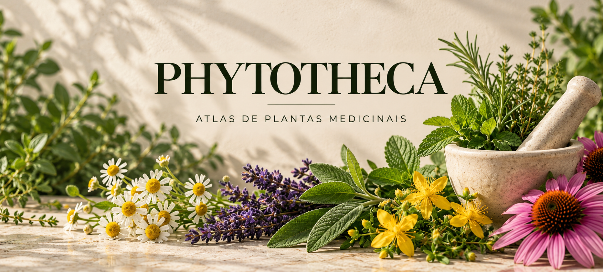

<!doctype html><html lang="pt-BR"><head><meta charset="utf-8"><meta name="viewport" content="width=device-width,initial-scale=1"><meta name="theme-color" content="#faf9f4"><title>PHYTOTHECA · Atlas de fitoterapia</title><link rel="preconnect" href="https://fonts.googleapis.com"><link href="https://fonts.googleapis.com/css2?family=Cormorant+Garamond:wght@400;500;600&family=DM+Sans:wght@400;500;600;700&display=swap" rel="stylesheet"><style>

@import url('https://fonts.googleapis.com/css2?family=DM+Sans:wght@400;500;600;700&family=Playfair+Display:ital,wght@0,500;0,600;0,700;1,500;1,600&display=swap');
:root{--bg:#faf9f4;--panel:#fff;--text:#26392d;--muted:#657267;--mint:#285e40;--accent:#6b876b;--line:#e1e8df}
*{box-sizing:border-box}html{background:#edf0e8}body{margin:0;background:#edf0e8;color:var(--text);font-family:'DM Sans',Arial,sans-serif}button,input{font:inherit}button{cursor:pointer}#app{max-width:680px;min-height:100dvh;margin:auto;background:var(--bg);padding-bottom:78px;box-shadow:0 0 45px #152b1d12}
.eyebrow{font-size:11px;letter-spacing:2.5px;text-transform:uppercase;color:#598068;font-weight:700}.small{font-size:12px;line-height:1.7;color:var(--muted)}
.hero{min-height:calc(100dvh - 76px);padding:36px 30px 34px;display:flex;flex-direction:column;justify-content:space-between;background:radial-gradient(ellipse at 85% 30%,#dcead7 0,transparent 42%),radial-gradient(ellipse at 0 70%,#f3e7d4 0,transparent 44%),#faf9f4;color:var(--text)}.hero-center{text-align:center;margin:auto 0}.hero-mark{width:118px;height:118px;border-radius:100%;display:grid;place-items:center;background:#e1ecde;color:#326c4a;font-size:63px;margin:0 auto 22px;box-shadow:0 12px 35px #4c6c4b1b}.hero h1{font:500 clamp(45px,10vw,72px)/1 'Playfair Display',Georgia,serif;margin:12px 0;color:#234b36;letter-spacing:-2px}.hero-sub{letter-spacing:2.3px;font-size:10px;color:#667869}.hero-bottom{display:grid;gap:18px}.search{width:100%;padding:17px 18px;border:1px solid #d9e2d7;border-radius:13px;background:#fff;color:var(--text);outline-color:#83b194;box-shadow:0 3px 14px #213a2310}.search::placeholder{color:#8a958c}.hero-actions{display:grid;grid-template-columns:1fr 1fr;gap:10px}.hero-actions button{background:#e6eee4;color:#28543c;padding:18px 13px;border:1px solid #d6e4d5;border-radius:12px;text-align:left;font-size:12px;font-weight:700}.hero-actions button:nth-child(2){background:#f3ece2;border-color:#ebe1d2}.hero-note{font:24px 'Playfair Display',Georgia,serif;color:#315e43}
.top{padding:35px 25px 18px}.top h2,.detail h2{font:600 clamp(35px,7vw,48px)/1.12 'Playfair Display',Georgia,serif;color:#244e37;margin:12px 0}.content,.detail{padding:0 25px 32px}.count{font-size:12px;color:#568069;margin:18px 0 14px}#list{display:grid;grid-template-columns:repeat(2,minmax(0,1fr));gap:12px;align-items:stretch}.plant{min-width:0;position:relative;display:flex;flex-direction:column;align-items:stretch;text-align:left;border:1px solid #e1e8df;border-radius:17px;padding:0 0 14px;overflow:hidden;background:#fff;box-shadow:0 5px 17px #1839200b;color:var(--text)}.plant:nth-child(4n+1){background:#edf3e9}.plant:nth-child(4n+2){background:#f6f0e4}.plant:nth-child(4n+3){background:#f4eae7}.plant:nth-child(4n+4){background:#eaf0f3}.thumb{width:100%;height:126px;display:grid;place-items:center;flex-shrink:0;background:linear-gradient(135deg,#d5e4d0,#e8eee0);color:#59876c;font-size:48px}.plant:nth-child(4n+2) .thumb{background:linear-gradient(135deg,#e5e5cc,#f4ead9)}.plant:nth-child(4n+3) .thumb{background:linear-gradient(135deg,#e7ddd5,#f4e5df)}.plant:nth-child(4n+4) .thumb{background:linear-gradient(135deg,#d5e4e7,#e9eef0)}.plant .plant-name{padding:12px 12px 0;min-width:0}.plant strong{display:block;font:600 clamp(15px,3.4vw,20px)/1.3 'Poppins',Arial,sans-serif;color:#244d38;overflow-wrap:anywhere}.plant em{display:block;color:#647268;font:normal 12px/1.5 'DM Sans',Arial,sans-serif;margin-top:7px}.arrow{position:absolute;right:12px;bottom:10px;color:#3c7653;font-size:20px}
.detail-hero{height:185px;background:radial-gradient(circle at 75% 35%,#e6eedf,transparent 50%),linear-gradient(135deg,#dce9d8,#f1f2e7);display:grid;place-items:center;color:#5b8a69;font-size:85px}.detail{padding-top:24px}.back{background:none;color:#2a6b48;border:0;padding:0;font-size:13px;font-weight:700}.latin{font:500 17px/1.5 'Poppins',Arial,sans-serif;color:#627468}.detail-title{display:flex;justify-content:space-between;align-items:center;gap:8px}.favorite{font-size:30px;background:none;border:0;color:#286443}.tabs{display:grid;grid-template-columns:repeat(2,minmax(0,1fr));gap:10px;overflow:visible;padding:23px 0}.tabs button{white-space:normal;min-height:65px;border:1px solid #dce4d8;border-radius:13px;padding:12px;background:#eaf2e7;color:#294a36;font-size:13px;font-weight:700;text-align:left;display:flex;align-items:center;gap:8px}.tabs button:nth-child(4n+2){background:#f6eee1}.tabs button:nth-child(4n+3){background:#e8eff4}.tabs button:nth-child(4n+4){background:#f5e9ec}.tabs button.active{background:#2c6a4a;color:#fff;border-color:#2c6a4a}.tab-icon{font-size:19px;flex-shrink:0}.section{padding:23px 0;border-bottom:1px solid var(--line)}.section h3{font:600 clamp(25px,5vw,31px)/1.2 'Playfair Display',Georgia,serif;color:#254d36;margin:0 0 10px}.section p{font-size:14px;line-height:1.85;color:#34483a;white-space:pre-line;margin:0}.section .label{font-size:10px;letter-spacing:2px;text-transform:uppercase;color:#6d896d;font-weight:700;margin-bottom:12px}.safety h3{color:#915d53}.notice{border-left:3px solid #b38b64;border-radius:0 10px 10px 0;background:#f5efe4;color:#4c594d;padding:13px 16px;font-size:12px;line-height:1.75;margin-top:20px}.nav{position:fixed;bottom:0;left:50%;transform:translateX(-50%);max-width:680px;width:100%;display:grid;grid-template-columns:repeat(4,1fr);background:#fff;border-top:1px solid #dce4dc;height:76px;z-index:10;box-shadow:0 -4px 18px #19351d0c}.nav button{background:none;border:0;color:#78867b;font-size:11px}.nav button b{display:block;font-size:23px;font-weight:400;margin-bottom:4px}.nav button.active{color:#276947;font-weight:700}.field{display:grid;gap:7px;margin:15px 0}.field label{font-size:12px;color:var(--muted)}.field input{padding:13px;background:#fff;border:1px solid var(--line);color:var(--text);border-radius:9px}.action{background:#286a49;color:#fff;border:0;border-radius:9px;padding:13px 18px}.result{padding:20px;border:1px solid var(--line);margin-top:20px;background:#fff;border-radius:14px}.result strong{font:40px 'Playfair Display',Georgia,serif;color:#276746}a{color:#286a49}
@media(max-width:390px){.top,.content,.detail{padding-left:18px;padding-right:18px}.hero{padding-left:20px;padding-right:20px}#list{gap:9px}.thumb{height:100px}.plant .plant-name{padding:10px 9px 0}.plant strong{font-size:17px}.tabs{gap:8px}.tabs button{font-size:12px;padding:10px}}

/* Fotografias botânicas por espécie, sem aplicar a mesma foto a todas as fichas. */
.thumb.has-photo{
  background-size:cover!important;
  background-repeat:no-repeat!important;
  background-position:center center!important;
  font-size:0!important;
}

.detail-hero.has-photo{
  height:clamp(300px, 48vw, 480px)!important;
  width:100%!important;
  max-width:none!important;
  background-size:cover!important;
  background-repeat:no-repeat!important;
  background-position:center center!important;
  border-radius:0 0 18px 18px;
  font-size:0!important;
}
/* PHYTOTHECA - revisão visual 21/10/2026 */
@import url('https://fonts.googleapis.com/css2?family=Poppins:wght@400;500;600;700&display=swap');
html,body,#app{background:#faf9f4!important;color:#253a2e!important}
.hero{background:radial-gradient(circle at 85% 30%,#e5eee1,transparent 48%),radial-gradient(circle at 10% 70%,#f4eadb,transparent 48%),#faf9f4!important;color:#253a2e!important}
.top,.content,.detail{background:#faf9f4!important;color:#253a2e!important}
.plant,.plant:nth-child(n){background:#fff!important;border-color:#e0e7dc!important;box-shadow:0 5px 20px #1a372112!important}
.plant:nth-child(4n+1){background:#edf4e9!important}.plant:nth-child(4n+2){background:#f6f0e4!important}.plant:nth-child(4n+3){background:#f4eae7!important}.plant:nth-child(4n+4){background:#eaf0f3!important}
.plant strong,.plant .plant-name strong{font-family:'Poppins',Arial,sans-serif!important;font-style:normal!important;font-weight:600!important;font-size:clamp(15px,3.4vw,20px)!important;line-height:1.35!important;color:#244a37!important;letter-spacing:-.3px!important}
.latin{font-family:'Poppins',Arial,sans-serif!important;font-style:normal!important;font-size:16px!important;color:#4e6858!important}
.plant em{font-family:'Poppins',Arial,sans-serif!important;font-style:normal!important;color:#607264!important}
.search,.field input{background:#fff!important;color:#26392d!important;border:1px solid #dce6dc!important}
.tabs button{font-family:'Poppins',Arial,sans-serif!important}

.nav{background:#fff!important;border-top:1px solid #dce5da!important}

/* Capa de abertura: imagem integral sem cortar o título ou as plantas. */
.hero{min-height:100dvh;padding:18px 18px 28px;gap:12px;justify-content:space-between}
.hero-center.hero-cover{width:100%;margin:8px auto;display:flex;align-items:center;justify-content:center;min-height:0;flex:1}
.hero-cover img{display:block;width:100%;height:auto;max-height:65dvh;object-fit:contain;border-radius:12px}
.hero-cover-fallback{padding:90px 0;text-align:center}
@media(max-height:680px){.hero-cover img{max-height:53dvh}}

/* PHYTOTHECA — capa em largura total e leitura científica */
.hero{padding-left:16px!important;padding-right:16px!important;gap:16px!important}
.hero-center.hero-cover{width:100%!important;margin:0 auto!important;flex:1;min-height:0;overflow:hidden;border-radius:14px}
.hero-cover img{display:block!important;width:100%!important;height:clamp(490px,73dvh,940px)!important;max-height:none!important;object-fit:cover!important;object-position:center 49%!important;border-radius:14px!important}
@media(min-width:750px){.hero{padding-left:20px!important;padding-right:20px!important}.hero-cover img{height:clamp(600px,76dvh,1000px)!important}}
@media(max-width:480px){.hero-cover img{height:68dvh!important;min-height:390px!important;object-position:center 45%!important}}
/* Tipografia sobre fundo escuro nas fichas */
.detail .section p,.detail .section li{color:#DCE3D5!important;text-align:justify!important;text-justify:inter-word!important;line-height:1.9!important;hyphens:auto;overflow-wrap:break-word}
.detail .section h3{color:#B7D8C0!important;line-height:1.24!important}
.detail .section .eyebrow{color:#D8C5A2!important}

/* Ajustes finais: capa de ponta a ponta e contraste legivel */
#app{max-width:none!important}
.hero{padding-left:0!important;padding-right:0!important;gap:14px!important}
.hero>.eyebrow,.hero>.hero-actions,.hero>.hero-note,.hero>.search{margin-left:max(20px,calc((100% - 760px)/2))!important;margin-right:max(20px,calc((100% - 760px)/2))!important}
.hero-center.hero-cover{width:100%!important;max-width:none!important;position:relative;isolation:isolate;overflow:hidden!important;border-radius:0!important;margin:0!important;background:#353b30}
.hero-center.hero-cover::before{content:'';position:absolute;inset:-28px;z-index:-1;background:url('capa-phytotheca.png') center center / cover no-repeat;filter:blur(20px) brightness(.62);transform:scale(1.07)}
.hero-cover img{height:clamp(500px,74dvh,1000px)!important;width:100%!important;max-width:100%!important;object-fit:contain!important;object-position:center!important;border-radius:0!important}
.hero-actions button{font-size:clamp(14px,1.7vw,17px)!important;line-height:1.4!important;padding:20px 17px!important;min-height:76px!important}
.hero-actions button::first-letter{font-size:1.2em}
.detail,.content,.top{max-width:840px;margin-left:auto;margin-right:auto}
.detail .section p,.detail .section li,.detail .section div:not(.label){color:#F6F5F0!important}
.detail .section h3,.detail-title h2,.top h2{color:#D0E9D8!important}
.detail .section.safety h3,.detail .section h3.safety{color:#F09A9A!important}
.detail .section .label{color:#D7C7A8!important}
.detail .section p{text-align:justify!important;line-height:1.9!important}
/* Títulos de seguranca e contraindicacoes, sem colorir o conteudo geral */
.detail .section:has(h3) h3{line-height:1.3!important}
.detail .section:has(h3) h3[data-risk]{color:#F09A9A!important}
@media(max-width:600px){.hero>.eyebrow,.hero>.hero-actions,.hero>.hero-note,.hero>.search{margin-left:16px!important;margin-right:16px!important}.hero-cover img{height:68dvh!important;min-height:390px!important}}

/* Tema claro definitivo — contraste acessivel, sem alterar fotografias ou conteudo */
html,body,#app{background:#FAF9F4!important;color:#29362E!important}
.detail,.content,.top{color:#29362E!important}
.detail-title h2,.detail h2,.top h2,.detail .section h3{color:#24543B!important}
.detail .section p,.detail .section li,.detail .section div:not(.label){color:#303A32!important}
.detail .section .label,.detail .section .eyebrow{color:#786D53!important}
.detail .section.safety h3,.detail .section h3.safety,.detail .section h3[data-risk]{color:#A43C43!important}
.detail .latin,.detail .back{color:#42624E!important}
.notice{color:#465145!important;background:#F5EFE4!important}
.hero-note{color:#28543C!important}
@media(prefers-color-scheme:dark){html,body,#app{background:#FAF9F4!important;color:#29362E!important}}

/* Ajustes finais: capa horizontal e tipografia editorial */
@import url('https://fonts.googleapis.com/css2?family=Cormorant+Garamond:wght@500;600;700&family=Inter:wght@400;500;600;700&display=swap');
body,button,input,.section p,.small,.label,.hero-note{font-family:'Inter',Arial,sans-serif!important}
.section h3,.top h2,.detail-title h1,.detail h1,.hero h1{font-family:'Cormorant Garamond',Georgia,serif!important;font-weight:600!important}
.hero-center.hero-cover{background:#f1e8d8!important;overflow:hidden!important;isolation:auto!important;flex:none!important;width:100%!important;min-height:0!important}
.hero-center.hero-cover::before{display:none!important;content:none!important}
.hero-cover img{width:100%!important;height:auto!important;min-height:0!important;max-height:none!important;aspect-ratio:16/9!important;object-fit:cover!important;object-position:center!important;border-radius:0!important}
.hero{min-height:0!important;gap:0!important;padding:0 0 20px!important}
.hero>.eyebrow{padding:18px 22px!important;margin:0!important}
.hero-bottom{width:100%!important;padding:14px 20px 8px!important}
.hero-actions button{font-family:'Inter',Arial,sans-serif!important;font-size:15px!important;font-weight:600!important}
@media(min-width:700px){#app{max-width:100%!important}.hero-cover img{aspect-ratio:16/9!important}.hero-bottom{max-width:1100px;margin:auto}}

/* PHYTOTHECA — legibilidade ampliada no tablet (22/10/2026).
   Preserva a capa horizontal, as fotos botânicas e o conteúdo das 28 fichas. */
body,button,input{font-family:'Inter',Arial,sans-serif!important}
.detail .section p,.detail .section li{font-size:18px!important;line-height:1.85!important;letter-spacing:.005em!important;text-align:justify!important;hyphens:auto!important;overflow-wrap:break-word!important;color:#303A32!important}
.detail .section h3{font-family:'Cormorant Garamond',Georgia,serif!important;font-size:clamp(30px,3.7vw,37px)!important;line-height:1.16!important;font-weight:600!important;color:#24543B!important}
.detail .section.safety h3,.detail .section h3.safety,.detail .section h3[data-risk]{color:#A43C43!important}
.detail .section .label,.detail .section .eyebrow{font-size:13px!important;letter-spacing:1.4px!important}
.detail .latin{font-size:17px!important}
.tabs button{font-family:'Inter',Arial,sans-serif!important;font-size:16px!important;line-height:1.4!important;min-height:79px!important;padding:16px 15px!important;gap:12px!important}
.hero-actions button{font-family:'Inter',Arial,sans-serif!important;font-size:18px!important;line-height:1.35!important;min-height:88px!important;padding:21px 19px!important}
.hero-actions button::first-letter{font-size:1.35em!important}
.search,.search input,.field input{font-size:17px!important}
.nav{height:90px!important;max-width:900px!important}
.nav button{font-family:'Inter',Arial,sans-serif!important;font-size:13px!important;line-height:1.2!important}
.nav button b{font-size:29px!important;line-height:1.15!important;margin-bottom:5px!important}
#app{padding-bottom:96px!important}
.hero-cover img{width:100%!important;aspect-ratio:16/9!important;object-fit:cover!important;object-position:center!important}
@media(max-width:600px){
 .detail .section p,.detail .section li{font-size:16px!important;line-height:1.8!important}
 .detail .section h3{font-size:29px!important}
 .tabs button{font-size:14px!important;min-height:75px!important;padding:13px 10px!important;gap:7px!important}
 .hero-actions button{font-size:15px!important;min-height:77px!important;padding:15px 12px!important}
 .nav{height:82px!important}.nav button{font-size:12px!important}.nav button b{font-size:26px!important}
}
</style></head><body><div id="app"></div><script>
const mementoEvidence=[{"Não clínicos — farmacológicos":"O extrato isopropílico dos rizomas de cimicífuga inibiu o crescimento de células de câncer de mama (linhagem 435), quando testado em concentrações superiores a 2,5 mg/mL. Resultados similares foram observados para a linhagem celular MCF-7, quando tratada com o extrato isopropílico de rizomas a 40%, nas doses de 1 µg/mL a 100 mg/mL, sendo observada inibição dose-dependente sobre a proliferação celular. Os constituintes da fração clorofórmica obtida do extrato metanólico de rizomas se ligaram a receptores estrogênicos in vitro. Ratas ooforectomizadas foram tratadas por via intraperitoneal durante cinco dias com formononetina (equivalente a 10 mg) e extrato diclorometânico dos rizomas (equivalente a 108 mg), sendo observado que apenas o extrato reduziu as concentrações séricas de hormônio luteinizante. A administração intraperitoneal de extrato clorofórmico (140 mg), extrato etanólico 60% (0,3 mL) ou extrato diclorometânico (27 mg) reduziu os níveis séricos de hormônio luteinizante em ratas ooforectomizadas após 3–3,5 dias de tratamento. Não houve alteração nos níveis de hormônio folíco-estimulante e prolactina. A administração intragástrica de extrato etanólico de rizomas 95% (dose diária, 0,05 mL/animal) não exerceu efeito sobre as funções genitais de camundongos fêmeas. Estudos sugerem que a fração diclorometânica pode atuar como modulador seletivo de receptores estrogênicos. A injeção subcutânea do extrato etanólico (100 mg/kg) reduziu o edema de pata induzido em ratos.(2) Experimentos in vivo provaram que as substâncias dos extratos de A. racemosa (AR) não se ligam aos receptores de estrogênio. Esses extratos não exercem qualquer efeito estrogênico no útero e na glândula mamária, conforme mostrado em experiências em ratas ovariectomizadas.(16)","Não clínicos — toxicológicos":"O extrato isopropílico a 40% não apresentou efeitos mutagênicos no ensaio de microssoma em salmonela. A administração intragástrica diária de A. racemosa (doses superiores a 2 g/kg) em ratas prenhas (dias 7–17 da gestação), não produziu efeito teratogênico.(2)","Clínicos — farmacológicos":"Há vários estudos comparando a eficácia do extrato de A. racemosa com a terapia com estrogênios conjugados e placebo, no alívio dos sintomas físicos e psíquicos relacionados ao climatério. Um estudo duplo-cego foi realizado para comprovar a melhora dos sintomas do climatério em mulheres tratadas com extrato de A. racemosa (dose correspondente a 40 mg droga vegetal/dia) por 12 semanas, comparado ao tratamento com estrogênios conjugados e placebo. A redução na frequência e intensidade dos sintomas foi semelhante para extrato de A. racemosa e estrogênios conjugados, ambos foram significativamente melhores que o placebo.(8) Experimentos provaram que as substâncias dos extratos de A. racemosa (AR) não se ligam aos receptores de estrogênio em mulheres na pós-menopausa. Estudos em mulheres com queixas climatéricas indicaram que substâncias com atividades like neurotransmissores afetam beneficamente os sintomas da pós-menopausa, tais como as ondas de calor. Algumas destas substâncias, tais como os triterpenos tipo acteina com atividade GABAérgica e análogo da serotonina, estão presentes, e foram identificados nos extratos de AR.(16)","Clínicos — toxicológicos":"A metanálise de cinco ensaios clínicos randomizados, duplo cego com mulheres na perimenopausa e pós-menopausa (N=1117), utilizando o extrato isopropanólico de cimicifuga em doses de 40-128 mg por 3 a 6 meses não relatou danos significativos no fígado por meio das analises das enzimas aspartato aminotransferase e alanina aminotransferase.(17, 18) Estudo clínico longitudinal prospectivo com 87 mulheres na pós-menopausa que receberam 40 mg de um extrato seco de Acataea racemosa para tratar os sintomas da menopausa durante 12 meses não relatou alterações nos testes de função hepática ou perfusão hepática.(19)"},{"Não clínicos — farmacológicos":"A administração intravenosa do extrato etanólico 95% das sementes de castanha-da-índia em cobaia (0,2–0,4 mL/kg) provocou redução do eritema induzido por histamina. Foi observado que o extrato etanólico 30% por via oral, produziu efeito protetor em ratos, nos ensaios de edema de pata e artrite induzida por carragenina. Após a administração intraperitoneal da fração contendo saponinas isoladas do extrato das sementes da castanha-da-índia produziu atividades analgésica, anti-inflamatória e antipirética in vivo. Além disso, essa fração foi capaz de inibir a enzima prostaglandina sintetase in vitro. Ensaio realizado em ratos indicou que a administração intravenosa de escina (0,5–120 mg/ kg) inibiu o edema de pata de rato e a formação de granuloma.(3)","Não clínicos — toxicológicos":"Turolla e Nascimento(15) apresentam vários estudos sobre preparações a base de A. hippocastanum e relatam que nessas pesquisas houve baixa ou nenhuma toxicidade aguda e crônica, e terato e genotoxidade, em diferentes espécies animais.","Clínicos — farmacológicos":"De 23 estudos realizados em humanos com administração oral do extrato de Aesculus hippocastanum, num total de 4.339 pacientes participantes, para comprovação da sua ação sobre as desordens venosas, todos apresentaram resultados positivos com melhora do estado do paciente.(7) Em estudos de metanálises e revisões de alguns ensaios randomizados, duplo-cegos e controlados verificou-se que o extrato das sementes de A. hippocastanum foi eficaz no tratamento da insuficiência venosa crônica.(16,17)","Clínicos — toxicológicos":"Em estudos com oito espécies do gênero Aesculus foram relatados que 3.099 casos analisados de 1985 a 1994, cerca de 50% das exposições ocorreram com crianças entre 0 e 5 anos de idade. Em 77% dos casos (2374) não foram detectados quaisquer efeitos tóxicos; em 11,5% dos casos (356) ocorreram efeitos mínimos a moderados. Nos demais 11,5% (359) dos casos, os efeitos foram classificados como de toxicidade potencialmente desconhecida.(14)"},{"Não clínicos — farmacológicos":"O mecanismo, da hipocolesterolemia e da hipolipidemia produzidas pelo extrato de A. sativum, envolve a inibição da enzima hepática hidroximetilglutaril-CoA redutase (HMG-CoA redutase) e o remodelamento das lipoproteínas plasmáticas e das membranas celulares.(21,22) Em concentrações menores que 0,5 mg/mL, o extrato obtido de A. sativum inibe a atividade da HMG-CoA redutase. Entretanto, em maiores concentrações, ocorre a inibição de outras enzimas em estágios mais tardios da biossíntese do colesterol. Esse mecanismo foi constatado in vitro devido, principalmente, aos organosulfurados alicina e alhoeno, presentes no alho. A atividade anti-hipertensiva foi demonstrada in vivo para A. sativum. O mecanismo sugere a diminuição da resistência vascular por relaxamento direto da musculatura lisa devido à hiperpolarização causada pela abertura dos canais de K+, o que resulta em vasodilatação também decorrente do fechamento dos canais de cálcio.(23,24)","Não clínicos — toxicológicos":"Atóxico de acordo com os dados descritos na literatura consultada.(5)","Clínicos — farmacológicos":"Sobre o efeito do A. sativum na pressão arterial, numa metanálise revisou-se um total de 11 estudos randomizados e controlados, utilizando entre 0,60 - 0,90 g/dia de comprimidos do pó seco, com duração média de 12 semanas. Em oito deles utilizaram 415 sujeitos de pesquisa e em três estudos utilizaram sujeitos de pesquisa portadores de hipertensão arterial. Em sete estudos compararam A. sativum com placebo, em três deles houve um decréscimo na pressão sistólica, e em quatro estudos houve redução na pressão diastólica. Os resultados proporcionaram evidências para o uso de A. sativum na hipertensão arterial.(25) Quanto aos efeitos de A. sativum sobre os lipídios séricos e lipoproteínas, foram identificadas duas metanálises e sete revisões sistemáticas, em que atribuiram um efeito significativo do alho na redução do colesterol total e LDL em indivíduos com hipercolesterolemia. (26) Tal revisão incluiu 39 ensaios clínicos, em que utilizaram o alho como monoterapia, por pelo menos duas semanas. Uma metanálise de 25 estudos randomizados e controlados foi realizada com a dose diária variando entre 600-900 mg em comprimidos com pó seco. A duração média dos estudos foi de 12 semanas. No geral, os sujeitos de pesquisa que receberam A. sativum tiveram, em média, redução de 12% na taxa de colesterol total e diminuição de 13% na taxa de triglicerídeos séricos, confirmando a ação hipolipemiante de A. sativum.(27) Em outra metanálise de estudos controlados chegou-se a conclusões semelhantes quanto aos efeitos de A. sativum sobre o colesterol,(28) assim como em outra revisão sistemática de oito estudos.(29) Dentre esses estudos, em sete usaram como dose diária entre 0,60 - 0,90 g, reduzindo o colesterol sérico e os níveis de triglicerídeos em 5-20%.(29) Tratamentos com o pó de A. sativum, 300 mg, três vezes ao dia, e benzofibrato 200 mg, três vezes ao dia, por 12 semanas, foram igualmente efetivos no tratamento de 98 pacientes com hiperlipidemia primária num estudo multicêntrico e randomizado. Ambos medicamentos causaram redução estatisticamente significativa do colesterol total, na lipoproteína de baixa densidade (LDL) e dos triglicerídeos, além de aumento na lipoproteína de alta densidade (HDL).(11) Foi observado aumento da atividade fibrinolítica em pacientes portadores de aterosclerose depois da administração de extrato aquoso, pó e óleos essenciais de A. sativum.(30) Em estudos clínicos concluíram que o A. sativum ativa a fibrinólise endógena e que esse efeito é detectável nas primeiras administrações e se intensifica quando administrado regularmente. (31) Doses de 600-1200 mg de pó de A. sativum diminuíram a viscosidade plasmática e os níveis do hematócrito.(29)","Clínicos — toxicológicos":"Não há relatos de toxicidade nas doses recomendadas.(5)"},{"Não clínicos — farmacológicos":"Em estudos in vivo concluiram que o gel de aloe promove a cicatrização por estimulação direta de macrófagos e fibroblastos. Essa atividade possivelmente é modulada por polissacarídeos, predominantemente constituído por manose. Um carboidrato complexo isolado de aloe acelerou a cicatrização e reduziu reações na pele induzidas por radiação. O possível mecanismo dessa atividade envolve primeiro a ativação de macrófagos, que estimulam a liberação de citocinas fibrogênicas. Posteriormente, pode haver ligação direta de fatores de crescimento ao carboidrato, prolongando a estimulação do tecido de granulação. Os efeitos terapêuticos do gel de aloe incluem prevenção da isquemia dérmica progressiva causada por queimaduras; ulcerações causadas pelo frio; queimadura elétrica e abuso de drogas por via intra-arterial. Em estudos in vivo concluiram que o gel de aloe atua como inibidor da síntese de tromboxano A2, um mediador do dano tecidual progressivo. O gel fresco de aloe reduziu significativamente a inflamação aguda em ratos, não sendo observado nenhum efeito sobre a inflamação crônica. Possíveis mecanismos de ação anti-inflamatória do gel de aloe incluem ação sobre a bradiquinase e inibição de tromboxano B2 e prostaglandina F2. Esteroides existentes no gel de aloe, incluindo lupeol, podem contribuir para a ação anti-inflamatória.(5)","Não clínicos — toxicológicos":"Não foram encontrados dados descritos na literatura consultada.","Clínicos — farmacológicos":"Em estudo duplo-cego randomizado concluiu-se que uma formulação contendo gel de aloe combinado com tretinoína foi significativamente mais efetiva do que tratamentos com creme contendo tretinoína e placebo, no tratamento de acne.(7) O gel fresco de aloe tem sido utilizado para o tratamento de queimaduras induzidas por radiação. Um creme contendo aloe acelerou a cicatrização de úlceras causadas por radiação, entretanto, o gel fresco foi mais efetivo. Em ensaio clínico placebocontrolado com 27 pacientes com queimaduras concluiu-se que o grupo tratado com gel de aloe apresentou cicatrização mais rápida do que o grupo tratado com gaze vaselinada. Em investigações clínicas concluiu-se que o gel de aloe acelera os processos de cicatrização.(5) Estudo randomizado, duplo cego, placebo controlado, com pacientes submetidos a hemorroidectomia aberta, que fizeram uso do creme contendo A. vera apresentaram menor grau de dor pós-operatória, cicatrização superior e menor consumo de analgésicos quando comparado com o grupo placebo.(8) Um creme contendo A. vera a 0,5% foi avaliado em comparação com sulfadiazina de prata a 1% no tratamento de queimaduras, em trinta pacientes que apresentavam queimadura de segundo grau. O creme contendo A. vera mostrou-se superior quanto ao processo de cicatrização e reepitelização da pele ocorrendo em menos de 16 dias, enquanto que o tratamento com o creme de sulfadiazina de prata o processo de cicatrização foi em média de 19 dias.(9)","Clínicos — toxicológicos":"Encontram-se relatos de ocorrência de dermatite de contato e sensação de queimação, em decorrência do uso tópico de gel de A. vera. Possivelmente, essas reações devem-se à presença de resíduos de antraquinonas no gel utilizado.(5,10)"},{"Não clínicos — farmacológicos":"Foram demonstradas ações antimicrobiana,(15) anti-inflamatória,(16,17) cicatrizante e sobre mucosite oral.(18,19) Extratos de Calendula officinalis são capazes de aumentar a revascularização,(20) efeito que pode contribuir para a atividade cicatrizante atribuída à espécie. O número de microvasos observados em membranas corioalantóica de galinha tratadas com extrato aquoso a 3% das flores de C. officinalis foi significativamente maior do que nas membranas tratadas com o controle (20,3 ± 2,9 versus 3,8 ± 0,2 respectivamente, p < 0,0001). Esse efeito foi associado à deposição de ácido hialurônico, observada nas membranas tratadas, mas não nas membranas controle. Ainda, constituintes isolados do extrato aquoso de C. officinalis, como polissacarídeos, aumentam a fagocitose em granulócitos humanos in vitro e in vivo em camundongos (via intraperitoneal 10 mg/kg).(21,22) O extrato hidroalcoólico das flores de C. officinalis, incorporado em base gel (a 5 ou 10%), foi testado em modelo de mucosite da cavidade oral em hamsters. Os grupos tratados com o gel (5 e 10%), administrado topicamente diariamente após o 12º dia, foram capazes de reduzir os escores da mucosite comparados ao grupo controle. Esses escores estavam associados à completa epitelização e a presença de tecido conectivo normal no grupo tratado com gel a 10%. Em um estudo com coelhos machos,(23) um creme a base de tintura de C. officinalis a 5% administrado por via tópica diariamente, foi capaz de aumentar o número de fibroblastos nas feridas cirúrgicas induzidas na região cervical dorsal dos animais em relação ao grupo controle. Uma pomada com base de vaselina formulada com extrato etanólico de C. officinalis também foi capaz de acelerar o processo de cicatrização em feridas cirúrgicas de cães.(24) Em um estudo que avaliou o efeito combinado da terapia com ultrassom e aplicação tópica de gel a base de C. officinalis em lesões musculares feitas cirurgicamente em ratos, foram descritos efeitos cicatrizante e anti-inflamatório quando da aplicação combinada do gel e terapia com ultrassom comparado apenas ao ultrassom isoladamente.(25) O efeito anti-inflamatório da espécie tem sido atribuído à presença de ésteres de álcoois triterpênicos, como o palmitato e miristato de faradiol e a glicosídeos triterpênicos. No estudo envolvendo a ação de ésteres de faradiol em modelo de inflamação induzido por ésteres de forbol em orelha de camundongos,(16) os percentuais de inibição do edema encontrados foram de 55, 46, 45, 49 e 73% para a mistura de monoésteres de faradiol, 3-miristato de faradiol, 3-palmitato de faradiol, Ψ-taraxasterol, e faradiol, respectivamente. A atividade de vários glicosídeos triterpênicos isolados de C. officinalis sobre a inflamação induzida por acetato de tetradecanoil forbol (TPA) em orelha de camundongos também foi estudada.(17) Nove glicosídeos triterpênicos foram capazes de inibir a inflamação induzida por TPA em orelha de camundongo com valores de inibição médios (DI50) variando entre 0,05 a 0,2 mg/orelha. A atividade anti-inflamatória relatada para os extratos das flores de C. officinalis está relacionada à sua ação cicatrizante, já que em muitos casos o processo inflamatório normal que acompanha a cicatrização e que leva à formação do tecido de granulação pode estar exacerbado.(17)","Não clínicos — toxicológicos":"Não foi observado efeito espermicida induzido por extrato de calêndula sobre espermatozoides humanos.(26) Baixa toxidade aguda e subcrônica em ratos.(27) Foi observado aumento nos níveis séricos da ureia, alanina e aminotransferase, após administração de altas doses do extrato, possivelmente devido a sobrecarga renal e hepática.(2)","Clínicos — farmacológicos":"O uso do infuso de calêndula, quatro vezes ao dia, durante sete dias, na forma de enxaguatório bucal, produziu a cicatrização do tecido lesionado após cirurgia periodontal.(28) A utilização de gel oral contendo extrato de flores de calêndula (2%, p/v) reduziu a intensidade da mucosite orofaríngea induzida por radiação em pacientes com câncer de cabeça e pescoço.(29) Foi observada atividade antisséptica em pacientes tratados com formulação a base da tintura de calêndula após extração dos terceiros molares.(30) Em um estudo aberto, não controlado, trinta pacientes com queimaduras, foram tratados por meio de aplicações de hidrogel contendo 10% de extrato hidroetanólico de C. officinalis, três vezes ao dia, por 14 dias. O efeito foi notado pela redução dos sinais de eritema, edema, bolhas, dor e sensibilidade ao calor.(31) Revisão sistemática identificou seis ensaios clínicos envolvendo calêndula e concluiu que cremes a base de extrato de calêndula (2-10%) são úteis na cicatrização de feridas.(32) Em ensaio clínico duplo-cego, randomizado,(33) comparou-se a eficácia, de um creme-gel, gel de aloe (n=32) com uma pomada de calêndula a 1,5% (n=34), em diminuir a severidade e a frequência de dermatite induzida por uso de fralda. A severidade da dermatite foi reduzida em ambos os grupos ao final do tratamento (p=0,001), mas de forma mais pronunciada no grupo tratado com C. officinalis (p = 0,001). Não houve relato de nenhuma reação adversa aos tratamentos.","Clínicos — toxicológicos":"Não foram encontrados dados descritos na literatura consultada."},{"Não clínicos — farmacológicos":"O extrato aquoso seco de folhas inibiu a biossíntese de colesterol em cultura de células de hepatócitos de ratos. Foi observada inibição moderada da produção dessa substância (aproximadamente 20%) com o extrato na faixa de concentração entre 0,007 e 0,1 mg/mL, enquanto a concentração de 1 mg/mL foi capaz de exercer maior inibição (80%). O cinarosídeo e sua aglicona, luteolina, são os principais responsáveis por essa atividade.(7) Dois extratos hidroetanolicos de folhas frescas (extrato com 19% de ácidos cafeoilquinicos, administrado na dose de 200 mg/kg e extrato com 46% de ácidos cafeoilquinicos, administrado na dose de 25 mg/kg) foram administrados por via intraperitoneal em ratos. Foi observado estímulo da colerese, aumento significativo do resíduo seco da bile e da sua secreção total.(8)","Não clínicos — toxicológicos":"No estudo sobre a toxicidade crônica da Cynara scolymus com a utilização da infusão de folhas secas da planta (15 g/200 mL), na dose de 250 mg/kg, 4 a 6 vezes ao dia, durante 6 semanas em ratos machos, observou-se ausência de sinais toxicológicos para C. scolymus.(9) A dose letal média do extrato hidroetanólico das folhas de C. scolymus em ratos por via oral e intraperitoneal é respectivamente, 2,0 g/kg e 1,0 g/kg.(8-10) A dose letal média de cinarina em camundongos é 1,9 g/kg. Não foram observadas alterações macroscópicas, hematológicas ou histológicas após administração intraperitoneal de cinarina (doses de 50 e 400 mg/kg/dia) durante 15 dias em ratos. No entanto, a administração intraperitoneal de cinarina em ratos durante 40 dias, utilizando-se dose diária entre 100 - 400 mg/kg gerou aumento no peso corporal e dos rins, além de gerar mudanças degenerativas no fígado.(11) Aplicação tópica do extrato de folhas na pele de ratos (1,0–3,0 g/kg) por 21 dias não produziu efeitos tóxicos ou cumulativos nos parâmetros hematológicos e bioquímicos dos animais. Não foi observada irritação dérmica ou ocular em ensaios realizados em cobaio.(12)","Clínicos — farmacológicos":"Estudos clínicos de Fase IV conduzidos em pacientes com dispepsia ou disfunções hepáticas ou biliares, incluindo estudos com mais de 400 pacientes em tratamentos de 4 - 6 semanas, demonstraram redução significativa dos sintomas de dor, desconforto abdominal, gases e náuseas. O medicamento foi bem tolerado com baixa taxa de efeitos adversos. (13) Em estudo clínico randomizado, 20 homens com disfunções metabólicas foram separados em dois grupos. O grupo teste recebeu 320 mg do extrato padronizado de C. scolymus (mínimo 2,5% de derivados de ácido cafeoilquínico expressos em ácido clorogênico). A secreção intraduodenal biliar aumentou 127,3% após 30 minutos, 151,5% após 60 minutos e 945,3% após 90 minutos. No grupo placebo houve variações em proporções muito menores. Não foram observados efeitos adversos.(15)","Clínicos — toxicológicos":"Não foram encontrados dados descritos na literatura consultada."},{"Não clínicos — farmacológicos":"O extrato de E. purpurea atua como imunomodulador por meio de vários mecanismos, confirmados por estudos científicos: ativação da fagocitose, estímulo dos fibroblastos e aumento da mobilidade dos leucócitos.(7,8,9) Foram também relatadas inibição da atividade da hialuronidase, estimulação do córtex adrenal onde são produzidos os glicocorticóides (como a corticosterona e a hidrocortisona), estimulação da produção de properdina (proteína sérica que neutraliza bactérias e vírus) e estimulação da produção de interferon.(10) A atividade imunomoduladora do extrato aquoso e alcoólico de E. purpurea parece depender de um efeito conjunto de vários componentes, como alcamidas, polissacarídeos e derivados do ácido cafeico, principalmente ácido chicórico.(3)","Não clínicos — toxicológicos":"Extratos de E. purpurea não causaram toxicidade em ensaios de dose única e dose repetida (roedores) e em estudos de genotoxicidade.(5)","Clínicos — farmacológicos":"No estudo clínico realizado com 120 pacientes com infecção aguda do trato respiratório houve maior redução do tempo de duração da doença e melhora significativa dos sintomas entre os pacientes tratados com extrato aquoso de E. purpurea do que entre aqueles que foram tratados com placebo.(11) Em outro estudo realizado com 59 pacientes com infecção aguda do trato respiratório, houve redução das queixas relativas a um índice de 12 sintomas em 64% dos pacientes tratados com E. purpurea e 29% entre aqueles que foram tratados com placebo.(12)","Clínicos — toxicológicos":"Não foram encontrados dados descritos na literatura consultada."},{"Não clínicos — farmacológicos":"Em ensaio em camundongos utilizando o extrato hidroetanólico houve efeitos antinoceptivo e antiinflamatório.(5)","Não clínicos — toxicológicos":"Em estudo em ratos Wistar tratados por 14 dias com extrato hidroetanólico de Equisetum arvense nas dosagens de 30, 50 e 100 mg/kg, não foi verificada hepatotoxicidade.(4) No estudo realizado em ratas Wistar tratadas por via oral, com três diferentes doses de extrato etanólico de Equisetum arvense (30 mg/kg, 60 mg/kg e 120 mg/kg) por um período de 30 dias, não foram observados efeitos tóxicos referentes aos sinais clínicos, o peso corporal e peso de órgãos. Na dose de 60 mg/kg foi encontrado diferença significativa em relação ao grupo controle para os parâmetros hemato-bioquímicos. Os parâmetros histológicos do tecido hepático de todos os três grupos mostraram arquitetura celular normal. A análise histopalógica do osso do fémur mostrou diminuição na largura trabecular, sugerindo efeito tóxico do extrato na dose de 60 mg/kg. Assim, o estudo concluiu que o extrato etanólico de E. arvense produz efeito tóxico de forma dose-dependente.(15)","Clínicos — farmacológicos":"Em ensaio clínico randomizado em três etapas, duplo-cego, com 36 voluntários saúdaveis do sexo masculino distribuidos aleatoriamente em três grupos (n = 12) durante quatro dias consecutivos, administrou-se, alternadamente, extrato seco padronizado de Equisetum arvense (EADE, 900 mg/ dia) e placebo (amido de milho, 900 mg/dia), ou hidroclorotiazida (25 mg/dia), por um período de 10 dias. O extrato de E. arvense causou efeito diurético mais pronunciado que o controle negativo e foi equivalente a hidroclorotiazida sem causar mudanças significativas na excreção de eletrólitos. Não houve aumento significativo na eliminação urinária de catabólitos. Nos exames e testes laboratoriais clínicos não houve alterações antes ou depois do Equisetum arvense L. 41i experimento, o que sugere que o EADE é seguro para uso agudo.(14)","Clínicos — toxicológicos":"Não foram encontrados dados descritos na literatura consultada."},{"Não clínicos — farmacológicos":"O extrato padronizado de Ginkgo biloba (100 μg/ mL) potencializou o efeito contrátil da norepinefrina. Possivelmente, a ação contrátil induzida por G. biloba se refere a liberação de catecolaminas de reservas dos tecidos endógenos, que estaria envolvida com os efeitos terapêuticos observados em humanos (por exemplo: melhora da insuficiência vascular periférica e cerebral). Resultados sugerem que G. biloba possui ação musculotrópica similar à papaverina, sendo que essa atividade foi descrita para os flavonoides quercetina, kaempferol e isorramnetina, isolados de folhas dessa espécie. Estudos in vitro demonstraram que extratos de G. biloba possuem atividade sequestradora de radicais livres e reduzem a lipoperoxidação oxidativa em microssomas de ratos e de fígado humano. O extrato inibiu a geração de espécies reativas de oxigênio em leucócitos humanos e protegeu o tecido cerebral de dano hipóxico. A administração oral do extrato de G. biloba protegeu ratos contra a isquemia cerebral. A perfusão intravenosa do extrato preveniu o desenvolvimento de infarto cerebral múltiplo em cachorros contendo fragmentos de coágulo na artéria carótida. Camundongos tratados com extrato padronizado de gingko (100 mg/kg, via oral, 4–8 semanas) apresentaram melhora na memória e aprendizagem. Substâncias presentes no extrato de ginkgo são conhecidos antagonistas do fator de ativação plaquetária.(14)","Não clínicos — toxicológicos":"Toxicidade crônica foi avaliada durante seis meses por via oral em ratos e cães, com doses diárias de 20 e 100 mg/kg de peso corporal, assim como com doses maiores de 300, 400 e 500 mg/kg de peso corporal (rato) ou 300 e 400 mg/kg (cão). A partir dos dados obtidos verificou-se que não houve danos bioquímicos, hematológicos ou histológicos. As funções hepáticas e renais não foram prejudicadas.(5) A administração de extrato de ginkgo a ratas prenhas produziu diminuição no peso fetal em doses maternas de 7 e 14 mg/kg/dia, e ausência de toxicidade materna. Em camundongos fêmeas, houve efeito tóxico sobre o ovário dose-dependente (reduziu significativamente a contagem de folículos ovarianos, índice de reabsorção, índice de implantação e viabilidade fetal na dose de 14,8 mg/kg/dia do extrato de ginkgo (EGb 761).(5)","Clínicos — farmacológicos":"De 35 estudos realizados com G. biloba, incluindo 3.541 participantes, em 33 foram encontrados efeitos positivos para o uso nas indicações: doença de Alzheimer, demência, zumbido, doença vascular periférica (claudicação intermitente), asma e depressão.(15) Em outros dois obtiveram resultados negativos, em demência(16) e noutro em zumbidos. (17) Dezoito estudos envolvendo um total de 1.672 participantes embasaram a utilização de G. biloba no tratamento de demência decorrente de insuficiência cardiovascular ou Alzheimer. Desses dezoito estudos, cinco eram randomizados (R), duplo-cegos (DC), controlados por placebo (CP) e multicêntricos (MC), envolvendo 663 participantes; 11 eram R, DC e CP com um total de 898 participantes; e dois eram estudos R, DC, CP, cruzados, envolvendo um total de 111 participantes, focando o tratamento de G. biloba para claudicação intermitente com resultados positivos.(15) Num estudo de metanálise avaliou-se 33 trabalhos sobre a eficácia e a tolerabilidade de G. biloba sobre o comprometimento cognitivo e demência. Foram incluídos ensaios duplo-cegos, controlados e randomizados. Em geral, não foram observadas diferenças estatisticamente significativas entre o G. biloba e o placebo em relação aos efeitos adversos. Quanto à eficácia, concluiu-se que existem benefícios associados ao uso de G. biloba com doses inferiores a 0,20 g/dia por 12 semanas ou doses superiores a 0,20 g/dia por 24 semanas. Observou-se com os parâmetros cognitivos, de atividades da vida diária e humor que há superioridade do G. biloba em relação ao placebo nas duas faixas de dosagem.(18)","Clínicos — toxicológicos":"Não foram encontrados dados descritos na literatura consultada."},{"Não clínicos — farmacológicos":"Antocianinas extraídas da casca da semente de G. max foram eficazes na melhora do perfil lipídico, reduzindo os níveis de triglicerídeos séricos e de colesterol de ratos obesos.(5)","Não clínicos — toxicológicos":"Não foram detectadas alterações histológicas e hematológicas, em ratos e camundongos quando administrado por via oral o extrato hidroetanólico padronizado (Chorono Care™) da casca da semente de G. max.(3)","Clínicos — farmacológicos":"Gel de isoflavonas derivadas de G. max proporcionou melhora da atrofia vaginal em mulheres na pós-menopausa,(19) além da redução do ressecamento vaginal.(20) Em estudo multicêntrico, randomizado, duplo cego, avaliou-se 177 mulheres em fase de pósmenopausa, recebendo dose diária do extrato de G. max padronizado em 50 mg de isoflavonas ou placebo. Com os resultados concluiu-se que houve redução, estatisticamente significativa, na severidade e frequência das ondas de calor, durante as 12 semanas, no grupo que recebeu extrato de soja, quando comparado ao grupo placebo. Não houve alteração significativa na espessura do endométrio, no pH e na mucosa vaginal, nos dois grupos de pacientes, quando comparados com o início do estudo.(22) Outro estudo randomizado, duplo cego, prospectivo, foi realizado com 79 pacientes na pós-menopausa para avaliar a melhora de fogachos característicos do climatério menopausa com administração de extrato de soja contendo isoflavonas. As pacientes foram distribuidas, conforme programa de randomização, em dois grupos. O primeiro recebeu 150 mg de extrato de G. max contendo 60 mg de isoflavonas, por via oral a cada 12 horas, continuamente por 6 meses. O segundo grupo recebeu duas cápsulas, por via oral de 12 em 12 horas, continuamente, uma das quais continha 0,625 mg de estrogênios conjugados e outro, placebo. A partir do estudo verificou-se que as isoflavonas, de maneira similar aos estrogênios, aliviaram os sintomas climatéricos após o segundo mês de tratamento. Os efeitos sobre os sintomas vasomotores foram semelhantes aos dos estrogênios durante os seis meses de tratamento, sem ocorrer alteração no pH e na mucosa vaginal e sem acarretar proliferação endometrial nas pacientes que receberam isoflavonas.(23,24)","Clínicos — toxicológicos":"Não foram encontrados dados descritos na literatura consultada."},{"Não clínicos — farmacológicos":"Extrato aquoso de H. procumbens causou ação anticonvulsivante.(15) Extrato metanólico inibiu a COX-2,(16) e o extrato hidroetanólico a 60%, a expressão de genes pró-inflamatórios e de citocinas pró-inflamatórias.(14,17) Em estudo in vitro realizado com extrato hidroetanólico a 60% de H. procumbens houve atividades anti-inflamatória e analgésica periférica durante as fases aguda e crônica em ratos com artrite.(8) Em estudos em ratos com aplicação do extrato hidroetanólico a 70% de H. procumbens produziu efeitos analgésicos promissores em animais com dores neuropática e pós-operatória.(18)","Não clínicos — toxicológicos":"Não foram encontrados dados descritos na literatura consultada.","Clínicos — farmacológicos":"Em estudo duplo cego randomizado verificou-se que a administração de seis cápsulas (435 mg de pó seco de H. procumbens/cápsula) diariamente por quatro meses proporcionou eficácia e segurança comparável à diacereína, em pacientes com artrite no joelho e no quadril.(5) Estudos clínicos possibilitaram verificar que os medicamentos contendo extrato de H. procumbens devem conter no mínimo 50 mg (dose diária) do iridoide glicosilado, harpagosídeo, para tratamento de osteoartrite e lombalgia.(19,20,21).","Clínicos — toxicológicos":"Apesar de que a incidência de efeitos adversos, durante o tratamento com fitoterápicos à base de Harpagophytum procumbens é muito baixa, e efeitos mais graves não terem sido descritos, são necessários dados que possam garantir sua segurança com o uso prolongado.(22)"},{"Não clínicos — farmacológicos":"Apesar das inibições da MAO e COMT terem sido demonstradas em ensaios in vitro com frações de extratos, hipericina e flavonas, com os estudos concluiu-se que o efeito antidepressivo do H. perforatum não pode ser explicado por inibição da MAO. Outros possíveis mecanismos incluem a ação do extrato em modular a produção de citocinas, a expressão de receptores serotoninérgicos e o eixo hipotálamo-pituitário-adrenal.(33-38)","Não clínicos — toxicológicos":"Estudos relacionados à toxicidade aguda e doses repetidas não apresentaram efeitos tóxicos. Foram observados resultados positivos para o extrato etanólico no teste de AMES relacionados à quercetina, considerados fracos e irrelevantes para humanos. Não foram observados sinais de mutagenicidade em testes in vitro e in vivo.(20)","Clínicos — farmacológicos":"Estudo de metanálise com 23 estudos randomizados, duplo cegos, constituído de 1.757 pacientes com depressão de leve a moderada, foi realizado para determinar a efetividade de Hypericum perforatum. Concluiu-se que o H. perforatum foi significativamente superior ao placebo com poucos efeitos adversos em relação aos antidepressivos padrões.(39)","Clínicos — toxicológicos":"Foram relatados efeitos que podem estar relacionados ao uso desse fitoterápico, tais como: reações alérgicas dermatológicas, neurológicas, cardiovasculares, gastrointestinais e geniturinárias em pequena a média escala, geralmente reversíveis com a suspensão do tratamento.(39)"},{"Não clínicos — farmacológicos":"O óleo essencial de L. sidoides apresentou atividade antifúngica diante de cinco cepas de Candida albicans(25-29) e atividade antibacteriana diante de Staphylococcus aureus e Pseudomonas aeruginosa. (23,30,31)","Não clínicos — toxicológicos":"O óleo essencial de L. sidoides não induziu alterações histológicas, hematológicas ou bioquímicas quando administrado por via oral em ratos.(25) Quando administrado em fêmeas de camundongos, por via oral, não foram detectadas alterações comportamentais nem mortalidade.(32) A avaliação da atividade citotóxica in vitro foi relatada para o óleo essencial o qual foi considerado de baixa toxicidade frente a células de mamíferos nas concentrações de 15,6 a 250 μg/mL no ensaio de MTT (brometo de 3-[4,5-dimetil-tiazol-2-il]-2,5difeniltetrazólio) e não inibiu o crescimento dessa linhagem celular em concentrações abaixo de 0,5 mg/mL.(26,33) Entretanto, num estudo com as mesmas concentrações considerou-se o óleo essencial relativamente citotóxico.(34) O óleo essencial foi avaliado diante de células HeLa (células de carcinoma cervical humano) e apresentou toxicidade,(35) obtendo-se valores de IC50 em 24 e 48h, respectivamente, de 0,34 e 0,55 mg/mL.(33) Na mesma linhagem celular, o óleo essencial foi considerado moderadamente tóxico, uma vez que promoveu 57,8% de viabilidade celular.(36) Em um estudo com óleo essencial de diferentes amostras de L. sidoides, os valores de IC50 para células HeLa variaram de 15,3 a ≥ 200 μg/mL.(37) Nos estudos de toxicidade aguda do óleo essencial das folhas em dose única via oral, em camundongos, foram observados valores de DL50 que variaram de 0,1 a 7,1 g/kg.(33,38,39) Quando realizada a reexposição dos animais, a DL50 passou a 1,8 g/kg.(33) Ainda foram observados sintomas após a administração do óleo essencial como letargia e anestesia.(39) Nas doses de 0,15; 0,3; 0,6; 1,25; 2,5; 5 e 10 g/kg foram observadas taquicardia e perda de peso e na dose de 6 g/kg os animais apresentaram espasmos, piloereção, coma, arritmia, seguido de morte após o 50° dia.(33) A administração do óleo essencial nas doses de 0,1 a 3 g/kg induziu miotonia, taquipneia e dispneia, não demonstrando outros sinais de toxicidade até 3 g/kg.(38) Outro estudo não observou alterações comportamentais até a dose de 0,5 g/kg.(40) A exposição de camundongos ao óleo essencial das folhas por via oral, em um período de 30 dias, utilizando-se a dose de 117,95 mg/kg/dia não produziu toxicidade. O peso corporal e os parâmetros bioquímicos analisados, creatinina, ureia, TGO e TGP, não foram significativamente afetados pelo tratamento. Adicionalmente, a avaliação histopatológica do fígado, rins, pulmões, coração e baço não revelou alterações.(38,41,42) A irritação dérmica pelo óleo essencial das folhas foi estudada no modelo de edema de orelha em camundongos, induzido por xileno. Foram aplicados 25 μL do óleo essencial in natura, que apresentou efeito edematogênico e foi considerado pró-inflamatório.(43) Entretanto a alcoolatura de L. sidoides foi considerada como não irritante na avaliação da toxicidade dérmica.(43)","Clínicos — farmacológicos":"O uso tópico de um enxaguatório bucal contendo óleo essencial das folhas de L. sidoides nas concentrações de 0,6%, 0,8%, 1% e 1,2% foi avaliado em humanos (Fase I). A concentração de 0,8% mostrou maior redução do crescimento de unidades formadoras de colônias (UFC) de Streptococcus mutans. Também foi avaliado o uso de gel contendo o óleo essencial das folhas nas concentrações de 0,6%; 0,8%; 1%; 1,2% e 1,4%, e a concentração de 1,4% mostrou maior redução do crescimento de Streptococcus mutans.(7) O efeito sobre o índice de placa e índice gengival bem como o acúmulo de placa bacteriana sobre os dentes foi avaliado para um colutório contendo o óleo essencial de L. sidoides durante 28 dias, administrado sob a forma de bochecho. O estudo foi randomizado, cego e os pacientes foram distribuídos em quatro grupos (Fase II). Os índices de placa gengival foram determinados em todos os pacientes antes e após o tratamento, tendo sido observada redução do índice de placa e do índice gengival para os colutórios dos grupos tratados e controle positivo (clorexidina), quando comparados ao placebo.(11) Um enxaguatório bucal com 1% de óleo essencial foi avaliado em pacientes de 17 a 63 anos de idade, com tratamento na forma de bochecho com 15 mL do enxaguatório, por 30 s, duas vezes ao dia durante sete dias. O grupo tratado com o enxaguatório à base de óleo essencial apresentou redução do índice de placa gengival e do sangramento gengival similar ao controle positivo de clorexidina.(5) Outro estudo randomizado, controlado e duplo cego também avaliou um enxaguatório bucal contendo 1% de óleo essencial no mesmo protocolo de dose e frequência de administração descrito acima, e duração do tratamento de 30 dias, com pacientes de 18 a 69 anos. O uso do enxaguatório diminuiu a contagem de Streptococcus mutans, de forma semelhante ao controle positivo, sendo reduzidos também os índices de placa gengival e de sangramento gengival no 7° e 30° dia após o início do tratamento.(22) Um enxaguatório e um gel contendo óleo essencial das folhas tiveram a eficácia comparada com enxaguatório e gel de clorexidina, utilizando-se bochechos com 5 mL durante 1 minuto, enquanto que para a administração do gel foram utilizadas moldeiras individuais por quatro minutos. O estudo foi randomizado em 100 pacientes pediátricos, que foram observados por um ano. Foi observado que a melhor concentração do enxaguatório foi a 0,8% e a melhor concentração para o gel foi a de 1,4%, com redução da carga bacteriana de Streptococcus mutans.(10) Outro ensaio randomizado duplo-cego com gel contendo o óleo essencial, também a 10%, foi realizado em pacientes, com escovação dos dentes com o gel em comparação com um creme dental comercial, ambos por 21 dias. O gel em teste reduziu o acúmulo de placa de forma similar ao creme dental comercial.(20) Um estudo randomizado com o extrato de L. sidoides, aplicado na forma de colutório, foi comparado com uma preparação contendo extrato aquoso de Matricaria recutita Linn. Houve remissão completa ou parcial da mucosite em 94% dos pacientes tratados com o colutório a base de L. sidoides e os resultados obtidos na avaliação de dor e xerostomia foram similares em ambos os grupos.(12)","Clínicos — toxicológicos":"Não foram encontrados dados descritos na literatura consultada."},{"Não clínicos — farmacológicos":"Extratos de camomila apresentaram ação antiinflamatória,(18) neuroprotetora,(19) antialérgica,(20) antibacteriana e(21,22) antitumoral.(23) Estudo realizado com extrato aquoso de camomila demonstrou atividade anti-inflamatória seletiva sobre a COX- 2.(24) Uma formulação contendo extrato fluido de camomila foi considerada efetiva no tratamento de mucosite oral em hamsters.(25) O decoto de camomila apresentou potente atividade antidiarreica e antioxidante em ratos.(26)","Não clínicos — toxicológicos":"Não foram observados sinais de toxicidade ou mortalidade em camundongos tratados com extrato metanólico de camomila (3,20 g/kg).(20) Não foram observados efeitos mutagênicos e citotóxicos (camundongos) quando a tintura foi administrada em dosagem proporcional à utilizada em humanos. Efeitos genotóxicos em Allium cepa só foram observados em doses maiores do que as normalmente utilizadas na terapêutica.(27) O infuso de camomila produziu fraca citotoxidade diante das células mononucleares periféricas do sangue.(23)","Clínicos — farmacológicos":"Foi observada atividade ansiolítica em um grupo tratado com o extrato de camomila padronizado (1,2% de apigenina), sugerindo uma possível eficácia no tratamento de desordens de ansiedade leve à moderada.(28) A realização de bochechos com extrato hidroetanólico de camomila diluído em água permitiu a redução do quadro de inflamação gengival. (29) Foi observada diminuição de lesões superficiais de pele por meio da intervenção com um extrato de camomila e quando aplicado na forma de creme sobre a pele mostrou atividade anti-inflamatória superior à hidrocortisona 0,25%. Preparações à base de camomila apresentaram efeito benéfico em casos de mucosite decorrente de radiação.(16)","Clínicos — toxicológicos":"Não foram encontrados dados descritos na literatura consultada."},{"Não clínicos — farmacológicos":"Devido à larga utilização popular de M. ilicifolia no tratamento de úlceras gástricas, a maior parte dos estudos farmacológicos não clínicos desenvolvidos encontra-se nessa área. Em doze estudos foram avaliados diferentes extratos em concentrações variáveis nos diversos modelos de indução de úlcera gástrica (indometacina, estresse por imobilização a frio, etanol, aspirina e reserpina), em mucosa de rato, camundongo e sapo, tanto em estudos agudos como crônicos. Em todos os estudos foram avaliadas as folhas, sendo sete exclusivos de M. ilicifolia, um com amostras separadas de M. ilicifolia e M. aquifolia e um estudou uma amostra de iguais proporções das duas espécies.(21-23) Com os estudos obteve-se efeito antiulcerogênico relevante, comparável à cimetidina. Também foi relatado significante aumento no volume de secreção e pH gástrico com os extratos testados em relação ao controle, provavelmente pelos polifenóis presentes, flavonoides e taninos predominantemente nos extratos aquosos e esteroides e triterpenos nos extratos acetônicos e acetato de etila.(9,14) Embora ainda desconhecido, o mecanismo de ação da M. ilicifolia na hiperacidez pode estar relacionado a sua interferência na liberação e efetividade das substâncias secretagogas ácido-base.(19) Foi observada potente redução da hipersecreção gástrica acompanhada por redução na liberação de NO2, sugerindo importante papel do mecanismo óxido nítrico dependente.(20) Sugere-se que a inativação da bomba H+K+ ATPase e a modulação das interações NO2-dependente são os principais mecanismos de ação gastroprotetora.(20,21) Com o estudo demonstrou-se que a diminuição da secreção basal ocorre de maneira dose-dependente na mucosa gástrica de sapos, por ação inibitória dos receptores histamínicos H2, o que foi também demonstrado à cimetidina, conhecido antagonista dos receptores da histamina H2.(19) Essa ação pode estar relacionada com os taninos condensados do extrato.(19,22) Triterpenos ativos em Maytenus sp. são capazes, também, de estimular a produção de fatores de proteção, como muco, ou de manter o nível ótimo de prostaglandinas gástricas na mucosa.(23) Flavonoides de M. ilicifolia, incluindo quercetina e catequinas apresentaram efeito antiulcerogênico e/ ou inibidor da secreção ácido-gástrica tanto in vivo como in vitro.(20) Ainda, frações contendo tri e tetraglicosídeos flavônicos mauritianina e o derivado tetraglicosilado do kaempferol podem estar relacionadas ao efeito gastroprotetor da espécie.(24) Extratos liofilizados teriam melhor efeito que os nebulizados, devido ao calor aplicado nessa técnica que pode degradar alguns ativos presentes, como os taninos condensados.(25) Com o estudo demonstrou-se efeito protetor marcadamente pronunciado para o liofilizado administrado intraperitonealmente, o que demonstra que o efeito produzido pela administração do extrato de M. ilicifolia pode ser sistêmico, favorecendo ainda mais seu perfil de utilização. Esse efeito se manteve com extratos obtidos de folhas coletadas há mais de um ano, mostrando estabilidade dos constituintes ativos.(26) Essa manutenção da ação também foi confirmada em outros estudos, que avaliaram extratos obtidos de folhas colhidas há 16 meses e que avaliaram extratos de folhas coletadas há 15 meses.(22,27)","Não clínicos — toxicológicos":"O extrato não se mostrou tóxico em ratas prenhas e não interferiu no progresso do desenvolvimento embrionário-fetal.(28) Estudos de toxicologia não-clínica aguda foram realizados com abafados liofilizados utilizando tanto M. ilicifolia como M. aquifolium. Os estudos apontam aparente atoxicidade do extrato, mesmo em doses bem mais altas do que as utilizadas pelo homem. Nesses estudos empregou-se doses crescentes a partir da usualmente utilizada pelo homem.(14) Estudos sobre a toxicidade de doses repetidas, sendo que em um utilizou-se exclusivamente M. ilicifolia e o outro M. ilicifolia e M. aquifolium em iguais proporções. No primeiro utilizou-se doses até 360 vezes maior que a humana, por até três meses, não encontrando efeitos tóxicos potenciais. No estudo com a associação, em dosagens também de até 360 vezes a utilizada pelo homem, não foram encontrados efeitos tóxicos, sugerindo segurança de uso dos extratos testados em animais por maior período de tempo.(14)","Clínicos — farmacológicos":"Num estudo clínico de fase II avaliou-se o efeito terapêutico do extrato de M. ilicifolia obtido das folhas, em pacientes com dispepsia alta não ulcerosa, tendo um grupo placebo comparativo e duplo-cego. O grupo tratado mostrou resultados efetivos quando comparado ao grupo que recebeu placebo.(29)","Clínicos — toxicológicos":"Em dois estudos foram avaliados os efeitos de M. ilicifolia em seres humanos sadios, um com sete(30) e o outro com 24 sujeitos de pesquisa.(31) Nos dois estudos não foram encontradas alterações significativas que pudessem contraindicar o uso da espécie vegetal. No primeiro estudo foi testada a infusão utilizandose o dobro da dose popular: 6 g/150 mL de água. Foi realizada a administração diária por 14 dias. O extrato não causou toxicidade, os voluntários não tiveram dificuldades em ingerí-lo e não relataram efeitos colaterais. Não houve alteração no ECG, nas dosagens bioquímicas, hematológicas e no exame de urina em relação às dosagens basais.(30) No segundo estudo foi testado o extrato aquoso, seco por aspersão, em 24 sujeitos, sadios (12 homens e 12 mulheres) por 6 semanas, doses crescentes intervaladas de uma semana: 0,10 g, 0,20 g, 0,50 g, 1,0 g, 1,5 g e 2,0 g . Doses de até 2,0 g foram bem toleradas, sem apresentar efeitos tóxicos e nem eventos adversos significativos. Dentre os encontrados, os mais comuns foram: boca seca, náuseas, tremor nas mãos e poliúria. Não houve alterações na avaliação neuropsicológica, exames laboratoriais (hematológicos, bioquímicos, hormonais e de sais) e função renal e hepática.(31)"},{"Não clínicos — farmacológicos":"A atividade ansiolítica do extrato hidroetanólico de P. incarnata L. (400 mg/kg, intraperitoneal) e a atividade sedativa do extrato aquoso (400 e 800 mg/kg, intraperitoneal) foram comprovadas em camundongos.(18) Estudo in vitro com extrato seco hidroetanólico de P. incarnata (50% v/v) sobre o sistema GABA, inibiu a recaptação de [3H]-GABA em sinaptosomas corticais de ratos, não atuando sobre a liberação de GABA e na atividade da GABA transaminase. O extrato inibiu de maneira concentração-dependente a ligação dos antagonistas [3H]- SR95531 a receptores GABAA e de [3H]-CGP 54626 a receptores GABAB. No ensaio usando a [35S]-GTPγS, demonstrou-se que o extrato não é um antagonista de receptor GABAB. Assim, conclui-se que os efeitos farmacológicos de Passiflora incarnata são mediados via modulação do sistema GABA, incluindo afinidades aos receptores GABAA e GABAB, e sobre a recaptação de GABA.(19)","Não clínicos — toxicológicos":"A dose letal média oral do extrato hidroetanólico a 30% das partes aéreas em camundongos foi de 37,0 mL/kg de peso corporal.(20) Nenhum sinal de toxicidade aguda foi observada em camundongos que receberam extratos das partes aéreas nas doses de 500 mg/kg ou 900 mg/kg.(21,22) Foram observados sinais de toxicidade em camundongos (por via intraperitoneal) com doses superiores a 900 mg/ kg.(17,23,24) Estudo não-clinico in vivo em ratas wistar a administração de extrato hidroetanólico padronizado de P. incarnata (30 ou 300 mg/kg, oral) durante a gestação e a lactação não produziu toxicidade reprodutiva maternal, mostrando-se seguro nas condições experimentais.(25)","Clínicos — farmacológicos":"Em um estudo clínico, duplo-cego, randomizado e placebo-controlado com 60 pacientes com idade entre 25-55 anos, que foram submetidos à anestesia raquidiana, que receberam extrato aquoso de Passiflora incarnata (700 mg/5 mL) ou placebo, o tratamento com P. incarnata suprimiu a ansiedade antes da anestesia raquidiana de maneira estatisticamente significativa, quando comparado ao placebo, , e com isso demonstrou ser um medicamento ansiolítico efetivo e seguro.(26) A eficácia clínica de P. incarnata (extrato hidroetanólico) foi determinada em estudo randomizado, com 63 pacientes, com moderada, alta e severa ansiedade de acordo com escore de VAS, na redução da ansiedade durante procedimento dentário (tratamento periodontal). Foi observada diferença significativa nos níveis de ansiedade antes e depois da administração da P. incarnata (p< 0,0001) e entre passiflora e o grupo placebo. Com o resultado verificou-se que a administração de passiflora, como pré-medicação, é significativamente efetiva na redução da ansiedade.(27)","Clínicos — toxicológicos":"Não foram encontrados dados descritos na literatura consultada."},{"Não clínicos — farmacológicos":"O extrato aquoso de P. cupana causou diferentes efeitos terapêuticos como diminuição da fadiga física e mental e melhora de funções cognitivas.(7,8,9) Em estudos, tais como testes de associação, confirmou-se que a cafeína reduz o tempo de reação, melhora a capacidade mental, e produz aumento na velocidade de realização de cálculos, embora a precisão não sofra grandes melhorias. No entanto, esses benefícios só se fazem sentir até um limite de 200 mg de cafeína que, ultrapassado, pode inibir essas capacidades.(5)","Não clínicos — toxicológicos":"Com os estudos toxicológicos com P. cupana em animais de laboratório verificou-se baixa toxicidade. Com estudos em voluntários sadios demonstrou-se também ausência de efeitos tóxicos.(10)","Clínicos — farmacológicos":"Várias ações farmacológicas oriundas das metilxantinas (cafeína, teobromina e teofilina) sobre o Sistema Nervoso Central (SNC) e cardiovascular foram observadas.(11,12) O mecanismo de ação inclui a inibição da enzima fosfodiesterase (com aumento das concentrações de AMPc intracelular) e o antagonismo de adenosina, o que resulta na estimulação do SNC.(13, 14) Produz estimulação cardíaca (efeito inotrópico e cronotrópico positivo), além de promover vasodilatação periférica e vasoconstrição craniana.(15) Estimula a musculatura esquelética e o centro da respiração. Além disso, aumenta a secreção ácidogástrica e age como diurético em curto prazo. Na farmacocinética da cafeína foi observada a sua rápida absorção por via oral e um pico plasmático cerca de uma hora após sua administração.(16) A ligação às proteínas plasmáticas difere entre as três metilxantinas, apresentando a teofilina 50-60%, a cafeína 25- 30% e a teobromina 15-25%, justificando-se esse valor mais baixo para a teobromina devido a ausência do grupo metila no nitrogênio, importante para a ligação com as proteínas plasmáticas.(17)","Clínicos — toxicológicos":"Não foram encontrados dados descritos na literatura consultada."},{"Não clínicos — farmacológicos":"As atividades colerética e antiespasmódica foram demonstradas por estudos in vitro e em órgãos isolados. Em estudos não-clínicos em ratos verificou-se a ação colerética do fitoterápico contendo Peumus boldus, medida pelo aumento da secreção de bile pela vesícula biliar. Os preparados contendo P. boldus aumentam a secreção biliar e fluidificam a bile, sem alterar a sua composição.(8) Os constituintes alcaloídicos estão associados à atividade colerética do fitoterápico.(9) O alcaloide boldina age como relaxante da musculatura lisa intestinal, de acordo com estudos realizados em órgãos isolados.(10)","Não clínicos — toxicológicos":"Em estudos verificaram o efeito teratogênico para o extrato de P. boldus.(11,12) Na avaliação toxicológica do extrato hidroetanólico de Peumus boldus em ratos verificou-se que ratas prenhas, tratadas oralmente com 0,80 g/kg, não produziram alterações anatômicas no feto. Algumas alterações foram observadas no fígado, e poucos casos de aborto, o que indica moderação e cuidado na administração desse fitoterápico.(13)","Clínicos — farmacológicos":"Não foram encontrados dados descritos na literatura consultada.","Clínicos — toxicológicos":"Não foram encontrados dados na literatura consultada."},{"Não clínicos — farmacológicos":"Em estudos in vitro não ocorreram o bloqueio da recaptação de serotonina por kavalactonas de forma significativa, entretanto, verificou-se o bloqueio para a noradrenalina por três lactonas, descrevendo-se assim outro possível mecanismo de ação.(28) Em modelos animais, kava é conhecida por inibir convulsões induzidas experimentalmente.(29) Estudos possibilitaram considerar que esse efeito anticonvulsivo pode ser mediado por receptores de canal de Na+ locais, que são alvos comuns de drogas antiepilépticas.(30-32)","Não clínicos — toxicológicos":"A DL50 do extrato acetônico padronizado em 70% de kavalactonas, em camundongos e ratos, foi maior que 1,5 g/kg após a administração oral e maior que 0.360 g/kg após administração intraperitoneal. Esse extrato em camundongos, nas doses de 0,770- 2,800 g/kg de peso, por via oral, e nas doses de 0,280 a 0,600 g/kg de peso por via intraperitoneal, bem como em ratos, nas doses de 0,770-2,100 g/ kg de peso por via oral e 0.280-0,460 g/kg de peso por via intraperitoneal, desencadeou efeitos dosedependentes na redução da motilidade espontânea, ataxia, sedação, em decúbito lateral com redução dos reflexos por estímulo, inconsciência e morte por parada respiratória. Resultados similares foram observados após a administração intraperitoneal ou intragástrica de diidrometisticina e diidrokavaína. O extrato acetônico foi testado quanto a sua toxicidade crônica, em ratos e cães, por um período de 26 semanas; a dose máxima em ratos foi de 320 mg/kg e em cães foi de 60 mg/kg. Nessas doses, foram observadas alterações histopatológicas em tecidos do fígado e dos rins. Os cães toleraram dose de 24 mg/ kg/dia e os ratos de 20 mg/kg/dia, sem apresentar reações adversas.(33)","Clínicos — farmacológicos":"O extrato de P. methysticum é desprovido de propriedades hipnóticas como mostram ensaios clínicos acompanhados de EEG quantitativo.(32) Em estudos clínicos sobre a influência na qualidade do sono, observou-se que a quantidade de fusos de sono e a porcentagem de sono profundo aumentaram, o sono REM não apresentou alterações, o estágio 1 do sono e a latência do sono tenderam a diminuir e o tempo de sono subjetivo aumentou. A influência de fitoterápicos à base de P. methysticum sobre a qualidade do sono não é acompanhada de restrição na capacidade de reação.(32) A metanálise de três ensaios clínicos em que utilizaram doses de 100 mg, administrados três vezes ao dia, do extrato padronizado de P. methysticum WS 1490, correspondendo a 210 mg/dia de kavalactonas, durante quatro, oito e 24 semanas, que envolveram 198 pacientes, sendo que 51% dos pacientes foram diagnosticados pelo padrão da American Psychiatric Association’s Diagnostic and Statistical Manual of Mental Disorders (DSM III-R). Nos três ensaios houve resultados favoráveis ao extrato de P. methysticum (apresentando redução de 10 pontos na escala de ansiedade de Hamilton) em relação ao placebo, e a metanálise desses resultados mostrou redução significante no escore total da escala de Hamilton em favor de P. methysticum.(34) Estudo de metanálise para demonstrar a eficácia terapêutica e a segurança de extratos padronizados de kava no tratamento da ansiedade foi realizado, envolvendo 158 pacientes com ansiedade não-psicótica, escore 19 na escala de ansiedade de Hamilton, e que receberam 300 mg/dia do extrato de P. methysticum (correspondendo a 210 mg/dia de kavalactonas). A metanálise sugeriu redução significativa no escore total da escala de ansiedade de Hamilton nos pacientes tratados com o extrato padronizado de P. methysticum em relação àqueles tratados com o placebo.(35) Em estudo duplo-cego, placebo controlado, com 29 pacientes tratados durante quatro semanas com 100 mg de extrato de kava (padronizado em 70% de kavalactonas) três vezes ao dia, em comparação com o grupo placebo, verificou-se que o grupo kava diminuiu de maneira significativa os sintomas de ansiedade medidos na escala de ansiedade de Hamilton.(5) Em estudo duplo cego, placebo controlado com dois grupos de 20 mulheres, que usaram a mesma dosagem do estudo anteriormente descrito, concluiu-se que o grupo kava foi eficaz em diminuir a ansiedade associada à menopausa.(6) Em uma série de estudos, extratos de kava têm sido comparados favoravelmente à prescrição de medicamentos, tais como ansiolíticos e antidepressivos tricíclicos (muitas vezes utilizados para tratar transtornos de ansiedade), e sem os efeitos adversos comumente relatados para estas drogas.(7,8) O uso de Kava não diminui a atenção e parece melhorar a concentração. Em dois estudos separados, oxazepam (medicamento ansiolítico) diminuiu o tempo de reação, enquanto kava reforçou a performance.(9,10)","Clínicos — toxicológicos":"Com doses 100 vezes maiores do que aquelas testadas clinicamente e recomendadas na terapêutica para P. methysticum, observou-se a ocorrência dos seguintes sinais e sintomas: ataxia, erupção cutânea, queda de cabelo, icterícia de pele, esclerótica e unhas, vermelhidão nos olhos, dificuldade de acomodação visual, problemas de audição, dificuldade de deglutição, até problemas respiratórios, perda de apetite e de peso.(4,26)"},{"Não clínicos — farmacológicos":"A infusão das folhas inibiu a diarreia induzida por citrato de sódio e laurilsulfoacetato de sódio quando administrado por lavagem gástrica de ratos na dose de 10,0 mL/kg de peso corporal.(8) A administração intragástrica do extrato das folhas a ratos na dose de 200 mg/kg de peso corporal preveniu a diarreia induzida por óleo de rícino.(9,10) O extrato das folhas inibiu o reflexo peristáltico induzido eletricamente do íleo de cobaias isolado na concentração de 100 µg/mL.(11) O extrato das folhas reduziu as contrações espontâneas do íleo isolado de rato e de cobaia nas concentrações de 20 mL/L e 80 ng/mL, respectivamente. (8,10,13) Um extrato de folhas causou atividade relaxante do músculo liso em íleo de cobaia in vitro, na concentração de 250-1000 pg/mL, e na concentração de 0,2 mg/mL reduziu as contrações induzidas pela acetilcolina no íleo de cobaia em 95-100%. (13,14,15)","Não clínicos — toxicológicos":"Em testes de toxicidade crônica, o extrato aquoso de folhas foi administrado por sonda gástrica a 128 ratos de ambos os sexos em doses de 0,2, 2,0 e 20,0 g/dia (1, 10 e 100 vezes a dose terapêutica normal para o tratamento de diarreia) durante 6 meses. Com os resultados verificou-se que o ganho de peso corporal em ratos machos foi mais baixos. Aumentos significativos no soro foram observados na contagem de glóbulos brancos, na fosfatase alcalina, na transaminase glutamato piruvato e nos níveis de ureia. Os níveis de sódio e colesterol foram significativamente reduzidos (p <0,05) indicando sinais de hepatotoxicidade. Nas fêmeas, os níveis de sódio, potássio e albumina aumentaram significativamente (p < 0,05), enquanto que o número de plaquetas e globulina foram significativamente menores (p < 0,05). A avaliação histopatológica mostrou grau leve de mudança da massa gorda e hidronefrose nos machos e nefrocalcinose e pielonefrite aguda nas fêmeas.(5) Num estudo verificou-se que não houve mortes em ensaio de toxicidade aguda em dois modelos experimentais e os resultados histológicos não estavam relacionados à toxicidade.(5) No estudo in vitro com Aspergilus nidulans D-30 verificou-se a ausência de genotoxicidade e efeito mutagênico em ensaio de micronúcleos.(16)","Clínicos — farmacológicos":"O uso da infusão de folhas de P. guajava foi eficaz no tratamento de enterite rotaviral infantil, mostrando redução no tempo do trânsito intestinal, cessando a diarreia, associado à diminuição no conteúdo de sódio e glicose nas fezes.(17) O uso da tintura das folhas de P. guajava a 20% causou efeito antidiarreico importante em pacientes com diarreia aguda simples.(18) Pacientes do sexo feminino com idade média de 19 anos tratadas com o extrato das folhas de P. guajava com a dose de 6 mg/dia mostraram redução significativa da dismenorreia quando comparada ao tratamento convencional (Ibuprofeno). (19)","Clínicos — toxicológicos":"Não foram encontrados dados descritos na literatura consultada."},{"Não clínicos — farmacológicos":"Foi demonstrado que os efeitos laxantes da cáscarasagrada são devidos principalmente aos glicosídeos antraquinônicos, cascarosídeos A-D.(5,13) Após administração oral da cáscara-sagrada, os glicosídeos hidroxiantracênicos não são absorvidos na parte superior do intestino, mas são hidrolisados no cólon por bactérias intestinais para formar os metabólitos farmacologicamente ativos. Esses metabolitos são parcialmente absorvidos no cólon e atuam como estimulante e irritante no trato gastrointestinal. (12,14,15,17) O mecanismo de ação é duplo. Primeiro, há estimulação da motilidade do cólon, resultando num aumento da propulsão e aceleração do trânsito das fezes através do cólon (que reduz a absorção de fluido a partir da massa fecal). Segundo, existe aumento da permeabilidade paracelular através da mucosa do cólon, provavelmente devido à inibição do transportador sódio/potássio adenosina trifosfatase ou inibição dos canais de cloreto.(14,19) Com o aumento da permeabilidade há aumento do teor de água no cólon.(12,19) O efeito laxante da cáscara-sagrada geralmente não é observado até 6-8 horas após a administração oral. Os glicosídeos antracênicos são predominantemente excretados nas fezes, mas também são excretados na urina, produzindo coloração alaranjada; antronas e antranois são excretados no leite materno.(14)","Não clínicos — toxicológicos":"Em estudos com o glicosídeo antracênico, aloína, houve baixa toxicidade aguda em ratos e camundongos. Sobre a teratogenicidade, aloína em doses de até 200 mg/kg não mostrou evidências de efeitos teratogênicos, embriotóxicos, fetotóxicos em ratas. Em experimentos em que a aloína foi administrada em camundongos na dose de 140 mg/kg/dia por 140 dias, não houve formação de tumor colorretal, descartando uma ação mutagênica.(20) Com dados experimentais, principalmente em testes in vitro verificou-se risco genotóxico de vários antranoides no ensaio de Salmonella/microssoma. Os constituintes químicos antraquinônicos, aloeemodina, emodina e crisofanol foram levemente mutagênicos. A emodina foi altamente mutagênica no teste de mutação V79-HGPRT. Em teste mutagênico in vitro de Salmonella/microssoma, e no teste de reparação de DNA de hepatócitos primários de rato, emodina e frangulina desencadearam aumento da mutação ou indução da reparação do DNA de forma dose-dependente.(21)","Clínicos — farmacológicos":"A cáscara-sagrada está incluída no grupo farmacoterapêutico dos laxantes estimulantes ou irritatantes (de contato). Os derivados 1,8-dihidroxiantracênicos desencadeiam efeito laxante por dois mecanismos de ação diferentes: I- estimulação da motilidade do intestino grosso que resulta na aceleração do trânsito no cólon; II - influência sobre os processos de secreção concomitante por dois mecanismos: a inibição da absorção de água e eletrólitos (Na+, Cl-) para as células epiteliais do cólon (efeito antiabsortivo) e estimulação da secreção de água e eletrólitos para o lúmen do cólon (efeito secretagogo), resultando no aumento da concentração de fluido e eletrólitos no lúmen do cólon. A defecação ocorrerá depois de 6-12 horas da administração da cáscara-sagrada, devido ao tempo necessário para o transporte para o cólon e metabolização das substâncias ativas.(18)","Clínicos — toxicológicos":"O uso de laxantes como fator de risco para câncer colorretal (CRC) foi investigado em ensaios clínicos. Alguns estudos revelaram risco para CRC associado com o uso de laxantes contendo antraquinonas.(18)"},{"Não clínicos — farmacológicos":"O efeito do extrato de Senna alexandrina está relacionado aos derivados antraquinônicos, senosideos A e B. Em estudo realizado com senosídeos A e B em animais, substâncias que são encontradas no extrato de Senna alexandrina, concluiu-se que após a sua administração (12,5 – 200 mg/kg) em ratos, a defecação normal foi acelerada em 3–4h e a excreção de fezes macias foi evidente a partir de 4–5h, alcançando seu pico máximo após 5–7 horas. Além disso, o tempo de trânsito no intestino grosso foi dose e tempo dependente no tratamento com os senosídeos A e B. Grande mudança foi observada no tempo de trânsito intestinal. Após duas horas da administração das substâncias, o tempo de trânsito passou de 6h no grupo controle para 90 minutos no grupo tratado. A redução máxima foi observada no grupo tratado após 4h, em que o tempo de trânsito foi reduzido para 30 minutos com dose de 50 mg/kg.(10)","Não clínicos — toxicológicos":"O principal sintoma de overdose é diarreia grave, com consequente perda de fluidos e eletrólitos. Os eletrólitos, em particular o potássio, devem ser monitorados, especialmente em crianças e idosos.(2)","Clínicos — farmacológicos":"Estudo clínico foi desenvolvido com vinte e um pacientes. As idades variaram entre 19 e 85 anos, com média de 38 anos. O tempo de acompanhamento da constipação foi de 3 a 80 meses, com média de 33 meses. Utilizou-se para esse estudo, um extrato padronizado de S. alexandrina. A maioria dos pacientes (81%) respondeu com rapidez ao tratamento com apenas uma drágea do fitoterápico e, em média, foi necessário menos de uma drágea por dia durante o período de observação que foi de 28 dias para assegurar o ritmo de defecação normal.(12) Trinta e quatro pacientes de clínica ginecológica, na maioria gestantes, na faixa etária de 18 a 62 anos, foram submetidas ao tratamento oral com geléia produzida com as folhas de S. alexandrina durante três semanas, com a posologia de uma colher de chá à noite, antes de dormir. As pacientes foram avaliadas comparando-se a evolução de variáveis como tempo para defecar, número de evacuações por semana, presença de gases, qualidade das fezes e sensação de esvaziamento total do reto após a evacuação, registradas antes (uma semana de observação) e depois do tratamento. Todas as variáveis evoluíram de modo significativamente favorável. Na avaliação global da eficácia, os resultados foram considerados satisfatórios em 88,2% dos casos na opinião do médico e em 82,3% por cento dos casos na opinião dos pacientes.(13)","Clínicos — toxicológicos":"O principal sintoma da sobredosagem é a diarreia severa, com consequente perda de fluidos e eletrólitos, particularmente o potássio, devem ser monitorados, especialmente em crianças e idosos.(2)"},{"Não clínicos — farmacológicos":"Em estudos in vitro do extrato padronizado verificou-se ação inibidora da enzima 5-alfa-redutase, que realiza a conversão da testosterona em dihidrotestosterona (DHT).(5-8) A propriedade antiestrogênica também foi relatada, via mecanismo de competição por sítios receptores.(9) Os resultados sugeriram que os extratos de S. repens, em conjunto com outros efeitos relatados sobre o desenvolvimento da hiperplasia prostática benigna e prostatite, inibiram o crescimento das células do epitélio da próstata EGF (fator de crescimento epitelial)-dependente e suas respostas pró-inflamatórias.","Não clínicos — toxicológicos":"A DL50 oral do extrato fluido de S. repens foi de 54 mL/kg em ratos machos. Nenhuma mortalidade ocorreu após a administração oral de 50 mL/kg em camundongos machos.(3,10)","Clínicos — farmacológicos":"Estudo de metanálise incluiu sete estudos clínicos (placebo controlado). Todos os experimentos duraram sete meses e indicaram diminuição da freqüência de noctúria (0,5 vezes por noite), além do aumento da velocidade do fluxo da urina de 1,5 mL/segundo, em relação ao grupo placebo.(11) Em estudo randomizado, duplo cego e placebo controlado, com duração de seis meses comparou-se um medicamento a base do extrato padronizado de S. repens e outro, a base de finasterida. Foram avaliados 951 pacientes com hiperplasia benigna da próstata (HPB), havendo melhora dos sintomas nos dois grupos (37% para o medicamento fitoterápico, contra 39% para o medicamento a base de finasterida) com semelhante melhora no fluxo de jato urinário.(12)","Clínicos — toxicológicos":"Em estudos clínicos verificou-se que extratos de frutos de S. repens são bem tolerados em humanos. Alguns efeitos adversos gastrointestinais foram relatados na maioria dos ensaios clínicos, porém resultados normais foram observados nos exames de sangue.(2)"},{"Não clínicos — farmacológicos":"Efeitos cicatrizantes foram descritos para extratos das cascas de S. adstringens e para pomadas contendo extratos de entrecascas dos caules.(8,9,10,11) Pomada contendo 10% do extrato aquoso fluido obtido a partir das cascas de S. adstringens favoreceu o processo de cicatrização de feridas cutâneas em ratos Wistar machos tratados por um período de 30 dias. A epitelização das lesões foi observada após 14 dias de tratamento com a pomada de S. adstringens por meio de avaliação macroscópica e análise histológica.(9,10) Outro estudo também confirma essa propriedade,(11) demonstrando que pomada contendo 1% de fração do extrato aquoso de S. adstringens, apresenta efeitos favoráveis na reepitelização de lesões cutâneas em ratos Wistar machos tratados por 4, 7 e 10 dias. A aplicação tópica da pomada de S. adstringens demonstrou estimular a proliferação celular sem afetar, a migração de queratinócitos ou a contração das feridas.","Não clínicos — toxicológicos":"Extrato acetônico das entrecascas dos caules de S. adstringens apresentou DL50 de 2699 mg/kg por via oral, em dose única, à camundongos Swiss machos monitorados por um período de sete dias.(12) A fração enriquecida em proantocianidinas, das cascas dos caules de S. adstringens, foi administrada por via oral a camundongos Swiss machos (N=30) e fêmeas (N=30) em diferentes doses apresentando DL50 de 3015 mg/kg.(13) Em estudo da toxicidade subcrônica de extrato acetônico das entrecascas dos caules de S. adstringens em ratos Wistar machos tratados durante 30 dias por via oral nas concentrações de 0,80 g/kg (N=17) e 1,60 g/kg (N=17), demonstrou-se que o extrato nas concentrações de 0,80 g/kg e 1,60 g/kg, é tóxico aos animais após 30 dias de tratamento, ocorrendo efeitos indesejáveis proporcionais ao aumento da dose. Houve decréscimo do ganho de peso corporal a partir do 15º dia, provavelmente por interferência do extrato na absorção de alimentos ou por causar anorexia. Houve alteração em relação à concentração plasmática de glicose e aspartato amino transferase.(12) As atividades mutagênica e antimutagênica da fração enriquecida em proantocianidinas das entrecascas de S. adstringens foram avaliadas pelo teste dos micronúcleos. A fração testada nas doses de 0,750; 1,50 e 2,250 g/kg por via oral, possibilitou concluir que a fração não causou genotoxicidade nas doses testadas. Além disso, a fração causou efeito antimutagênico na dose de 0,750 g/kg, demonstrando proteção contra a ação do agente citotóxico ciclofosfamida.(13)","Clínicos — farmacológicos":"Em estudo clínico demonstrou-se a ação da pomada contendo extrato das cascas de S. adstringens a 3% sobre a cicatrização de úlceras de decúbito em pacientes portadores de lesões em diferentes regiões do corpo. Após um período de 6 meses, a forma farmacêutica avaliada favoreceu a cicatrização de 100% das lesões, sendo que 70% cicatrizaram no tempo máximo de dois meses. Adicionalmente, todas as lesões tratadas com a pomada contendo o fitocomplexo fenólico tiveram redução de 30% na área inicial após a primeira semana de tratamento. (14)","Clínicos — toxicológicos":"Não foram encontrados dados descritos na literatura consultada."},{"Não clínicos — farmacológicos":"Estudo in vitro com extrato metanólico (15% de isoflavonas) das inflorescências de T. pratense L. possibilitou verificar ligação competitiva significativa para os receptores alfa-estrogênico e betaestrogênico. Em Ishikawa (células de câncer endometrial), o extrato também exibiu atividade estrogênica, por indução da atividade da fosfatase alcalina e regulação positiva do mRNA do receptor de progesterona. Em células de câncer de mama S30, presenelina-2, outro gene induzível de estrogênio, foi regulado positivamente na presença do extrato. Utilizando bioensaio guiado com receptor de estrógeno isolado, e tendo a ligação competitiva como meio de monitoramento, usando como screening cromatografia líquida por ultrafiltração e espectrometria de massa, revelou que genisteína foi o componente mais ativo do T. pratense, e a mais efetiva das quatro isoflavonas testadas nos ensaios in vitro acima descritos.(28) O extrato bruto (15% de isoflavonas totais) da droga vegetal, causou ação sobre os receptores alfa e beta-estrogênicos com concentração inibitória média, de 1,8 e 2 g/mL, respectivamente. O extrato ativou a resposta estrogênica em células de Ishikawa e induziu a expressão de luciferase em células MCF- 7.(29) Estudo in vivo avaliou os efeitos estrogênicos da droga bruta em ratas ovariectomizadas.(29) O extrato das inflorescências de T. pratense, padronizado em 15% de isoflavonas em ratas virgens ovariectomizadas, produziu efeito estrogênico, incluindo aumento do peso uterino, diferenciação das células vaginais e não estimulou a proliferação de células das glândulas mamárias. Nenhuma propriedade anti-estrogênica ou estrogênica aditiva foi observada nos tecidos dos órgãos estudados. Esses dados possibilitam concluir que o extrato é fracamente estrogênico em ratas ovariectomizadas.(30) Os efeitos das isoflavonas de T. pratense foram estudados sobre a secreção de hormônios da tireóide, bem como sobre a imunorreatividade ao receptor alfa-estrogênico nas glândulas da tiróide de ovelhas ovariectomizadas. As ovelhas expostas à silagem com trevo-vermelho apresentaram concentrações plasmáticas significativamente mais elevadas de T3 total e T3 livre do que as ovelhas alimentadas com feno. A área da secção transversal dos folículos da Trifolium pratense L. 101i tiróide tendeu a ser maior em ovelhas alimentadas com silagem com trevo-vermelho do que nos animais de controle. A imunoreatividade ao receptor alfa-estrogênico foi mais forte nas glândulas da tiróide das ovelhas expostas ao fitoestrógeno do que nas ovelhas alimentadas com feno. A ingestão diária de 81-95 mg/kg de peso corporal do fitoestrógeno por 14 dias estimulou a secreção de hormônios da tireóide e tendeu a aumentar o tamanho do folículo e receptor alfa-estrogênico e a imunoreatividade da glândula tireoide.(31)","Não clínicos — toxicológicos":"Não foram encontrados dados descritos na literatura consultada.","Clínicos — farmacológicos":"Vários estudos foram realizados utilizando extrato padronizado ou isoflavonas isoladas das inflorescências de T. pratense para o tratamento de fogachos e outras manifestações clínicas presentes na pré-menopausa, menopausa ou pós-menopausa. (32-35) Estudo duplo-cego, randomizado, placebo controlado avaliou a eficácia de um produto a base do extrato de T. pratense em 30 mulheres em pósmenopausa. As mulheres foram tratadas com 40 mg do extrato ou placebo durante quatro meses. (36,37) Observou-se a diminuição de 75% do fogacho no grupo tratado em comparação com o grupo placebo. Outro estudo aberto com 23 mulheres amenorreicas por 12 meses,(38) relatou-se que as pacientes tratadas com 40 mg do extrato de T. pratense, apresentaram redução de 56% na frequência do fogacho durante um período de 2 meses. A gravidade dos fogachos diminuiu em 43% e a gravidade da sudorese noturna diminuiu em 52%. Não foram observadas alterações na espessura endometrial e efeitos adversos. Os hemogramas completos estavam todos nos limites de normalidade.(32)","Clínicos — toxicológicos":"Nos ensaios clínicos controlados não foram observados efeitos tóxico-colaterais com o emprego de doses até 160 mg de isoflavonas por dia. Ressalta-se que Trifolium pratense não contém cumarinas, portanto, os relatos em relação à coagulação sanguínea não estão relacionados a essa espécie vegetal.(39,40)"},{"Não clínicos — farmacológicos":"Ensaios com extratos de U. tomentosa possibilitaram demostrar a atividade anti-inflamatória.(6,18) O extrato de U. tomentosa produziu efeito protetor em eritrócitos humanos submetidos a estresse oxidativo.(19)","Não clínicos — toxicológicos":"Extratos de U. tomentosa não causaram efeitos adversos em eritrócitos humanos.(19) Em estudo realizado com o extrato aquoso da casca do caule de U. tomentosa em ratos concluiu-se que não houve toxicidade aguda, mesmo com o uso de doses elevadas (> 8 g/kg).(12)","Clínicos — farmacológicos":"Ensaios clínicos com dois grupos utilizando o extrato aquoso de U. tomentosa na forma de cápsulas, contendo 20 mg de extrato, com teor de 14,7 mg/g de alcaloides oxindólicos pentacíclicos, livre de alcaloides oxindólicos tetracíclicos para a artrite reumatoide, na fase 1 os pacientes tratados com U. tomentosa apresentaram menos dores articulares em relação ao tratado com placebo (redução de 53,2% versus 24,1%). Além disso, evidenciou-se redução da fragilidade articular, índice Ritchie e duração de rigidez matinal no grupo tratado com U. tomentosa. Na fase 2, nos pacientes que receberam o extrato de U. tomentosa se observou redução da dor e edema articular, do índice Ritchie em relação aos tratados com o placebo. No grupo em que o extrato de U. tomentosa foi utilizado continuadamente, se evidenciou redução da fragilidade articular, índice Ritchie e duração de rigidez matinal, comparando-se a semana inicial de intervenção. No estudo demonstrou-se que o extrato aquoso de U. tomentosa livre de alcaloides oxindólicos tetracíclicos, em combinação com a sulfassalazina ou hidroxicloroquina, provocou efeitos clínicos favoráveis na artrite reumatoide.(20)","Clínicos — toxicológicos":"O extrato aquoso das cascas de U. tomentosa, foi administrado em voluntários na dose de 0,350 g/ kg pelo período de seis semanas consecutivas, sendo que não houve alterações hematológicas, peso corporal, diarreia, constipação, náuseas, cefaleia, edema e dor, sendo observados apenas aumento de glóbulos brancos.(12) No estudo utilizou-se o extrato aquoso de U. tomentosa na dose de 0,350 g/kg (2 vezes/dia), administrado em humanos durante dois meses. Foi observada melhora da imunidade dos pacientes (elevação de linfócitos e neutrófilos). Durante o experimento não houve sinais clínicos e laboratoriais de toxicidade.(14) Uncaria tomentosa (Willd. DC.) 105"},{"Não clínicos — farmacológicos":"Em experimentos em animais, foram observadas: Ação depressora central, sedativa, ansiolítica, espasmolítica e relaxante muscular. Os ácidos valerênicos in vitro diminuíram a degradação do ácido gama aminobutírico (GABA). Em experimentos em animais houve aumento do GABA na fenda sináptica via inibição da recaptação e aumento da secreção do neurotransmissor, podendo ser esse um dos efeitos que causam a atividade sedativa. Outro mecanismo que pode contribuir para essa atividade é a presença de altos níveis de glutamina no extrato, que tem a capacidade de cruzar a barreira hematoencefálica, sendo captada pelo terminal nervoso e convertida em GABA.(16,17)","Não clínicos — toxicológicos":"Extratos etanólicos de raizes de Valeriana officinalis causaram baixa toxicidade em roedores durante os testes agudos e de toxicidade de dose repetida ao longo do período de 4-8 semanas.(18)","Clínicos — farmacológicos":"Em estudo randomizado, controlado por placebo, os pacientes receberam 600 mg de extrato da raiz de V. officinalis padronizado em 0,4 a 0,6% de ácido valerênico (n = 61) ou placebo (n = 60) uma hora antes de dormir por 28 noites consecutivas. Dos pacientes que utilizaram a V. officinalis 66% apresentaram efeito terapêutico bom ou muito bom ao final do tratamento, comparado a 29% igualmente positivos do placebo.(3)","Clínicos — toxicológicos":"Vários estudos com extratos de valeriana foram realizados para avaliar a possível influência sobre a vigília. De acordo com esses estudos, altas doses do extrato da raiz de valeriana podem causar sedação leve depois das primeiras horas da administração, mas, diferentemente dos benzodiazepínicos, não reduz a vigília no dia seguinte.(18) Não foram encontrados dados descritos na literatura de resultados hematológicos ou bioquímicos."},{"Não clínicos — farmacológicos":"A administração intraduodenal de um extrato acetônico (rico em óleo essencial) do rizoma de gengibre em ratos aumentou a secreção biliar durante 3 horas após a administração.(20) A administração oral do extrato acetônico de gengibre (75 mg/kg), do [6]–shogaol; (2,5 mg/kg), do [6]-[8], ou do [10]-gingerol estimulou a motilidade gastrointestinal em ratos,(21) e a atividade foi comparável a de metoclopramida (10 mg/kg) e a domperidona.(21) O [6]-[8]-, ou [10]–gingerois são designados como antiserotoninérgicos, e relatos indicam que os efeitos do gengibre sobre a motilidade gastrointestinal podem ser devidos a esta atividade.(21,22) A via de administração parece desempenhar um papel importante nos estudos sobre a motilidade gastrintestinal. Por exemplo, tanto o [10]-gingerol quanto o [6]-shogaol inibiram a motilidade intestinal quando administrados por via intravenosa, mas a motilidade gastrointestinal foi acentuada após administração oral.(17,23,24) A ação emética do sulfato de cobre, agente de ação periférica, foi inibida em cães tratados com uma dose intra-gástrica de extrato de gengibre,(25) mas a emese em pombos tratados com eméticos de ação central, tais como a apomorfina e Digitalis não foi inibida pelo extrato de gengibre.(26) Esses resultados sugerem que a atividade antiemética do gengibre é periférica e não envolve o sistema nervoso central. (27) A ação antiemética do gengibre tem sido atribuída à ação combinada de zingeronas e shogaóis.(27) Em estudos in vitro verificou-se que um infuso de gengibre inibiu as atividades da ciclo-oxigenase e lipoxigenase, assim os seus efeitos anti-inflamatórios podem ser devidos à diminuição da formação de prostaglandinas e leucotrienos.(28) Verificou-se que o infuso de gengibre é um inibidor potente da tromboxano sintetase, e aumentou os níveis de prostaciclina, sem aumento concomitante de prostaglandinas E2 ou F2a.(29) Em estudos in vivo verificou-se que a administração oral de extratos de gengibre atuam na redução do edema da pata de rato e sua potência foi comparável a do ácido acetilsalicílico.(30,31) O [6]-shogaol inibiu o edema de pata induzido por carragenina em ratos por inibição da atividade da ciclo-oxigenase.(32) Os dialdeídos diterpenos do tipo labdano isolados a partir de extratos de gengibre têm sido descritos como inibidores da 5-lipoxigenase humana in vitro.(33)","Não clínicos — toxicológicos":"O infuso de gengibre causou atividade mutagênica em células B291I e Salmonella typhimurium cepa TA 100, mas não na cepa TA 98.(34) Entretanto, alguns componentes do gengibre fresco foram identificados como agentes mutagênicos. A ação mutagênica de [6]-gingerol e shogaóis foi determinada em ensaio com Salmonella/ microssoma,(35) e o aumento da mutagênese foi observado em uma cepa de Escherichia coli HS30 tratada com [6]-gingerol. (36) No entanto, a mutagenicidade de [6]-gingerol e shogaóis foi suprimida na presença de várias concentrações de um constituinte antimutagênico, zingerona, do gengibre.(35) Por outro lado, o sumo de gengibre demonstrou ser antimutagênico e suprimiu as mutações espontâneas induzidos por [6]-gingerol, exceto nos casos de adição dos produtos químicos mutagênicos 2-(2-furil)-3-(5nitro-2-furil) acrilamida e N-metil-N’-nitro-Nnitrosoguanidina ao [6]-gingerol.(37) Outros estudos também relataram a ação antimutagênica do suco de gengibre.(37,38)","Clínicos — farmacológicos":"Estudo clínico com a administração oral do pó do rizoma de gengibre (940 mg) foi mais eficaz do que dimenidrinato (100 mg) na prevenção dos sintomas gastrointestinais da cinetose.(39) Os resultados desse estudo sugeriram que o gengibre não age no centro do vômito em nível central, mas age diretamente sobre o trato gastrointestinal por meio de suas propriedades aromáticas, carminativas e absorventes, através do aumento da motilidade gástrica e absorção de toxinas e ácidos.(39) Em estudos clínicos randomizados, duplo-cego, o efeito do pó do rizoma de gengibre foi testado no tratamento profilático de náusea que, quando administrado por via oral foi estatisticamente melhor do que o placebo na redução da incidência de vômitos e sudorese 4 horas após a ingestão.(40,41) Na comparação dos efeitos de sete formulações de gengibre e antieméticos prescritos para a prevenção de enjôo em 1.489 indivíduos, o gengibre foi tão eficaz quanto os outros fármacos antieméticos testados.(40) Vários estudos clínicos avaliaram os efeitos da raiz de gengibre em casos de cinetose. Quatro dessas investigações possibilitaram verificar que o rizoma do gengibre administrado por via oral foi eficaz para a terapia profilática de náuseas e vômitos. Os estudos clínicos que avaliaram as reações gastrointestinais envolvidas na doença de movimento registraram melhores respostas do que aqueles que enfatizaram as respostas que envolvem o sistema nervoso central.(42-44) A hipótese de que o aumento do esvaziamento gástrico pode estar envolvido nos efeitos anti-eméticos de gengibre foi comprovada. Estudos clínicos concluíram que as doses orais de gengibre não atuam sobre o esvaziamento gástrico, tal como foi registrado por cintilografia sequencial gástrica e técnica de absorção de paracetamol.(45-46) Em um estudo duplo-cego, cruzado e randomizado, a administração oral de pó de rizoma de gengibre (250 mg, 4 vezes ao dia) foi efetiva no tratamento de casos de vômito pernicioso na gravidez. (47) Tanto o grau de náusea quanto o número de ataques de vómitos foram significativamente reduzidos.(47) Além disso, em um estudo prospectivo, randomizado, duplo-cego, com 60 pacientes que receberam gengibre, somente nos casos de náuseas e vômitos de pós-operatórios, foi detectada diferença significativa em comparação com o placebo,(48) sendo que o efeito do gengibre foi considerado tão eficaz ou melhor do que a metoclopramida.(48,49) A administração oral de pó de rizoma de gengibre em pacientes com distúrbios reumáticos e músculoesqueléticos produziu diferentes graus de alívio da dor e do edema.(50)","Clínicos — toxicológicos":"Nenhum efeito teratogênico foi observado em bebês cujas mães usaram Z. officinale para o alivio da hiperêmese gravídica.(27) Em estudo clínico duplo-cego, randomizado, foi evidenciada a ação efetiva do gengibre (250 mg por via oral, 4 vezes ao dia) no tratamento de vômito pernicioso na gravidez.(47) Efeitos teratogênicos não foram observados em crianças nascidas durante esse estudo, e todos os recém-nascidos apresentaram APGAR de 9 ou 10 após 5 minutos.(47)"}];
const plants=[{"scientific":"Actaea racemosa L.","name":"Cimicífuga","id":0,"page":18,"fields":{"Família":"Ranunculaceae.(1) Sinonímia: Cimicifuga racemosa (L.) Nutt.","Nomenclatura popular":"Cimicifuga.(2)","Parte utilizada/órgão vegetal":"Raiz ou rizoma.(2)","INDICAÇÕES TERAPÊUTICAS":"Alívio dos sintomas do climatério, como rubor, fogachos, transpiração excessiva, palpitações, alterações do humor, ansiedade e depressão.(2)","CONTRAINDICAÇÕES":"Contraindicado para pacientes com histórico de hipersensibilidade a qualquer um dos componentes do fitoterápico. Pacientes portadoras de insuficiência hepática.(3) Esse fitoterápico é contraindicado durante a gravidez.(11,15)","PRECAUÇÕES DE USO":"Pacientes devem ser alertadas quanto ao aparecimento e sintomas sugestivos de insuficiência hepática, tais como astenia, inapetência, icterícia cutânea ou de escleróticas, epigastralgia severa acompanhada de náusea e vômito ou urina com coloração escura.(15) Nesses casos, deve-se suspender o uso. É necessária precaução em pacientes alérgicos à aspirina ou outros salicilatos.(15) Em associação à terapia de reposição hormonal, deve manter-se avaliação médica a cada seis meses.(4,15)","EFEITOS ADVERSOS":"Pode causar desconforto gastrointestinal, erupção cutânea,(12,13) cefaleia e tontura.(4,15)","INTERAÇÕES MEDICAMENTOSAS":"Pode ocorrer antagonização do efeito imunossupressor promovido pela ciclosporina e azatioprina, ou seja, uma imunoestimulação podendo levar à rejeição em pacientes transplantadas que fazem uso desse fitoterápico.(5) Pode ocorrer interação com a atorvastatina.(15) Deve ser utilizada com cautela se associado a outros agentes hipotensores, como betabloqueadores (metoprolol ou propanolol) e bloqueadores dos canais de cálcio (diltiazem ou verapamil).(6,15) Pode ocorrer interação com analgésicos e anestésicos e efeitos aditivos com agentes gastrointestinais.(15)","FORMAS FARMACÊUTICAS":"Cápsulas e comprimidos contendo a droga vegetal, extrato seco etanólico ou isopropílico.(9) Armazenar ao abrigo da luz em local fechado.(2)","VIAS DE ADMINISTRAÇÃO E POSOLOGIA (DOSE E INTERVALO)":"Oral. Dose diária: 6 mg extrato seco (extrato etanólico).(10) 40-200 mg de rizomas secos de cimicifuga diariamente divididos em doses ou 0,4-2 mL da tintura (1:10) em etanol a 60%, diariamente. A raiz em pó ou o chá 1-2 g, três vezes por dia.(15)","TEMPO DE UTILIZAÇÃO":"Não deve ser utilizada por mais de 6 meses.(14) O tempo de uso depende da indicação terapêutica e da evolução do quadro acompanhado pelo profissional prescritor.","SUPERDOSAGEM":"Pode causar vertigem, cefaleia, náusea, vômito, hipotensão arterial, distúrbios visuais e circulatórios.(7)","PRESCRIÇÃO":"Fitoterápico, somente sob prescrição médica."}},{"scientific":"Aesculus hippocastanum L.","name":"Castanha-da-índia","id":1,"page":21,"fields":{"Família":"Sapindaceae.(1)","Nomenclatura popular":"Castanha-da-índia.(2)","Parte utilizada/órgão vegetal":"Semente.(2)","INDICAÇÕES TERAPÊUTICAS":"Para o tratamento da insuficiência venosa e fragilidade capilar.(3,4,5)","CONTRAINDICAÇÕES":"Pacientes com histórico de hipersensibilidade e alergia a qualquer um dos componentes do fitoterápico não devem fazer uso do produto. Esse fitoterápico é contraindicado para pessoas com hipersensibilidade a escina ou a extratos de A. hippocastanum e pacientes com insuficiência renal ou hepática.(6) Há indícios de que a absorção de escina seja maior em crianças, predispondo-as a maior toxicidade.(7)","PRECAUÇÕES DE USO":"Toxicidade renal e hepática foram relatadas com o uso de preparados a base de A. hippocastanum em pacientes propensos a esse tipo de distúrbios.(6) Embora não existam restrições, pacientes idosos só devem utilizar o fitoterápico com orientação médica. De acordo com a categoria de risco de fármacos destinados às mulheres grávidas, esse fitoterápico está incluído na categoria de risco C: não foram realizados estudos em animais e em mulheres grávidas; ou então, os estudos em animais revelaram risco, mas não existem estudos disponíveis realizados em mulheres grávidas. Esse fitoterápico não deve ser utilizado por mulheres grávidas sem orientação médica, assim como por crianças e adolescentes.(18)","EFEITOS ADVERSOS":"Após ingestão do fitoterápico podem ocorrer, em casos isolados, prurido, náuseas e desconforto gátrico.(8,9) Raramente podem ocorrer irritação da mucosa gástrica e refluxo.(7)","INTERAÇÕES MEDICAMENTOSAS":"Esse fitoterápico não deve ser administrado com anticoagulantes orais, pois pode potencializar seu efeito anticoagulante.(7) Cerca de 90% de escina ligamse às proteínas plasmáticas, podendo interferir com a distribuição de outras drogas.(6,7) Um caso de insuficiência renal foi relatado após administração concomitante de escina e o antibiótico gentamicina.(10)","FORMAS FARMACÊUTICAS":"Cápsulas ou comprimidos contendo extrato etanólico seco padronizado e gel.(3) Armazenar ao abrigo da luz e de umidade.(3)","VIAS DE ADMINISTRAÇÃO E POSOLOGIA (DOSE E INTERVALO)":"Oral. Dose diária: 250 a 312 mg (dividida em duas vezes ao dia) do extrato padronizado contendo 16 a 20% de glicosídeos triterpênicos (equivalente a 100 mg de escina).(3) Tópico. Gel para uso tópico contendo 2% de escina.(3)","TEMPO DE UTILIZAÇÃO":"Não foram encontrados dados descritos na literatura consultada sobre o tempo máximo de utilização. O tempo de uso depende da indicação terapêutica e da evolução do quadro acompanhado pelo profissional prescritor.","SUPERDOSAGEM":"Se ingerido em altas doses esse fitoterápico pode causar vômitos, diarreia, fraqueza, espasmos musculares, dilatação da pupila, falta de coordenação e distúrbios da visão e da consciência.(11) Assim como todos os extratos vegetais ricos em saponinas, podem ocorrer irritação da mucosa gástrica e refluxo. Quando grande quantidade de escina é absorvida através da mucosa gastrointestinal irritada ou lesionada, pode ocorrer hemólise, associada a dano renal.(12,13) Em caso de superdosagem, suspender o fitoterápico imediatamente. Recomenda-se tratamento de suporte sintomático com medidas habituais de apoio e controle das funções vitais. Aesculus hippocastanum L.","PRESCRIÇÃO":"Fitoterápico, isento de prescrição médica."}},{"scientific":"Allium sativum L.","name":"Alho","id":2,"page":24,"fields":{"Família":"Amaryllidaceae.(1)","Nomenclatura popular":"Alho.(2,3)","Parte utilizada/órgão vegetal":"Bulbos frescos ou secos.(3,4)","INDICAÇÕES TERAPÊUTICAS":"Indicado como coadjuvante no tratamento de bronquite crônica, asma, como expectorante,(5) e como preventivo de alterações vasculares.(5,6) Coadjuvante no tratamento de hiperlipidemia, hipertensão arterial leve a moderada, dos sintomas de gripes e resfriados e auxiliar na prevenção da aterosclerose. (3,4,5,7,8)","CONTRAINDICAÇÕES":"Contraindicado para grávidas, pacientes com gastrite, úlcera gastroduodenal, hipertireoidismo, distúrbios da coagulação ou em tratamento com anticoagulantes,(9,10) histórico de hipersensibilidade e alergia a qualquer um dos componentes do fitoterápico.(4) Não deve ser usado em pré ou pós-operatórios, devendo ser suspenso pelo menos 10 dias antes de procedimentos cirúrgicos.(9,10)","PRECAUÇÕES DE USO":"Não usar em casos de hemorragia e tratamento com anticoagulantes e anti-hipertensivos.(4) Suspender o uso do fitoterápico duas semanas antes de intervenções cirúrgicas. Não usar em pessoas com gastrite, úlcera gastroduodenal, hipotensão arterial e hipoglicemia. Pode potencializar os efeitos antitrombóticos de fármacos anti-inflamatórios.(5)","EFEITOS ADVERSOS":"Esse fitoterápico pode causar ardência na cavidade oral e no trato gastrointestinal,(5) mialgia, fadiga, vertigem,(11) sudorese, bem como reações alérgicas e asma.(12) O uso desse fitoterápico pode causar decréscimo do hematócrito e da viscosidade sanguínea, aumentando o risco de sangramento pós-operatório,(13) bem como hematoma epidural espontâneo.(14) Efeitos gastrointestinais, tais como desconforto abdominal, náuseas, vômitos e diarreia também são possíveis. Odores corporais característicos de alho podem ocorrer com o uso desse fitoterápico.(15)","INTERAÇÕES MEDICAMENTOSAS":"Foi descrita interação potencial entre Allium sativum e varfarina.(4,5) Esse fitoterápico não pode ser utilizado em associação com anticoagulantes orais, heparina, agentes trombolíticos, antiagregantes plaquetários e anti-inflamatórios não-esteroidais, por aumentarem o risco de hemorragias.(16) A associação desse fitoterápico com inibidores da protease pode reduzir as concentrações séricas dessa classe, aumentando o risco de resistência ao antiretroviral e falhas no tratamento.(17,18) Além disso, pode diminuir a efetividade da clorzoxazona por induzir o seu metabolismo.(19,20)","FORMAS FARMACÊUTICAS":"Tintura, alcoolatura, extrato fluido e cápsulas com o óleo.(3,4,32)","VIAS DE ADMINISTRAÇÃO E POSOLOGIA (DOSE E INTERVALO)":"Oral. Tintura (1:5 em álcool 45%): acima de 12 anos tomar 50 a 100 gotas (2,5 a 5 mL) da tintura diluídas em 75 mL de água, duas a três vezes ao dia. (3) Óleo: 2-5 mg (dose diária).(4) Pó seco: 0,4-1,2 g (dose diária).(4) Alcoolatura e extrato fluido: 1 a 2 mL diluídos em 75 ml de água duas vezes ao dia.(32,33)","TEMPO DE UTILIZAÇÃO":"Não foram encontrados dados descritos na literatura consultada sobre o tempo máximo de utilização. O tempo de uso depende da indicação terapêutica e da evolução do quadro acompanhada pelo profissional prescritor.","SUPERDOSAGEM":"Não foram encontrados dados descritos na literatura consultada sobre problemas decorrentes de superdosagem. Em caso de administração de quantidades acima das recomendadas, suspender o uso e manter o paciente sob observação.","PRESCRIÇÃO":"Fitoterápico isento de prescrição médica. Allium sativum L."}},{"scientific":"Aloe vera (L.) Burm.f.","name":"Babosa","id":3,"page":28,"fields":{"Família":"Xanthorrhoeaceae.(1)","Nomenclatura popular":"Babosa, aloe.(2,3,4)","Parte utilizada/órgão vegetal":"Gel incolor mucilaginoso de folhas frescas.(4)","INDICAÇÕES TERAPÊUTICAS":"Queimaduras de primeiro e segundo graus, e como cicatrizante.(5,6)","CONTRAINDICAÇÕES":"É contraindicado em pacientes com hipersensibilidade aos componentes do fitoterápico e, em casos de alergia conhecida às plantas da família Xanthrrorhoeacea.(5)","PRECAUÇÕES DE USO":"Orientar a não utilização do produto se apresentar alteração da coloração.(5)","EFEITOS ADVERSOS":"Foram relatados alguns casos de dermatite de contato que podem estar associados à presença de constituintes antracênicos, comumente encontrados na parte externa da folha que não deve ser utilizada nas preparações farmacêuticas.(5)","INTERAÇÕES MEDICAMENTOSAS":"Não foram encontrados dados descritos na literatura consultada.","FORMAS FARMACÊUTICAS":"Gel hidrofílico e pomada.(5)","VIAS DE ADMINISTRAÇÃO E POSOLOGIA (DOSE E INTERVALO)":"Tópica. Aplicar na área afetada uma a três vezes ao dia.(6)","TEMPO DE UTILIZAÇÃO":"Não foram encontrados dados descritos na literatura consultada sobre o tempo máximo de utilização. O tempo de uso depende da indicação terapêutica e da evolução do quadro acompanhada pelo profissional prescritor.","SUPERDOSAGEM":"Não foram encontrados dados descritos na literatura consultada sobre problemas decorrentes de superdosagem. Em caso de administração de quantidades acima das recomendadas, suspender o uso e manter o paciente em observação.","PRESCRIÇÃO":"Fitoterápico isento de prescrição médica."}},{"scientific":"Calendula officinalis L.","name":"Calêndula","id":4,"page":30,"fields":{"Família":"Asteraceae.(1)","Nomenclatura popular":"Calêndula.(2)","Parte utilizada/órgão vegetal":"Flores.(3)","INDICAÇÕES TERAPÊUTICAS":"Uso externo como anti-inflamatório, cicatrizante e antisséptico.(4) Para o tratamento de lesões da pele e mucosas, promovendo a cicatrização e modulando os possíveis focos inflamatórios.(5,6)","CONTRAINDICAÇÕES":"Contraindicado a pacientes com histórico de hipersensibilidade ou alergia aos componentes do fitoterápico ou a outras plantas da família Asteraceae. (7) Não deve ser administrado durante a gravidez, lactação ou para crianças sem supervisão médica.(8)","PRECAUÇÕES DE USO":"Não foram encontrados dados descritos na literatura consultada.","EFEITOS ADVERSOS":"Reações alérgicas e sensibilização da pele foram relatadas. Efeitos espermicida, antifertilizante e uterotônico também foram relatados.(7)","INTERAÇÕES MEDICAMENTOSAS":"Não foram encontrados dados descritos na literatura consultada.","FORMAS FARMACÊUTICAS":"Infusão: 1 a 2 g em 150 mL de água.(4) Tintura: 1:10 em álcool 70% ou 1:5 em álcool 90% .(4,8,9) Extrato fluido: 1:1 em álcool 40%.(9) Gel: com extrato glicólico a 10%.(8) Creme: com extrato glicólico a 10%.(8) Pomada (base de lanovaselina) a 10% com extrato hidroalcoolico (tintura 1:5).(34)","VIAS DE ADMINISTRAÇÃO E POSOLOGIA (DOSE E INTERVALO)":"Tópica Infusão: aplicar três vezes ao dia com auxílio de algodão ou sob a forma de bochechos ou gargarejos.(28) Tintura: realizar bochechos ou gargarejos com 25 mL de tintura diluída em 100 mL de água.(28) Gel: aplicar na área afetada três vezes ao dia a formulação contendo 10% da tintura.(28) Creme ou pomada: aplicar na área afetada três vezes ao dia nos casos de eczemas ou uma vez ao dia nos casos de feridas a formulação contendo 10% do extrato glicólico.(28, 34)","TEMPO DE UTILIZAÇÃO":"O tempo de uso depende da indicação terapêutica e da evolução do quadro acompanhada pelo profissional prescritor.","SUPERDOSAGEM":"Não foram encontrados dados descritos na literatura consultada sobre problemas decorrentes de superdosagem para o uso externo. Em caso de administração de quantidades acima das recomendadas ou por outra via, suspender o uso e manter o paciente sob observação.","PRESCRIÇÃO":"Fitoterápico, isento de prescrição médica."}},{"scientific":"Cynara scolymus L.","name":"Alcachofra","id":5,"page":35,"fields":{"Família":"Asteraceae.(1)","Nomenclatura popular":"Alcachofra.(2)","Parte utilizada/órgão vegetal":"Folhas.(2)","INDICAÇÕES TERAPÊUTICAS":"Antidispéptico, antiflatulento, diurético. Auxiliar na prevenção da aterosclerose. Coadjuvante no tratamento de dislipidemia mista leve a moderada e como auxiliar nos sintomas da síndrome do intestino irritável.(3,4,16,17,18,19,20)","CONTRAINDICAÇÕES":"Contraindicado para pacientes com histórico de hipersensibilidade e alergia a qualquer um dos componentes do fitoterápico ou a outras plantas da família Asteraceae.(4) Também é contraindicado em casos de obstrução do ducto biliar, gravidez e lactação.(4,5,6)","PRECAUÇÕES DE USO":"O uso concomitante com diuréticos em casos de hipertensão arterial ou cardiopatia deve ser realizado sob estrita supervisão médica, dada à possibilidade de haver descompensação da pressão arterial, ou, se a eliminação de potássio for considerável, pode ocorrer potencialização de fármacos cardiotônicos.(4) A ocorrência de hipersensibilidade para C. scolymus foi relatada, devido à presença de lactonas sesquiterpênicas como a cinaropicrina.(4) Não existem estudos disponíveis para recomendar o uso em menores de 12 anos ou durante a gravidez.(4) Não deve ser utilizado por mulheres grávidas sem orientação médica.(4)","EFEITOS ADVERSOS":"Efeito laxante em pessoas sensíveis aos componentes do fitoterápico.(5)","INTERAÇÕES MEDICAMENTOSAS":"Redução da eficácia de medicamentos que interferem na coagulação sanguínea, como ácido acetilsalicílico e anticoagulantes cumarínicos (ex. varfarina).(4) Potenciais interações: pode diminuir as concentrações sanguíneas de fármacos de medicamentos metabolizados pelas CYP3A4, CYP2B6 e CYP2D6, uma vez que a C. scolymus é indutora dessas enzimas.","FORMAS FARMACÊUTICAS":"Droga vegetal encapsulada, comprimido (droga vegetal), infusão, e extrato seco padronizado.(3,5)","VIAS DE ADMINISTRAÇÃO E POSOLOGIA (DOSE E INTERVALO)":"Oral. Dose diária: 1-2 g de extrato seco aquoso.(3,7,8,9) Tomar duas cápsulas, de duas a quatro vezes ao dia.(5)","TEMPO DE UTILIZAÇÃO":"Se os sintomas persistirem por mais de 2 semanas durante o uso do fitoterápico, um médico deve ser consultado.","SUPERDOSAGEM":"Não foram encontrados dados descritos na literatura consultada sobre problemas decorrentes de superdosagem. Em caso de administração de quantidades acima das recomendadas, suspender o uso e manter o paciente sob observação.","PRESCRIÇÃO":"Fitoterápico isento de prescrição médica."}},{"scientific":"Echinacea purpurea (L.) Moench","name":"Equinácea","id":6,"page":38,"fields":{"Família":"Asteraceae.(1)","Nomenclatura popular":"Equinácea.(2)","Parte utilizada/órgão vegetal":"Raiz.(5)","INDICAÇÕES TERAPÊUTICAS":"Preventivo e coadjuvante no tratamento dos sintomas de resfriados.(5)","CONTRAINDICAÇÕES":"Devido à possível ativação de agressões auto-imunes e outras respostas imunes hiper-reativas, o fitoterápico não deve ser administrado em pacientes com esclerose múltipla, colagenose, Síndrome da Imunodeficiência Adquirida (SIDA), tuberculose, pacientes em uso de medicamentos imunossupressores e outras desordens auto-imunes.(3,4) Contraindicado para crianças, grávidas e pacientes com histórico de hipersensibilidade e alergia a qualquer um dos componentes do fitoterápico.(5)","PRECAUÇÕES DE USO":"Esse fitoterápico não deve ser utilizado por grávidas e lactantes sem orientação médica.(3) Não deve ser utilizado em casos de doenças auto-imunes (encefalites difusa, eritema nodoso, trombocitopenia imunomediada, síndrome de Evans, síndrome de Sjögren com disfunção tubular renal), infecções por HIV e tuberculose. Leucopenia pode ocorrer pela utilização a longo prazo (mais de 8 semanas).(5)","EFEITOS ADVERSOS":"Pode causar febre e distúrbios gastrointestinais, como náusea, vômito e paladar desagradável logo após a ingestão. Raras reações alérgicas tais como prurido e agravamento de quadros asmáticos.(4) Reações de hipersensibilidade foram relatadas, como dermatite atópica, urticária, Síndrome de Stevens Johnson, angioedema da pele, edema Quincke e broncoespasmo.","INTERAÇÕES MEDICAMENTOSAS":"Deve ser administrado com cautela em associação com fármacos cujo metabolismo é dependente das enzimas CYP.(6)","FORMAS FARMACÊUTICAS":"Cápsulas e comprimidos contendo extrato seco (etanólico).(3) Raiz seca pulverizada.(5)","VIAS DE ADMINISTRAÇÃO E POSOLOGIA (DOSE E INTERVALO)":"Oral: extrato seco 250 mg, 1 a 3 vezes ao dia (equivalente a 10-30 mg de ácido chicórico por dia).(2) Extrato seco (5,5 - 7.5:1) 30 mg de extrato, equivalente a 200 mg de droga vegetal: 6-9 comprimidos por dia.(5) Raiz seca pulverizada, tomar duas cápsulas, três vezes ao dia.(4,5,13)","TEMPO DE UTILIZAÇÃO":"Não utilizar por mais que 8 semanas sucessivas.(3)","SUPERDOSAGEM":"Não foram encontrados dados descritos na literatura consultada sobre problemas decorrentes de superdosagem. Em caso de administração acima das doses recomendadas, suspender o uso e manter o paciente sob observação.(5)","PRESCRIÇÃO":"Fitoterápico somente sob prescrição médica."}},{"scientific":"Equisetum arvense L.","name":"Cavalinha","id":7,"page":40,"fields":{"Família":"Equisetaceae.(1)","Nomenclatura popular":"Cavalinha.(2)","Parte utilizada/órgão vegetal":"Folhas e partes aéreas.(3)","INDICAÇÕES TERAPÊUTICAS":"Diurético.(4,5)","CONTRAINDICAÇÕES":"Contraindicado para menores de 12 anos, grávidas, lactantes e pacientes com histórico de hipersensibilidade e alergia a qualquer um dos componentes do fitoterápico.(6,7,8) Contraindicado para pacientes nos quais a ingestão reduzida de líquidos é recomendada (por exemplo, doenças cardíacas e renais severas).(8)","PRECAUÇÕES DE USO":"A ingestão crônica diminui níveis da vitamina B1 (tiamina) e o efeito diurético pode causar a perda de potássio (hipocalemia).(7) Em pacientes que apresentam insuficiência renal crônica e que fazem uso de medicamentos que alteram níveis de potássio, pode causar hipercalemia.(8) Se as queixas ou sintomas tais como febre, disúria, espasmo ou hematúria ocorrerem durante o uso do fitoterápico um médico deverá ser consultado.(8) Para outras preparações, exceto o chá medicinal (infuso), recomenda-se manter a ingestão de líquidos apropriada.(8)","EFEITOS ADVERSOS":"Bloqueio atrioventricular transitório, distúrbios gastrointestinais e reações alérgicas.(8)","INTERAÇÕES MEDICAMENTOSAS":"O uso de extratos de E. arvense pode inibir a enzima CYP1A2, interferindo possivelmente com fármacos metabolizados por essa via.(9)","FORMAS FARMACÊUTICAS":"Tintura: (1:4-5) em solução hidroetanólica a 31,5% (p/p); Tintura (1:5) em solução hidroetanólica a 96% (v/v); Cápsula e comprimido contendo extrato seco (4- 7:1) com extração aquosa; Cápsula e comprimido contendo extrato seco (7,5-10,5:1) com extração hidroetanólica a 70% (v/v);(8) Chá medicinal (infusão).(10,11)","VIAS DE ADMINISTRAÇÃO E POSOLOGIA (DOSE E INTERVALO)":"Oral Adulto: a) infusão de folhas ou partes aéreas de 2-3 g em 250 mL de água fervente (xícara de chá), (8, 10, 12); b) droga vegetal rasurada: 570 mg; c) tintura:(1:4-5) em solução hidroetanólico a 31,5% (p/p): 20 gotas; d) tintura: (1:5) em solução hidroetanólico a 96% (v/v): 30 a 40 gotas; e) extrato seco (4-7:1) com extração aquosa: 185 mg; f) extrato seco (7,5-10,5:1) com extração hidroetanólica a 70% (v/v): 200 – 225 mg.(8) Dose diária: 3 doses; Dose diária máxima: 4 doses.(8)","TEMPO DE UTILIZAÇÃO":"Utilizar por duas a quatro semanas. Se os sintomas persistirem após uma semana do uso do fitoterápico um médico ou profissional da saúde qualificado deverá ser consultado.(8)","SUPERDOSAGEM":"Não foram encontrados dados descritos na literatura consultada sobre problemas decorrentes de superdosagem. Em caso de administração de quantidades acima das recomendadas o paciente deve ser observado.","PRESCRIÇÃO":"Fitoterápico, isento de prescrição médica. Equisetum arvense L."}},{"scientific":"Ginkgo biloba L.","name":"Ginkgo","id":8,"page":43,"fields":{"Família":"Ginkgoaceae.(1)","Nomenclatura popular":"Ginkgo.(2)","Parte utilizada/órgão vegetal":"Folhas.(2)","INDICAÇÕES TERAPÊUTICAS":"Vertigem e zumbidos (tinitus) resultantes de distúrbios circulatórios, distúrbios circulatórios periféricos, como cãimbras.(2,3)","CONTRAINDICAÇÕES":"Contraindicado para menores de 12 anos, grávidas e a lactantes e pacientes com histórico de hipersensibilidade e alergia a qualquer um dos componentes do fitoterápico. Pacientes com coagulopatias ou em uso de anticoagulantes e antiagregantes plaquetários devem ser cuidadosamente monitorados.","PRECAUÇÕES DE USO":"O uso do G. biloba deve ser suspenso pelo menos três dias antes de procedimentos cirúrgicos.(3,4) Deve ser evitado em pacientes que apresentam crises convulsivas, principalmente se essas estiverem relacionadas com o uso de preparações com Ginkgo biloba.(5)","EFEITOS ADVERSOS":"Podem ocorrer distúrbios gastrointestinais, cefaleia e reações alérgicas cutâneas (hiperemia, edema e prurido).(4) Também foram relatados enjoos, palpitações, hemorragias e hipotensão.(6) Casos de hemorragia subaracnoidea, hematoma subdural, hemorragia intracerebral, hematoma subfrênico, hemorragia vítrea e sangramento pós-operatório foram relatados em pacientes que faziam uso de G. biloba isoladamente.(7,9)","INTERAÇÕES MEDICAMENTOSAS":"A associação desse medicamento com anticoagulantes, antiplaquetários, anti-inflamatórios não esteroidais (AINES) e/ou agentes trombolíticos pode aumentar o risco de hemorragias. Esse medicamento pode diminuir a efetividade dos anticonvulsivantes e pode alterar os efeitos da insulina, aumentando a sua depuração. Pode provocar mudanças no estado mental quando associado à buspirona ou ao Hypericum perforatum. Pode potencializar o efeito dos inibidores da monoaminaoxidase e pode aumentar o risco dos efeitos colaterais da nifedipina. Pode aumentar o risco de aparecimento da síndrome serotoninérgica quando associado aos inibidores da recaptação de serotonina e pode causar hipertensão arterial em uso concomitante com os diuréticos tiazídicos, segundo relato de caso.(7,8) A associação desse medicamento com omeprazol pode acarretar diminuição de nível sérico do omeprazol.(10) A associação com trazodona pode trazer risco de sedação excessiva.(11) O uso concomitante de G. biloba pode aumentar os riscos de eventos adversos causados pela risperidona, como, por exemplo, priapismo. (12) A associação com papaverina pode acarretar potencialização de efeitos terapêuticos e adversos.(13) Se o medicamento for administrado concomitantemente com anticoagulantes (ex. fenoprocoumon e varfarina) ou medicamentos antiplaquetários (por exemplo, clopidogrel, ácido acetilsalicílico e outros fármacos anti-inflamatórios não esteróides), o efeito pode ser influenciado.Os estudos disponíveis com varfarina não indicam que há uma interação entre varfarina e produtos de G. biloba, mas um acompanhamento adequado é aconselhável. Um estudo de interação com talinolol indicou que G. biloba pode inibir a P-glicoproteína intestinal. Isso pode dar origem a maior exposição dos fármacos marcadamente afetados pela P-glicoproteína no intestino, tais como etexilato de dabigatrano. Deve-se acompanhar a combinação de G. biloba e dabigatran. Não é recomendado o uso concomitante de preparações de G. biloba e efavirenz, pois há a diminuição plasmática por indução da atividade de CYP3A4.","FORMAS FARMACÊUTICAS":"Capsula e comprimido revestido contendo o extrato padronizado (extrato seco das folhas secas) contendo 22–27% de flavonoides glicosilados e 5–7% de lactonas terpênicas (constituídas por aproximadamente 2,8–3,4% de gingkolídeos A, B, e C, além de 2,6–3,2% de bilobalídeo). O teor de ácido ginkgólico é inferior a 5 mg/kg. Soluções para uso oral preparados com o extrato padronizado.(14) Ginkgo biloba L.","VIAS DE ADMINISTRAÇÃO E POSOLOGIA (DOSE E INTERVALO)":"Oral. Extrato seco: 120–240 mg diariamente, divididos em 2 ou 3 doses (40 mg de extrato equivale a 1,4-2,7g de folhas).(14) Extrato fluido (1:1): 0,5 mL, 3 vezes ao dia.(14)","TEMPO DE UTILIZAÇÃO":"Não foram encontrados dados descritos na literatura consultada sobre o tempo máximo de utilização. O tempo de uso depende da indicação terapêutica e da evolução do quadro acompanhada pelo profissional prescritor.","SUPERDOSAGEM":"Em caso de administração de quantidades acima das recomendadas, suspender o uso e manter o paciente em observação.","PRESCRIÇÃO":"Fitoterápico somente sob prescrição médica."}},{"scientific":"Glycine max (L.) Merr.","name":"Soja","id":9,"page":47,"fields":{"Família":"Leguminosae.(1)","Nomenclatura popular":"Soja.(2,3)","Parte utilizada/órgão vegetal":"Sementes.(2,4,5)","INDICAÇÕES TERAPÊUTICAS":"Esse fitoterápico é indicado como coadjuvante no alívio dos sintomas do climatério: sintomas vasomotores, tais como: ondas de calor e sudorese. É considerado modulador seletivo de receptores estrogênicos.(2,6)","CONTRAINDICAÇÕES":"Esse fitoterápico é contraindicado para menores de 12 anos. Pacientes com histórico de hipersensibilidade e alergia a qualquer um dos componentes do fitoterápico não devem fazer uso do mesmo.","PRECAUÇÕES DE USO":"Pode ocorrer reação alérgica cruzada com amendoim.(2) De acordo com a categoria de risco de fármacos destinados às mulheres grávidas, esse fitoterápico está incluído na categoria de risco C. Não há estudos disponíveis sobre a teratogenicidade de preparações com alta concentração de isoflavonas, bem como não há evidências científicas disponíveis sobre a segurança de seu uso durante a gestação e lactação, devendo seu emprego ser evitado nessas condições. Esse fitoterápico não deve ser utilizado por mulheres grávidas e em amamentação sem orientação médica.(2)","EFEITOS ADVERSOS":"O uso desse fitoterápico pode provocar distúrbios gastrointestinais leves como constipação, flatulência e náusea.(7) Nas doses diárias recomendadas, não foram relatadas reações adversas graves.(8)","INTERAÇÕES MEDICAMENTOSAS":"Evitar a associação desse fitoterápico com contraceptivos e outros medicamentos de ação estrogênica.(10) A efetividade do tamoxifeno pode ser diminuída por medicamentos à base de soja.(11) A proteína da soja pode reduzir a absorção de levotiroxina no trato digestivo, portanto não se deve tomar os dois medicamentos concomitantemente. É necessário aguardar 2 horas entre uma e outra tomada.(7) As isoflavonas genisteína e daidzeína podem bloquear a tireóide peroxidase e inibir a síntese de tiroxina. Pode ocorrer hipotireoidismo durante tratamentos prolongados.(12) O uso de medicamentos que alteram a microbiota intestinal, como os antibióticos, pode interferir no metabolismo das isoflavonas.(7)","FORMAS FARMACÊUTICAS":"Cápsulas contendo extrato de G. max: padronizado para conter no mínimo 400 mg em isoflavonas.(2)","VIAS DE ADMINISTRAÇÃO E POSOLOGIA (DOSE E INTERVALO)":"Oral. A dose diária deve estar entre 50 e 120 mg de isoflavonas.(6)","TEMPO DE UTILIZAÇÃO":"Não foram encontrados dados descritos na literatura consultada sobre o tempo máximo de utilização. O tempo de uso depende da indicação terapêutica e da evolução do quadro acompanhada pelo profissional prescritor.","SUPERDOSAGEM":"Não foram encontrados dados descritos na literatura consultada sobre problemas decorrentes de superdosagem. Em caso de ingestão de quantidades acima das recomendadas o paciente deve ser observado.","PRESCRIÇÃO":"Fitoterápico, isento de prescrição medica."}},{"scientific":"Harpagophytum procumbens DC. e Harpagophytum zeyheri Ihlenf. & H. Hartmann","name":"Garra-do-diabo","id":10,"page":51,"fields":{"Família":"Pedaliaceae.(1)","Nomenclatura popular":"Garra-do-diabo.(2)","Parte utilizada/órgão vegetal":"Raízes secundárias.(2)","INDICAÇÕES TERAPÊUTICAS":"Alívio de dores articulares moderadas e lombalgia aguda.(2)","CONTRAINDICAÇÕES":"A pacientes com cálculos biliares.(3) É contraindicado para menores de 18 anos, lactantes, grávidas e pacientes com histórico de hipersensibilidade e alergia a qualquer um dos componentes do fitoterápico.(4)","PRECAUÇÕES DE USO":"Dores articulares acompanhadas de edema das articulações, com eritema ou febre devem ser avaliadas pelo médico. Como precaução geral, pacientes com úlcera gástrica e duodenal, intestino irritável e litíase biliar não devem fazer uso desse fitoterápico. H. procumbens deve ser administrado com cautela a pacientes com afecções cardiovasculares.(4)","EFEITOS ADVERSOS":"Diarreia,(5) náusea, vômito, dor abdominal, cefaleia, tontura e reações alérgicas cutânea.(4) Se ocorrerem as reações adversas mencionadas acima, um médico deverá ser consultado.","INTERAÇÕES MEDICAMENTOSAS":"Não foram observados efeitos induzidos pelo extrato de H. procumbens sobre o sistema enzimático citocromo P-450, sugerindo ausência de interação com fármacos metabolizados por essa via.(6)","FORMAS FARMACÊUTICAS":"Cápsula e comprimido gastroresistentes contendo extrato seco padronizado (30 a 100 mg de harpagosídeo ou 45 a 150 mg de iridoides totais expressos em harpagosídeo).(2,7)","VIAS DE ADMINISTRAÇÃO E POSOLOGIA (DOSE E INTERVALO)":"Oral. Administrar 1-3 g de raízes ou quantidade equivalente de extrato aquoso ou hidroalcoólico.(3) Extrato mole (2,5-4,0:1; etanol 70% v/v): 10 mL; Extrato seco (1,5-2,5:1; água): 300 mg a 2,4 g, divididos em 2 a 3 doses diárias; Extrato seco (5-10:1; água): 600 a 800 mg, divididos em 2 a 3 doses diárias; Extrato seco (2,6-4: 1; etanol 30% v/v): 460 mg a 1,6 g, divididos em 2 a 4 doses diárias; Extrato seco (1,5-2,1:1; etanol 40% v/v): 600 mg a 2,7 g, divididos em 2 a 3 doses diárias; Extrato seco (3-5:1; etanol 60% v/v): 960 mg, dividido em 2 a 4 doses diárias; Extrato seco (3-6:1; etanol 80% v/v): 300 mg, dividido em 3 doses diárias; Extrato seco (6-12:1; de etanol 90% v/v): 90 mg, dividido em 2 doses diárias.(4)","TEMPO DE UTILIZAÇÃO":"Uso restrito a duas semanas.(4)","SUPERDOSAGEM":"Não foram encontrados dados descritos na literatura consultada sobre efeitos decorrentes de superdosagem. Em caso de administração acima das doses recomendadas, suspender o uso e manter o paciente em observação.","PRESCRIÇÃO":"Fitoterápico, isento de prescrição médica."}},{"scientific":"Hypericum perforatum L.","name":"Hipérico","id":11,"page":54,"fields":{"Família":"Hypericaceae.(1)","Nomenclatura popular":"Erva-de-são-joão, hipérico.(2)","Parte utilizada/órgão vegetal":"Planta inteira com parte aérea florida.(2,3)","INDICAÇÕES TERAPÊUTICAS":"Indicado para o tratamento dos estados depressivos leves a moderados.(4-17)","CONTRAINDICAÇÕES":"Pacientes com histórico de hipersensibilidade e alergia a qualquer um dos componentes do fitoterápico não devem fazer uso. Não usar em episódios de depressão grave. Esse fitoterápico é contraindicado para crianças abaixo de seis anos.(3) Não existem dados disponíveis sobre o uso de H. perforatum na gravidez e na lactação, porém há relatos que o extrato pode inibir a secreção de prolactina, portanto, não se recomenda seu uso em mulheres grávidas e lactantes.(3)","PRECAUÇÕES DE USO":"Deve evitar-se a exposição ao sol ou aos raios ultravioletas quando do uso desse fitoterápico, principalmente sem proteção, devido ao efeito fotossensibilizante de H. perforatum.(18) Não há restrições para o uso de H. perforatum por pessoas que operam veículos e máquinas.(19) A administração do fitoterápico deve ser cuidadosa em pacientes utilizando medicamentos de uso contínuo. Em casos de hipersensibilidade ao fitoterápico, recomenda descontinuar-se o uso e consultar um médico.(19) De acordo com a categoria de risco de fármacos destinados a mulheres grávidas, esse fitoterápico está incluído na categoria de risco C, ou seja, não foram realizados estudos em animais nem em mulheres grávidas; ou então, os estudos em animais revelaram risco, mas não existem estudos disponíveis realizados em mulheres grávidas. Portanto, esse fitoterápico não deve ser utilizado por mulheres grávidas sem orientação médica.(20)","EFEITOS ADVERSOS":"O uso de fitoterápicos à base de extratos de H. perforatum pode causar reações fotossensibilizantes.(21) Em casos raros, podem aparecer irritações gastrointestinais, reações alérgicas, fadiga e agitação.(7-17) Os extratos de H. perforatum são geralmente bem tolerados com incidência de reações adversas em torno de 0,2% dos casos avaliados em estudos clínicos. As reações adversas gastrointestinais podem ser minimizadas ao administrar o fitoterápico após as refeições.(7,10,17)","INTERAÇÕES MEDICAMENTOSAS":"É bem tolerado em uso clínico, mas há evidências de interações significativas com alguns fármacos: como ciclosporina, anticoagulantes cumarínicos, anticoncepcionais orais, teofilina, digoxina, indinavir e possivelmente outros inibidores da protease e transcriptase reversa, prejudicando os efeitos desses. Isso ocorre devido à indução pelo H. perforatum da via metabólica envolvendo o citocromo P-450.(19) A associação de H. perforatum com inibidores da MAO são contraindicados, assim como os inibidores seletivos da recaptação da serotonina, como a fluoxetina.(22) A combinação de H. perforatum com outros fármacos antidepressivos convencionais, tais como os antidepressivos tricíclicos ou fluoxetina, não é recomendada, exceto sob supervisão médica.(23) Há inúmeros relatos que possibilitam concluir que extratos de H. perforatum estimulam as enzimas hepáticas que realizam o metabolismo de drogas e podem reduzir os níveis séricos e eficácia terapêutica de outros medicamentos.(24-28) A coadministração de teofilina e extrato de H. perforatum reduziu o nível sérico de teofilina em paciente, requerendo aumento da dose.(24) A administração concomitante de H. perforatum e digoxina reduziu as concentrações séricas de digoxina após 10 dias de tratamento. (25) A diminuição das concentrações séricas de ciclosporina, varfarina e fenoprocumarina foi observada em pacientes que foram tratados concomitantemente com extratos de H. perforatum.(26) O uso concomitante de H. perforatum em cinco pacientes com inibidores da recaptação da serotonina resultou em sintomas de excesso de serotonina.(27) Foi divulgado um relatório sobre a interação significativa de drogas com o H. perforatum e indinavir, inibidor da protease, usado para tratar infecções por HIV.(28) O H. perforatum reduziu substancialmente as concentrações plasmáticas de indinavir, devido à indução da via metabólica do citocromo P-450. Como consequência, a utilização concomitante de H. perforatum e inibidores da protease ou inibidores de transcriptase reversa não-nucleosideos não Hypericum perforatum L. é recomendada, e pode resultar em concentrações sub-terapêuticas de drogas anti-retrovirais, levando à perda da atividade virucida e o desenvolvimento de resistência.(28)","FORMAS FARMACÊUTICAS":"Cápsulas e comprimidos contendo extrato seco e tintura.(18,29,30)","VIAS DE ADMINISTRAÇÃO E POSOLOGIA (DOSE E INTERVALO)":"Oral. Uso adulto: 0,8 a 1,2 mL da tintura 3 vezes ao dia. Extrato seco (300 mg, 3 vezes ao dia).(5,7,8,13,17,18)","TEMPO DE UTILIZAÇÃO":"Tal como acontece com outras drogas antidepressivas, a observação dos efeitos terapêuticos de H. perforatum podem requerer 2-4 semanas de tratamento.(18)","SUPERDOSAGEM":"Tratamentos com raios ultravioleta ou exposição prolongada à luz solar devem ser evitados durante o tratamento com H. perforatum, devido à ocorrência de fotossensibilização em indivíduos sensíveis a luz.(18) Em animais, foi observado aumento da fotossensibilidade. Se ocorrer superdosagem em seres humanos, deve-se proteger a pele dos raios solares ou ultravioleta por duas semanas. Porém, caso ocorra ingestão de doses excessivas, deve-se provocar o esvaziamento gástrico logo após o acidente. Em doses maciças, foram relatadas alterações do ritmo cardíaco, da visão, depressão, estados de confusão mental, alucinação e psicose. Em caso de superdosagem, suspender o uso e procurar orientação médica de imediato.(19)","PRESCRIÇÃO":"Fitoterápico, somente sob prescrição médica."}},{"scientific":"Lippia sidoides Cham.","name":"Alecrim-pimenta","id":12,"page":58,"fields":{"Família":"Verbenaceae.(1)","Nomenclatura popular":"Alecrim-pimenta, alecrim-bravo.(2,3,4)","Parte utilizada/órgão vegetal":"Folhas e flores.(2)","INDICAÇÕES TERAPÊUTICAS":"Anti-inflamatório, antisséptico da cavidade oral, afecções da pele e couro cabeludo. Antisséptico tópico, antimicótico e escabicida.(2)","CONTRAINDICAÇÕES":"A infusão não deve ser usada em inalações devido à ação irritante dos componentes voláteis. Não usar a tintura em gestantes, em lactantes, crianças menores de dois anos, alcoolistas e diabéticos. O sabonete líquido é contraindicado para pessoas com problemas de hipersensibilidade ao fitoterápico.(2)","PRECAUÇÕES DE USO":"Não engolir o produto após o bochecho e gargarejo. (2) Manter fora do alcance de crianças.","EFEITOS ADVERSOS":"A infusão pode provocar suave sensação de ardor na boca e alterações no paladar. A aplicação tópica da tintura pode provocar ardência.(2)","INTERAÇÕES MEDICAMENTOSAS":"Não foram encontrados dados descritos na literatura consultada.","FORMAS FARMACÊUTICAS":"Infusão (2-3 g), tintura (1:5, etanol 70%),(2) colutório à base do óleo essencial,(5-12) gel contendo óleo essencial e gel-creme contendo óleo essencial e sabonete líquido.(2,13-20, 21)","VIAS DE ADMINISTRAÇÃO E POSOLOGIA (DOSE E INTERVALO)":"Uso externo Infuso (2-3 colheres de chá em 150 mL de água): fazer bochechos e/ou gargarejos duas a três vezes ao dia. Tintura: após higienização, aplicar 10 mL da tintura diluída em 75 mL de água, com auxílio de algodão, três vezes ao dia. Fazer bochechos ou gargarejos com 10 mL da tintura diluída em 75 mL de água, três vezes ao dia. Gel: aplicar nas áreas afetadas de uma a três vezes ao dia. Sabonete líquido: durante o banho, aplicar na área afetada, deixando o sabonete em contato por 10 minutos. Lavar com água corrente.(2)","TEMPO DE UTILIZAÇÃO":"O uso foi considerado seguro para enxaguatórios, géis e colutórios com até 10% de óleo essencial em períodos de 7 a 30 dias, de três meses e um ano. (5,6,10,19,22)","SUPERDOSAGEM":"Não foram encontrados dados descritos na literatura consultada sobre problemas decorrentes de superdosagem. Em caso de administração de quantidades acima das recomendadas, suspender o uso e manter o paciente sob observação.","PRESCRIÇÃO":"Fitoterápico, isento de prescrição médica."}},{"scientific":"Matricaria chamomilla L.","name":"Camomila","id":13,"page":63,"fields":{"Família":"Asteraceae.(1)","Nomenclatura popular":"Camomila, matricária, maçanilha.(2)","Parte utilizada/órgão vegetal":"Inflorescências.(3,4)","INDICAÇÕES TERAPÊUTICAS":"Antiespasmódico, ansiolítico e sedativo leve. Antiinflamatório em afecções da cavidade oral.(4)","CONTRAINDICAÇÕES":"A gestantes devido à atividade emenagoga e relaxante da musculatura lisa.(5) Pacientes com hipersensibilidade ou alergia a plantas da família Asteraceae.","PRECAUÇÕES DE USO":"Não há informações sobre precauções gerais e relacionadas a possíveis efeitos teratogênicos, na amamentação ou uso pediátrico. Relatos sobre segurança e eficácia durante a gestação não estão disponíveis.(6)","EFEITOS ADVERSOS":"A presença de lactonas sesquiterpênicas nas flores de camomila poderá desencadear reações alérgicas em indivíduos sensíveis, e tem sido descrita dermatite de contato para algumas preparações contento camomila.(7-9) Poucos casos de alergia foram atribuídos especificamente a camomila.(10) Um caso de reação anafilática por ingestão de flores de camomila foi registrado.(11-13)","INTERAÇÕES MEDICAMENTOSAS":"Uso interno Foram descritas interações com varfarina, estatinas e contraceptivos orais.(6,14)","FORMAS FARMACÊUTICAS":"Infuso.(19) Cápsula ou comprimido contendo extrato seco (padronizado em 1,2% de apigenina).(15) Extrato fluido (1:1): em solução hidroetanólica a 45%.(15,16)","VIAS DE ADMINISTRAÇÃO E POSOLOGIA (DOSE E INTERVALO)":"Oral. Administrar 150 mL do infuso (5-10 min após o preparo), 3-4 vezes entre as refeições (acima de 12 anos).(4) Administrar 1-4 mL do extrato fluido para adultos (3 vezes ao dia) ou 0,6-2 mL em dose única (crianças maiores que 3 anos). Não utilizar em crianças menores de 3 anos.(15,16) Bochechos e/ou gargarejos: administrar o infuso (5- 10 minutos após o preparo), 3 vezes ao dia.(4) Uso externo Tópica. Compressas: utilizar a infusão preparada com 30-100 g de droga vegetal em 1000 mL de água.(16) Infuso: 6-9 g em 150 mL ou 30-100 g em 1000 mL.(4,16)","TEMPO DE UTILIZAÇÃO":"Não foram encontrados dados descritos na literatura consultada sobre o tempo máximo de utilização. O tempo de uso depende da indicação terapêutica e da evolução do quadro acompanhada pelo profissional prescritor.","SUPERDOSAGEM":"Não foram encontrados dados descritos na literatura consultada sobre problemas decorrentes de superdosagem. Em caso de ingestão de quantidades acima das recomendadas o paciente deve ser observado.","PRESCRIÇÃO":"Fitoterápico isento de prescrição médica."}},{"scientific":"Maytenus ilicifolia Mart. ex Reissek e Maytenus aquifolia Mart.","name":"Espinheira-santa","id":14,"page":66,"fields":{"Família":"Celastraceae.(1)","Nomenclatura popular":"Espinheira-santa.(2,3,4)","Parte utilizada/órgão vegetal":"Folhas.(2,4)","INDICAÇÕES TERAPÊUTICAS":"Antidispéptico, antiácido e protetor da mucosa gástrica.(2,4)","CONTRAINDICAÇÕES":"Não deve ser usado durante a gravidez, lactação(2,4) e em crianças menores de seis anos.(4) Há indícios que o uso de espinheira-santa causa redução do leite materno.(5) O uso interno da espinheira-santa é contraindicado durante a lactação.","PRECAUÇÕES DE USO":"Não deve ser usado durante a gravidez e lactação. (2,4) Suspender o uso quando da realização de exames de medicina nuclear.(6,7)","EFEITOS ADVERSOS":"Alguns casos raros de hipersensibilidade são descritos.(4) Não foram relatados, até o momento, efeitos adversos graves ou que coloquem em risco a saúde dos pacientes utilizando extratos de M. ilicifolia nas doses recomendadas. Raramente, podem ocorrer casos de hipersensibilidade. Nesse caso, deve ser suspenso o uso e acompanhado o paciente.(8) Nos estudos clínicos realizados foram descritos um caso de aumento do apetite com o uso do medicamento e um relato de mal estar indefinido, boca seca, gosto estranho na boca, náusea, tremor nas mãos e poliúria, mas isso ocorreu em sujeitos de pesquisa que receberam dosagens até 10 vezes maior que a usual humana.(8,9) No estudo foi descrito redução do leite materno.(10)","INTERAÇÕES MEDICAMENTOSAS":"Nenhum estudo foi desenvolvido avaliando a interação de extratos de M. ilicifolia com medicamentos. A legislação brasileira não recomenda a administração concomitante de M. ilicifolia com bebidas alcoólicas e outros medicamentos.(11) Compostos polifenólicos podem ser precursores de quinonas ou de intermediários quinonametídeos que são inativadores das CYP.(12) Da mesma forma, a pristimerina, um triterpenoide quinonametídeo também pode agir como inibidor da CYP alterando o efeito de diversos medicamentos.(13) Testes ex vivo mostraram que quercetina, kaempferol e outros compostos fenólicos podem modular a atividade da PgP (Fosfoglicolato fosfatase), alterando o metabolismo de outros medicamentos. Assim, plantas medicinais que os contenham devem ser evitadas por usuários de polifarmácia.(6) Pode ocorrer interação com esteróides anabolizantes, metotrexato, amiodarona e cetoconazol, por possível dano hepático, e com imunossupressores por apresentar efeitos antagonistas.(7)","FORMAS FARMACÊUTICAS":"Cápsulas ou comprimidos contendo extrato seco. (4) Infuso: 3 g de folhas secas em 150 mL de água (q.s.p.).(2)","VIAS DE ADMINISTRAÇÃO E POSOLOGIA (DOSE E INTERVALO)":"Oral.Uso adulto e infantil acima de 12 anos. Extrato seco: tomar 860 mg de duas a três vezes ao dia.(4) Infuso: 3 g para 150 mL. Tomar 150 mL do infuso, logo após o preparo, três a quatro vezes ao dia.(2)","TEMPO DE UTILIZAÇÃO":"Não foram encontrados dados descritos na literatura consultada sobre o tempo máximo de utilização. O tempo de uso depende da indicação terapêutica e da evolução do quadro acompanhada pelo profissional prescritor. Estudo clínico avaliado propõe a utilização por 28 dias.(9)","SUPERDOSAGEM":"Não há relatos de intoxicações por superdosagem de M. officinalis. Plantas ricas em fenóis totais, como a M. ilicifolia, quando usadas em doses excessivas, podem causar irritação da mucosa gástrica e intestinal, gerando vômitos, cólicas intestinais e diarreia.(14) Maytenus ilicifolia Mart.ex Reissek e Maytenus aquifolia Mart.","PRESCRIÇÃO":"Fitoterápico isento de prescrição médica."}},{"scientific":"Passiflora incarnata L.","name":"Maracujá","id":15,"page":71,"fields":{"Família":"Passifloraceae Juss. ex Roussel.(1)","Nomenclatura popular":"Maracujá, flor da paixão, maracujá doce.(2,3)","Parte utilizada/órgão vegetal":"Folhas.(4)","INDICAÇÕES TERAPÊUTICAS":"Ansiolítico e sedativo leve.(4)","CONTRAINDICAÇÕES":"Seu uso é contraindicado durante a gravidez. Não utilizar em casos de tratamento com sedativos e depressores do sistema nervoso.(4)","PRECAUÇÕES DE USO":"Seu uso não é recomendado em gestantes; lactantes; alcoolistas e diabéticos. Crianças de três a 12 anos devem passar por orientação médica. Seu uso pode causar sonolência.(4) Não utilizar em caso de tratamento com medicamentos depressores do sistema nervoso central.(5-10) Seu uso pode causar sonolência, não utilizar cronicamente.(4) Pode ocorrer sonolência durante o tratamento. Nesse caso o paciente não deverá dirigir veículos ou operar máquinas, já que a habilidade e atenção podem ficar reduzidas.(11)","EFEITOS ADVERSOS":"Existem casos clínicos relatados de hipersensibilidade,(12) asma ocupacional mediada por IgE e rinite. (13) Doses elevadas poderão causar estados de sonolência excessiva.","INTERAÇÕES MEDICAMENTOSAS":"Esse fitoterápico potencializa os efeitos sedativos do pentobarbital e hexobarbital, aumentando o tempo de sono de pacientes. Há indícios de que as cumarinas presentes na espécie vegetal apresentam ação anticoagulante potencial e possivelmente interagem com varfarina.(14) O uso desse fitoterápico associado a drogas inibidoras da monoamino oxidase (isocarboxazida, fenelzina e tranilcipromina) pode potencializar o efeito.(15)","FORMAS FARMACÊUTICAS":"Planta fresca (in natura), droga vegetal (encapsulada),(4) extrato fluido e tintura.(3)","VIAS DE ADMINISTRAÇÃO E POSOLOGIA (DOSE E INTERVALO)":"Oral. Para adolescentes e adultos: infusão da droga vegetal - 1-2 g em 150 mL de água fervente, tomar 1-4 vezes por dia (10 a 15 minutos após o preparo). Droga vegetal encapsulada – 0,5-2 g, 1-4 vezes por dia.(16) Extrato fluido (1:1 em álcool etílico 25%) - 0,5 a 1,0 mL, 3 vezes ao dia.(4) Tintura (1:8 em álcool 45%) - 0,5 a 2,0 mL, 3 vezes ao dia.(17) A posologia recomendada para adultos é de 3-5 vezes ao dia, e para adolescentes de 3 vezes ao dia.(16) A dose do extrato seco deverá corresponder à posologia das formas acima descritas.","TEMPO DE UTILIZAÇÃO":"Caso os sintomas persistam acima de duas semanas durante o uso do medicamento, um médico deverá ser procurado.","SUPERDOSAGEM":"Em caso de superdosagem, suspender o uso e procurar orientação médica de imediato. Alguns dos sintomas são: sedação, diminuição da atenção e dos reflexos.","PRESCRIÇÃO":"Fitoterápico isento de prescrição medica."}},{"scientific":"Paullinia cupana Kunth","name":"Guaraná","id":16,"page":75,"fields":{"Família":"Sapindaceae.(1)","Nomenclatura popular":"Guaraná.(2)","Parte utilizada/órgão vegetal":"Sementes.(2)","INDICAÇÕES TERAPÊUTICAS":"Astenia e como psicoestimulante.(2)","CONTRAINDICAÇÕES":"Contraindicado para pacientes com distúrbios cardiovasculares, hipertensão arterial, arritmia cardíaca, gastrite, úlcera péptica, úlcera duodenal, cólon irritável, afecções renais, hipertireoidismo, cirrose hepática e predisposição à espasmos musculares. É contraindicado para crianças e pacientes com histórico de hipersensibilidade e alergia a qualquer um dos componentes do fitoterápico.(3)","PRECAUÇÕES DE USO":"Seu uso é desaconselhado a pacientes que apresentem desordens psíquicas como pânico, agitação, ansiedade e insônia. Em pacientes com epilepsia ou disritmia cerebral. Não deve ser utilizado em pacientes com distúrbios da coagulação ou sob tratamento com anticoagulantes. Não associar a bebidas que contenham metilxantinas (café, chá, achocolatados, refrigerantes a base de extrato de cola e de guaraná e mate), para não potencializar os efeitos desse fitoterápico.(4)","EFEITOS ADVERSOS":"As metilxantinas, constituintes principais de extratos de P. cupana, pela estimulação direta do músculo cardíaco, podem causar aumento da frequência cardíaca e arritmias. Além disso, podem produzir irritação gástrica e aumento da diurese.(5) Os efeitos adversos desse fitoterápico, devidos à cafeína, são geralmente leves e transitórios, embora frequentes. Sob o ponto de vista psiquiátrico, a cafeína pode exacerbar estados ansiosos e contribuir para distúrbios do sono. Devido à presença das metilxantinas, seu uso contínuo pode causar dependência. O uso excessivo desse fitoterápico também pode levar a hipocalcemia (diminuição de cálcio) e hipocalemia (diminuição de potássio), devido à sua ação diurética.(5)","INTERAÇÕES MEDICAMENTOSAS":"Esse fitoterápico potencializa a ação de analgésicos e, quando administrado com anticoagulantes, inibe a agregação de plaquetas aumentando o risco de sangramento.(6) Esse fitoterápico pode levar à hipocalcemia e, consequentemente, à toxicidade da digoxina. O etinilestradiol pode potencializar o efeito da cafeína, enquanto que a cimetidina potencializa seu efeito e também sua toxicidade.","FORMAS FARMACÊUTICAS":"Cápsulas ou comprimidos contendo extrato seco (250 mg de extrato padronizado em cafeína).","VIAS DE ADMINISTRAÇÃO E POSOLOGIA (DOSE E INTERVALO)":"Oral. Ingerir 2 cápsulas pela manhã e 1 a 2 cápsulas após o almoço. Sua administração à noite pode causar insônia. A administração desse fitoterápico deve ser realizada de forma descontinuada.","TEMPO DE UTILIZAÇÃO":"O tratamento não deve ultrapassar um mês, sendo necessário um período de duas semanas de interrupção do tratamento antes de seu reinício.","SUPERDOSAGEM":"Doses excessivas desse fitoterápico podem causar vômitos, cólicas abdominais, convulsões e arritmias, havendo necessidade de cuidados intensivos. Deve-se proceder à lavagem gástrica ou emese. Pode-se administrar carvão ativado ou sorbitol para retardar a absorção do fitoterápico. Em caso de administração acima do recomendado, suspender o uso e manter o paciente sob observação.","PRESCRIÇÃO":"Fitoterápico, isento de prescrição médica."}},{"scientific":"Peumus boldus Molina","name":"Boldo","id":17,"page":78,"fields":{"Família":"Monimiaceae.(1)","Nomenclatura popular":"Boldo-do-chile, boldo-verdadeiro.(2,3)","Parte utilizada/órgão vegetal":"Folhas.(2,3,4)","INDICAÇÕES TERAPÊUTICAS":"Indicado como colagogo, colerético e nas dispepsias funcionais.(3)","CONTRAINDICAÇÕES":"Contraindicado para menores de 6 anos se pacientes com histórico de hipersensibilidade e alergia a qualquer um dos componentes do fitoterápico. (5) Contraindicado nos casos de obstrução das vias biliares, cálculos biliares, infecções ou câncer de ducto biliar e câncer de pâncreas, devido aos efeitos colagogo e colerético.(6) Pacientes com quadro de afecções severas no fígado, como hepatite viral, cirrose e hepatite tóxica não deverão fazer uso desse fitoterápico.(6) Esse produto não deve ser usado durante a gravidez, devido a presença do alcaloide esparteína, que tem atividade ocitóxica.(7) Mulheres em período de lactância não deverão fazer uso desse fitoterápico, devido à presença de alcaloides e risco de neurotoxicidade.(5)","PRECAUÇÕES DE USO":"Não ingerir doses maiores do que as recomendadas. O uso desse fitoterápico não deve ultrapassar quatro semanas consecutivas. Esse fitoterápico não deve ser utilizado por lactantes e mulheres grávidas sem orientação médica.(4)","EFEITOS ADVERSOS":"Nas doses recomendadas não são conhecidos efeitos adversos ao fitoterápico. Doses acima das recomendadas causam irritação nas vias urinárias, vômitos e diarreia.(4)","INTERAÇÕES MEDICAMENTOSAS":"Não foram encontrados dados descritos na literatura consultada sobre as interações medicamentosas com fitoterápicos à base de P. boldus.","FORMAS FARMACÊUTICAS":"Infuso.(2) Cápsulas ou comprimidos contendo extrato seco.(4)","VIAS DE ADMINISTRAÇÃO E POSOLOGIA (DOSE E INTERVALO)":"Oral. Uso adulto e infantil acima de 12 anos. Infuso obtido com 1 a 2g da droga em 150 mL de água. Tomar 150 mL do infuso, 10 a 15 minutos após o preparo, duas vezes ao dia.(2) Extrato seco,50-100 mg/dose, duas a três vezes ao dia.(9)","TEMPO DE UTILIZAÇÃO":"O uso desse fitoterápico não deve ultrapassar quatro semanas consecutivas.","SUPERDOSAGEM":"Doses superiores às recomendadas poderão provocar distúrbios urinários, vômitos e diarreia. Em caso de superdosagem, suspender o uso e procurar orientação médica de imediato.","PRESCRIÇÃO":"Fitoterápico, isento de prescrição médica."}},{"scientific":"Piper methysticum G. Forst","name":"Kava-kava","id":18,"page":81,"fields":{"Família":"Piperaceae.(1)","Nomenclatura popular":"Kava-kava.(2)","Parte utilizada/órgão vegetal":"Rizoma. (2)","INDICAÇÕES TERAPÊUTICAS":"Indicado para o tratamento sintomático de estágios leves a moderados de ansiedade e insônia, em curto prazo (1-8 semanas de tratamento).(3-12)","CONTRAINDICAÇÕES":"Durante a gravidez e lactação, e em pacientes com depressão endógena ou afecções hepáticas. Vários casos de toxicidade hepática foram relatados na Europa após uso de produtos à base de plantas contendo extratos de P. methysticum.(4,13) É contraindicado para pacientes com afecções hepáticas (hepatite, cirrose, icterícia e outros) e/ou que utilizam medicamentos que possam causar hepatotoxicidade, tais como acetaminofeno, inibidores da HMG-CoA redutase, isoniazida, metotrexato, entre outros. Esse fitoterápico é contra indicado para menores de 12 anos, e para lactantes.","PRECAUÇÕES DE USO":"P. methysticum não deve ser administrado por mais de 3 meses sem orientação médica. Mesmo quando administrado no intervalo de dosagem recomendada, reflexos motores e a capacidade de dirigir ou operar máquinas pesadas podem ser prejudicados.(4)","EFEITOS ADVERSOS":"Estudo de farmacovigilância envolvendo 4.049 pacientes que receberam extrato padronizado de P. methysticum contendo 70% de kavapironas (extrato 150 mg, equivalente a 105 mg kavapironas) por via oral/dia durante sete semanas, reações adversas foram relatadas em 61 pacientes (1,5%). As principais reações foram queixas gastrointestinais ou reações alérgicas cutâneas.(9,14) Em estudo com 3.029 pacientes que receberam extrato padronizado de P. methysticum com 30% de kavapironas (800 mg de extrato, equivalente a 240 mg kavapironas) por via oral/dia durante 4 semanas, reações adversas foram relatadas em 2,3% dos pacientes. Foram relatados casos de reações alérgicas, de queixas gastrointestinais, de cefaleia ou tonturas, e de outros problemas indefinidos.(14, 25) A administração crônica do rizoma ou suas preparações podem causar coloração amarelada transitória da pele e unhas, reversível após a descontinuação da droga.(4) Excesso e abuso crônico de infusões do rizoma têm sido historicamente associados à dermopatia escamosa e eruptiva de etiologia desconhecida.(15) Reações alérgicas da pele e ictiose também foram relatadas.(16-18) Em duas pacientes, a reação foi observada em áreas ricas em glândulas sebáceas, sendo que fizeram uso por 3 semanas em terapia antidepressiva sistêmica com o rizoma. A reação resultou na formação de pápulas e placas na face ventral e dorsal do tórax.(19) Estudo em uma comunidade aborígene australiana demonstrou que o abuso crônico do rizoma de kava levou à desnutrição e perda de peso, aumento dos níveis de γ-glutamil transferase, diminuição dos níveis de proteína do plasma, e redução do volume de plaquetas e número de linfócitos.(20) Em voluntários saudáveis, distúrbios da acomodação visual, e distúrbios no equilíbrio oculomotor, foram notificados após a ingestão de grandes doses de kava. (21) O consumo crônico (6 meses) de grandes quantidades da infusão do rizoma (5-6 xícaras/dia) tem sido relatado como causador de anorexia, diarreia e distúrbios visuais.(17) Um relato de caso de atetose envolvendo membros, tronco, pescoço e da musculatura facial, com atetose acentuada da língua, foi associado ao consumo crônico de grandes quantidades do rizoma de kava.(22,23)","INTERAÇÕES MEDICAMENTOSAS":"A eficácia de medicamentos e drogas de ação central, tais como álcool, barbitúricos e outros psicofármacos pode ser potencializada.(4) Foi relatada a interação medicamentosa entre P. methysticum, alprazolam, cimetidina e terazosina.(24)","FORMAS FARMACÊUTICAS":"Cápsulas ou comprimidos contendo a droga vegetal e extratos secos para uso oral.(4) Piper methysticum G. Forst","VIAS DE ADMINISTRAÇÃO E POSOLOGIA (DOSE E INTERVALO)":"Oral. Dose diária: droga vegetal ou extratos, equivalente a 60–210 mg de kavapironas ou 100 mg do extrato padronizado (70% de kavapironas), três vezes ao dia; na concentração de 30%, a dose é de 200 mg três vezes ao dia.(4,7,10-12,25)","TEMPO DE UTILIZAÇÃO":"O tempo de uso depende da indicação terapêutica e da evolução do quadro acompanhada pelo médico.","SUPERDOSAGEM":"Os sintomas de intoxicação após uso de altas doses de P. methysticum são: ataxia, desequilíbrio, distúrbios da fala, fadiga e sonolência, dificuldade de acomodação visual, dilatação das pupilas, distúrbios do balanço oculomotor, problemas articulares, perda de apetite e de peso e ressecamento da pele acompanhado de coloração amarelada. Adicionalmente, foram descritas reações paradoxais com potencialização da ansiedade e ocorrência de lesões hepáticas irreversíveis após superdosagem. A utilização de altas doses de P. methysticum foi relacionada ao aumento dos níveis de γ-glutamil transferase (GGT). Em caso de superdosagem, suspender a medicação imediatamente.(26) Recomenda-se tratamento de suporte sintomático pelas medidas habituais de apoio e controle das funções vitais. Na superdosagem aguda, o tratamento deve ser instituído com passagem de sonda nasogástrica seguida de esvaziamento e lavagem gástrica. Os sintomas de superdosagem melhoram com a interrupção da administração de P. methysticum. Se ocorrer eritema ou edema em extensas áreas, pode ser necessário o uso de corticoides.","PRESCRIÇÃO":"Fitoterápico, somente sob prescrição médica."}},{"scientific":"Psidium guajava L.","name":"Goiabeira","id":19,"page":85,"fields":{"Família":"Myrtaceae.(1)","Nomenclatura popular":"Goiabeira.(2)","Parte utilizada/órgão vegetal":"Ramos novos, com folhas jovens.(4)","INDICAÇÕES TERAPÊUTICAS":"Tratamento da diarreia aguda não infecciosa e enterite por rotavirus.(4,21,22,23,24)","CONTRAINDICAÇÕES":"Hipersensibilidade ou alergia à droga vegetal.(4)","PRECAUÇÕES DE USO":"Não exceder a dose recomendada ou a duração do tratamento.(5)","EFEITOS ADVERSOS":"Alergia aos componentes do fitoterápico.(4)","INTERAÇÕES MEDICAMENTOSAS":"Não foram encontrados dados descritos na literatura consultada.","FORMAS FARMACÊUTICAS":"Cápsulas ou comprimidos contendo a droga vegetal ou extrato seco, e infuso.(4)","VIAS DE ADMINISTRAÇÃO E POSOLOGIA (DOSE E INTERVALO)":"Uso interno Oral. Para diarreia: 500 mg da droga vegetal em pó (folha) três ou quatro vezes ao dia.(4) Extrato seco 250 a 350 mg de 3 a 4 vezes por dia.(20) Tomar uma dose de 150 mL do infuso de duas a três vezes ao dia.(4)","TEMPO DE UTILIZAÇÃO":"Não exceder a dosagem recomendada ou a duração do tratamento.(14)","SUPERDOSAGEM":"Suspender o uso e manter o paciente sob observação.","PRESCRIÇÃO":"Fitoterápico, isento de prescrição médica"}},{"scientific":"Rhamnus purshiana DC.","name":"Cáscara-sagrada","id":20,"page":88,"fields":{"Família":"Rhamnaceae.(1,2)","Nomenclatura popular":"Cáscara-sagrada.(1,3)","Parte utilizada/órgão vegetal":"Cascas secas. A casca fresca contém antronas livres e deve ser seca por pelo menos 1 ano ou envelhecida artificialmente por calor ou aeração antes da utilização terapêutica.(2,3,4)","INDICAÇÕES TERAPÊUTICAS":"Indicado para tratamento de curto prazo da constipação intestinal ocasional.(5,6,7,8)","CONTRAINDICAÇÕES":"Não deve ser administrado a pacientes com obstrução intestinal e estenose, atonia, doenças inflamatórias do cólon (colite ulcerosa, síndrome do intestino irritável, doença de Crohn), apendicite, desidratação grave e depleção de eletrólitos ou constipação intestinal crônica.(7,9) Tal como acontece com outros laxantes estimulantes, a cáscara sagrada é contraindicada em pacientes com dores, cólicas, hemorroidas, nefrite ou quaisquer sintomas de distúrbios abdominais não diagnosticados, como dor, náuseas ou vômitos.(10) Contraindicado para menores de 10 anos, grávidas,(11,12) lactantes,(12) nos casos de insuficiência hepática, renal e cardíaca e pacientes com histórico de hipersensibilidade e alergia a qualquer um dos componentes do fitoterápico.(7)","PRECAUÇÕES DE USO":"A cáscara-sagrada e outros laxantes contendo glicosídeos antraquinônicos não devem ser utilizados de forma contínua por mais de 1-2 semanas, devido ao risco de desequilíbrio eletrolítico.(10)","EFEITOS ADVERSOS":"Doses únicas de cáscara-sagrada podem resultar em cãimbras, e desconforto do trato gastrointestinal, o que pode necessitar de redução da dosagem.(8) A sobredosagem pode conduzir à espasmos abdominais, cólicas e dor, bem como a formação de fezes aquosas. Abuso de laxantes a longo prazo pode levar a desequilíbrio eletrolítico (hipocalemia e hipocalcemia), acidose metabólica, má absorção de nutrientes, perda de peso, albuminúria e hematúria.(13,14)","INTERAÇÕES MEDICAMENTOSAS":"O trânsito intestinal acelerado pode resultar na absorção reduzida de fármacos administrados oralmente.(15) O desequilíbrio eletrolítico causado pelo uso de cáscara-sagrada, tais como hipocalemia (redução do potássio sérico), pode potenciar os efeitos dos glicosídeos cardiotônicos (por exemplo, digoxina, digitálicos ou estrofantina). A hipocalemia resultante do abuso de laxantes a longo prazo também pode potencializar os efeitos de fármacos antiarrítmicos (por exemplo, quinidina), provocando mudanças do ritmo cardíaco por afetar os canais de potássio. A hipocalemia causada por fármacos como diuréticos tiazídicos, aadrenocorticosteroides ou raiz de alcaçuz pode ser acentuada, e o desequilíbrio eletrolítico poderá ser agravado.(8)","FORMAS FARMACÊUTICAS":"Cápsulas e comprimidos contendo a droga vegetal, na forma de pó, ou extratos secos. Tintura, extrato fluido, outras preparações líquidas e sólidas, devem ser guardadas em recipientes resistentes a luz e hermeticamente fechados.(2,16,17)","VIAS DE ADMINISTRAÇÃO E POSOLOGIA (DOSE E INTERVALO)":"Oral. Droga vegetal: de 0,3 a 1,0 g em dose única diária. Extrato seco: de 57 a 108 mg em dose única diária. Todas as preparações padronizadas para conter 20-30 mg de derivados hidroxiantracênicos calculados como cascarosídeo A. Administrar preferencialmente ao deitar, ou em duas doses divididas, uma de manhã e uma à noite, ao deitar.(7,8,22)","TEMPO DE UTILIZAÇÃO":"Não deve ultrapassar mais de 2 semanas, devido ao risco de desequilíbrio eletrolítico.(10)","SUPERDOSAGEM":"Os principais sintomas de sobredosagem de laxantes antraquinônicos são cólicas intestinais e diarreia severa com consequente perda de fluidos e eletrólitos. O tratamento da superdosagem deve ser baseado na reposição de eletrólitos. Os níveis de Rhamnus purshiana DC. eletrólitos devem ser monitorados, particularmente o de potássio, principalmente em idosos e jovens.(10) A ingestão crônica e em altas doses de produtos contendo antranóides poderá desencadear um quadro de hepatite tóxica.(17)","PRESCRIÇÃO":"Fitoterápico, isento de prescrição médica."}},{"scientific":"Senna alexandrina Mill.","name":"Sene","id":21,"page":91,"fields":{"Família":"Leguminosae.(1)","Nomenclatura popular":"Sene, sena.(2)","Parte utilizada/órgão vegetal":"Folhas e frutos.(2)","INDICAÇÕES TERAPÊUTICAS":"Tratamento de constipação intestinal ocasional.(2-7)","CONTRAINDICAÇÕES":"Contraindicado para menores de 12 anos, grávidas e lactantes e pacientes com histórico de hipersensibilidade e alergia a qualquer um dos componentes do fitoterápico.(2,3,5,6,8) Não deve ser utilizado em casos de constipação intestinal crônica,(2) distúrbios intestinais, tais como obstrução e estenose intestinal, atonia, doenças inflamatórias intestinais (doença de Crohn, colite ulcerativa, colopatias inflamatórias) e dores abdominais,(2,4,6) desidratação severa,(2,5) hemorroidas, apendicite, hipocalemia, doença inflamatória pélvica, período menstrual, cistite, insuficiência hepática, renal ou cardíaca.(3,8) Contraindicado para pacientes com náuseas, vômito ou quando algum sintoma agudo ou crônico não diagnosticado estiver presente.(2)","PRECAUÇÕES DE USO":"Em caso de hipersensibilidade ao produto, recomenda-se descontinuar o uso e consultar o médico.(2) Sangramento retal ou insuficiência de peristalse, decorrentes do uso prolongado, podem indicar condições graves.(9,2) Metabólitos ativos, por exemplo, reinantronas, passam para o leite materno em pequenas quantidades. Em experiências com animais concluiu-se que a passagem de reinantronas através da placenta é baixa.(5) Esse fitoterápico não deve ser utilizado por mulheres grávidas sem orientação médica.(2,10)","EFEITOS ADVERSOS":"O uso da S. alexandrina pode ocasionar desconforto no trato gastrointestinal, com presença de espasmos e cólicas abdominais.(2,3,4,6,8) Nesse caso diminuir a dose.(6) As antraquinonas podem alterar a cor da urina para amarela escura ou marrom avermelhada, o que desaparece com a suspensão do uso do fitoterápico.(2,3) A pseudomelanosis coli (acúmulo de macrófagos pigmentados no interior da submucosa intestinal) pode ocorrer após o uso prolongado,(5,11) é inofensiva e desaparece com a descontinuação do fitoterápico.(2,3,5,6) O uso crônico ou superdosagem pode resultar em diarreia, com distúrbios hidroeletrolíticos, acidose ou alcalose metabólica, albuminúria, hematúria e principalmente hipocalemia. A deficiência de potássio pode conduzir à disfunção cardíaca e neuromuscular,(2,5,6) lentidão, inibição do peristaltismo intestinal e má absorção,(5) além de dependência, com possível necessidade de aumento da dose,(2,5) podendo resultar no agravamento da constipação intestinal.(3,5) O uso prolongado também está associado à redução na concentração de globulinas séricas,(3,4) perda de peso e desenvolvimento de caquexia.(2,4,5) Em pacientes idosos, o uso contínuo de laxantes pode ocasionar exacerbação da fraqueza e hipotensão arterial ortostática.(2) O uso a longo prazo pode resultar em tetania, hiperaldosteronismo, excreção de aspartilglicosamina e nefrite. Além disso, dados conflitantes sugerem que possam ocorrer alterações anatômicas do cólon e danos ao sistema nervoso do tecido entérico.(3,7,8) O uso prolongado e excessivo da S. alexandrina foi associado a casos de “dedo em baqueta de tambor”, reversível após a descontinuação do uso da droga.(4) Em casos raros, pode levar a nefropatia, e edema. (2) Há relato de hepatite após o abuso crônico desse fitoterápico.(2)","INTERAÇÕES MEDICAMENTOSAS":"O aumento do peristaltismo intestinal, em virtude da utilização de S. alexandrina, pode reduzir a absorção de fármacos administrados oralmente, Senna alexandrina Mill. como por exemplo, os estrógenos assim como os anticoncepcionais orais.(2) A hipocalemia, decorrente da utilização prolongada de S. alexandrina, pode potencializar os efeitos dos glicosídeos cardiotônicos (digitálicos, Strophantus spp.) e as arritmias cardíacas ou os efeitos antiarrítmicos, quando do uso concomitante de fármacos antiarrítmicos como a quinidina.(2,6) O uso simultâneo de S. alexandrina com outros medicamentos ou drogas vegetais que induzem à hipocalemia, como diuréticos tiazidas, adrenocorticosteroides ou raiz de alcaçuz, pode exacerbar o desequilíbrio eletrolítico, resultando em disfunções cardíacas e neuromusculares.(6) Pode haver interação da S. alexandrina com a nifedipina e indometacina e outros anti-inflamatórios não hormonais. A alteração de coloração na urina causada pelas antraquinonas pode influenciar em testes de diagnósticos resultando em falso positivo para urobilinogênio e para dosagem de estrógeno pelo método de Kober.(2,3,6)","FORMAS FARMACÊUTICAS":"Cápsulas e comprimidos contendo a droga vegetal, e extratos padronizados em senosídeos.","VIAS DE ADMINISTRAÇÃO E POSOLOGIA (DOSE E INTERVALO)":"Oral. Uso adulto e infantil acima de 12 anos. Droga vegetal: 1 a 2g de folhas ou frutos, diariamente antes de dormir. 150 mg de extrato seco, de uma a três vezes ao dia, equivalente a 10-30 mg de senosídeos (calculados como senosídeo B), administrada à noite.(2)","TEMPO DE UTILIZAÇÃO":"Contraindicado por mais de duas semanas sem supervisão médica.(2)","SUPERDOSAGEM":"Os principais sintomas da superdosagem são dores abdominais,(5,6) espasmos, náusea, cólicas e diarreias severas, com consequente perda excessiva de fluidos e eletrólitos.(5) Deve-se manter tratamento de suporte, através da ingestão de grandes quantidades de líquidos. Os eletrólitos, especialmente o potássio, devem ser monitorados, particularmente em idosos e crianças. (2,5,6)","PRESCRIÇÃO":"Fitoterápico, isento de prescrição médica."}},{"scientific":"Serenoa repens (W. Bartram) Small","name":"Saw palmetto","id":22,"page":94,"fields":{"Família":"Arecaceae.(1)","Nomenclatura popular":"Saw-palmetto.(2)","Parte utilizada/órgão vegetal":"Frutos.(2)","INDICAÇÕES TERAPÊUTICAS":"Tratamento sintomático da hiperplasia prostática benigna (HPB).(2)","CONTRAINDICAÇÕES":"Contraindicado para crianças, grávidas, lactantes e pacientes com histórico de hipersensibilidade e alergia a qualquer uma das substâncias ativas da espécie vegetal. Esse fitoterápico não é indicado para casos avançados de HPB com severa retenção urinária e afecções hepáticas.(3)","PRECAUÇÕES DE USO":"Não deverá ser utilizado sem primeiro afastar a possibilidade de câncer de próstata. Os pacientes devem passar por criteriosa avaliação médica antes de utilizar esse medicamento, a fim de excluir a possibilidade de nefrite, infecções do trato urinário e outras desordens nefro urológicas.(3) Os seguintes fatores devem ser levados em consideração antes do início do tratamento com Serenoa repens: idade > 70 anos, pico de fluxo urinário < 12 mL/s, volume da próstata de 30 cm3, volume residual > 50 mL e PSA sanguíneo de 1,4 ng/mL.(3)","EFEITOS ADVERSOS":"Esse fitoterápico pode causar náuseas, dor abdominal, distúrbios gástricos, constipação intestinal e diarreia. Em casos raros, hipertensão arterial, diminuição da libido, impotência sexual, cefaleia e retenção urinária, síndrome de íris flácida intraoperatória.(3)","INTERAÇÕES MEDICAMENTOSAS":"Hormônios utilizados na Terapia de Reposição Hormonal (TRH) podem exigir ajuste de dose, devido aos efeitos antiandrogênicos e antiestrogênicos desse fitoterápico. Em estudo in vitro verificou-se a potencialização da inibição dos antagonistas do 1-alfa-adrenoreceptor, porém a relevância clinica desse não foi confirmada.(4) Não utilizar esse medicamento com anticoagulantes como warfarina, clopidogrel e ácido acetilsalicílico.(3)","FORMAS FARMACÊUTICAS":"Cápsulas gelatinosas e comprimidos contendo a droga vegetal, ou extratos padronizados (70–95% ácidos graxos livres e ésteres etílicos correspondentes).(2)","VIAS DE ADMINISTRAÇÃO E POSOLOGIA (DOSE E INTERVALO)":"Oral. Dose diária: 1–2 g da droga ou 320 mg (dose única ou 160 mg, duas vezes ao dia) do extrato lipidoesterólico padronizado para conter 70–95% ácidos graxos livres e ésteres etílicos correspondentes e formas farmacêuticas equivalentes.(2)","TEMPO DE UTILIZAÇÃO":"Não foram encontrados dados descritos na literatura consultada sobre o tempo máximo de utilização. O tempo de uso depende da indicação terapêutica e da evolução do quadro acompanhada pelo médico.","SUPERDOSAGEM":"Não foram encontrados dados descritos na literatura consultada sobre problemas decorrentes de superdosagem. Em caso de ingestão de quantidades acima das recomendadas o paciente deve ser observado.","PRESCRIÇÃO":"Fitoterápico, somente sob prescrição medica."}},{"scientific":"Stryphnodendron adstringens (Mart.) Coville","name":"Barbatimão","id":23,"page":97,"fields":{"Família":"Leguminosae.(1)","Nomenclatura popular":"Barbatimão.(2)","Parte utilizada/órgão vegetal":"Cascas.(2)","INDICAÇÕES TERAPÊUTICAS":"Cicatrizante.(3)","CONTRAINDICAÇÕES":"Contraindicado em situações em que há necessidade da exsudação por meio de drenos ou de forma espontânea.(3)","PRECAUÇÕES DE USO":"As formas farmacêuticas de uso externo não deverão ser aplicadas em úlceras ou ferimentos que necessitem de alta vascularização.(3)","EFEITOS ADVERSOS":"Poderá ocorrer reação alérgica em pessoas com histórico de alergias a outras espécies vegetais.(3)","INTERAÇÕES MEDICAMENTOSAS":"Devido à presença de taninos como componente desse fitoterápico, evitar o uso concomitante com sais de prata, bases proteicas e princípios ativos vasodilatadores.(3)","FORMAS FARMACÊUTICAS":"Uso externo Creme: contendo 10% de extrato glicólico de S. adstringens.(3) Pomadas: contendo 5% do extrato glicólico de S. adstringens ou pomada contendo 3% de extrato seco.(14) ** As preparações devem conter 30 mg de fenóis totais e 27 mg de taninos totais.(3)","VIAS DE ADMINISTRAÇÃO E POSOLOGIA (DOSE E INTERVALO)":"Uso externo Aplicar até três vezes ao dia na área afetada, após a higienização.(3)","TEMPO DE UTILIZAÇÃO":"O tempo de uso depende da indicação terapêutica e da evolução do quadro acompanhada pelo médico.","SUPERDOSAGEM":"Em caso de administração de quantidades acima das recomendadas, suspender o uso e manter o paciente em observação.","PRESCRIÇÃO":"Fitoterápico, isento de prescrição médica."}},{"scientific":"Trifolium pratense L.","name":"Trevo-vermelho","id":24,"page":100,"fields":{"Família":"Leguminosae.(1)","Nomenclatura popular":"Trevo-vermelho.(2,3)","Parte utilizada/órgão vegetal":"Inflorescências secas.(4)","INDICAÇÕES TERAPÊUTICAS":"Alívio dos sintomas da menopausa (principalmente fogachos), mastalgia e síndrome pré-menstrual.(5-11)","CONTRAINDICAÇÕES":"Produtos a base da inflorescência de Trifolium pratense são contraindicados em casos de hipersensibilidade ou alergia a droga vegetal ou a espécie in natura. Está também contraindicado durante a gravidez, na amamentação e para crianças menores de 12 anos, e em casos de doenças hormonais associadas, ao efeito potencial dos hormônios.(4)","PRECAUÇÕES DE USO":"Deverão ser observadas as condições que podem ser agravadas pelo aumento do nível de estrogênio, como a endometriose ou miomas uterinos.(11)","EFEITOS ADVERSOS":"A ingestão de grandes quantidades de T. pratense em alimentos por animais tem sido associada a um número de efeitos adversos em ovelhas na Austrália. A “doença do trevo” caracterizada por sintomas de infertilidade, lactação anormal, distocia e prolapso uterino, foram hipoteticamente atribuídos aos efeitos estrogênicos de isoflavonas.(12) Em nenhum dos ensaios clínicos controlados observou-se efeitos adversos com doses de até 0,160 g de isoflavonas por dia.(13,14)","INTERAÇÕES MEDICAMENTOSAS":"Alguns estudos possibilitam imaginar que as isoflavonas específicas podem aumentar a capacidade do tamoxifeno de inibir o crescimento de células de câncer de mama estrogênico-receptor positivo. (15-17) Em modelos de roedores, a genisteína tem inibido a eficácia do tamoxifeno sobre o crescimento de células de câncer de mama hormônio-receptor positivo em ratas ovariectomizadas, enquanto que em outros estudos verificaram que isoflavonas específicas podem produzir efeito aditivo e sinérgico na prevenção do desenvolvimento de tumores induzidos quimicamente e o crescimento de tumores existentes. Portanto, o uso da droga bruta ou suas preparações não é recomendado em pacientes que estão sendo tratadas com tamoxifeno e outros medicamentos anti-estrogênicos.(18-20) As isoflavonas presentes nos extratos de T. pratense são inibidoras das enzimas hepáticas CYP 1A1, CYP 1B1 e CYP 2CP o que pode levar ao aumento dos níveis séricos de alguns fármacos.(21) Podem interagir potencialmente com anticoagulantes (heparina e varfarina) e antiagregantes plaquetários (aspirina, clopidogrel e ticlopidina), por isso recomenda-se cautela na utilização de T. pratense em pacientes susceptíveis a sangramentos ou com distúrbios de coagulação.(21,22)","FORMAS FARMACÊUTICAS":"Cápsulas e comprimidos contendo extrato bruto padronizado (0,5% de isoflavonas). Extrato bruto padronizado não menos que 0,5% de isoflavonas (daidzeína, genisteína, formononetina e biochanina A).(1)","VIAS DE ADMINISTRAÇÃO E POSOLOGIA (DOSE E INTERVALO)":"Oral. Extrato bruto: 240-480 mg correspondendo a 40-80 mg/dia de isoflavonas.(4)","TEMPO DE UTILIZAÇÃO":"Extrato padronizado de T. pratense pode ser utilizado com segurança em administração diária por 12 meses.(23)","SUPERDOSAGEM":"Não foram encontrados dados descritos na literatura consultada sobre problemas decorrentes de superdosagem. Em caso de ingestão de quantidades acima das recomendadas o paciente deve ser observado","PRESCRIÇÃO":"Fitoterápico, somente sob prescrição médica. Trifolium pratense L."}},{"scientific":"Uncaria tomentosa (Willd. ex Roem. & Schult.) DC.","name":"Unha-de-gato","id":25,"page":104,"fields":{"Família":"Rubiaceae.(1)","Nomenclatura popular":"Unha-de-gato, espera-aí, junpindá.(2,3)","Parte utilizada/órgão vegetal":"Cascas.(4,5)","INDICAÇÕES TERAPÊUTICAS":"Anti-inflamatório.(6)","CONTRAINDICAÇÕES":"Contraindicado para grávidas e lactantes.(7)","PRECAUÇÕES DE USO":"Pacientes que serão submetidos a transplantes, devido ao seu efeito imunoestimulante, não devem fazer o uso desse fitoterápico.(8,9)","EFEITOS ADVERSOS":"Potencializa a ação de anticoagulantes, aumentando o risco de hemorragias.(9,10)","INTERAÇÕES MEDICAMENTOSAS":"Administrar em associação com medicamentos e drogas vegetais, como varfarina, estrógenos, teofilina e gengibre, metabolizados pela via do citocromo P-450, apenas com acompanhamento médico.(11)","FORMAS FARMACÊUTICAS":"Cápsulas e comprimidos contendo extrato seco. Decocto. Extrato fluido.(12,13)","VIAS DE ADMINISTRAÇÃO E POSOLOGIA (DOSE E INTERVALO)":"Oral. Extrato fluido: de 2,5 a 5 mL, 1 a 2 vezes ao dia.(13) Comprimido contendo 350 mg de extrato seco, duas vezes ao dia.(14) Cápsula (droga vegetal): 300–500 mg, 1 cápsula, 2 a 3 vezes ao dia.(11) Extrato seco (aquoso): 20–35 mg/kg, 1 vez por dia. (12,15) Decocto: 500 mg para 150 mL de água.","TEMPO DE UTILIZAÇÃO":"Utilizar por, no máximo, oito semanas.(14)","SUPERDOSAGEM":"Em caso de administração acima das doses recomendadas, suspender o uso e manter o paciente em observação.","PRESCRIÇÃO":"Fitoterápico, isento de prescrição médica."}},{"scientific":"Valeriana officinalis L.","name":"Valeriana","id":26,"page":107,"fields":{"Família":"Caprifoliaceae.(1)","Nomenclatura popular":"Valeriana.(2)","Parte utilizada/órgão vegetal":"Raízes.(2)","INDICAÇÕES TERAPÊUTICAS":"Usado como sedativo moderado, hipnótico e no tratamento de distúrbios do sono associados à ansiedade.(2)","CONTRAINDICAÇÕES":"Contraindicado para menores de 12 anos, grávidas, lactantes e pacientes com histórico de hipersensibilidade e alergia a qualquer um dos componentes do fitoterápico.(4,18)","PRECAUÇÕES DE USO":"Esse fitoterápico pode causar sonolência, não sendo, portanto, recomendável a sua administração antes de dirigir, operar máquinas ou realizar qualquer atividade de risco que necessite atenção.(4,5)","EFEITOS ADVERSOS":"Os efeitos adversos relatados pelos voluntários participantes dos ensaios clínicos e tratados com os diferentes extratos secos padronizados de V. officinalis foram raros, leves e similares àqueles apresentados pelos grupos tratados com o placebo.(6,7) Tais efeitos adversos incluem tontura, desconforto gastrointestinal, alergias de contato, cefaleia e midríase.(8-12) Com o uso em longo prazo, os seguintes sintomas podem ocorrer: cefaleia, cansaço, insônia, midríase e desordens cardíacas.(3) O uso de altas doses de V. officinalis por muitos anos aumentou a possibilidade de ocorrência de síndrome de abstinência com a retirada abrupta do fitoterápico.(5)","INTERAÇÕES MEDICAMENTOSAS":"Esse fitoterápico pode potencializar o efeito de outros depressores do SNC. Em estudos em animais verificou-se que V. officinalis possui efeito aditivo quando utilizada em combinação com barbitúricos, anestésicos ou benzodiazepínicos e outros fármacos depressores do SNC.(3,13) O extrato aquoso aumentou o tempo de sono com o tiopental (via oral em camundongo) e o extrato etanólico prolongou a anestesia promovida por tiopental (em camundongo) devido a sua afinidade aos receptores barbitúricos, e o extrato de V. officinalis e valepotriatos com receptores GABA e benzodiazepínicos (in vitro) e à diminuição dos efeitos causados pela retirada do diazepam por uma dose suficientemente grande de valepotriatos (em ratos), extratos de V. officinalis contendo valepotriatos, podendo auxiliar na síndrome de abstinência pela retirada do uso do diazepam.(14) Evitar o uso de V. officinalis com a ingestão de bebidas alcoólicas pela possível exacerbação dos efeitos sedativos.(15) Interações clínicas relevantes com drogas metabolizadas por CYP 2D6, CYP 3A4/5, CYP 1A2 ou CYP 2E1 não foram observadas.(18)","FORMAS FARMACÊUTICAS":"Cápsulas ou comprimidos contendo a droga vegetal (raízes secas) ou extratos (hidroetanólico 40-70% (v/v); extratos aquosos) e tintura. Armazenar em frascos hermeticamente fechados, ao abrigo da luz e em local sob controle de temperatura.(2)","VIAS DE ADMINISTRAÇÃO E POSOLOGIA (DOSE E INTERVALO)":"Oral. Pode ser utilizado para maiores de 12 anos, adultos e idosos. Se for prescrito o extrato hidroetanólico acima descrito: o equivalente a duas a três gramas. Droga vegetal: de 0,3 a 1 g da droga vegetal para usar o pó em cápsula. Como droga vegetal para preparação do decocto: 1 a 3 g. Extrato aquoso: 1 a 3 g. Tinturas (1:5, etanol 70%) 1 a 3 mL. Alcoolatura: de 2 a 5 mL.(19) Extrato seco: de 45 a 125 mg de dose diária.(19) Posologia - como sedativo leve: 1 a 3 vezes ao dia. Para distúrbios do sono: dose única antes de dormir mais uma dose no início da noite caso seja necessário. Dose máxima diária: 4 vezes ao dia.(2,18)","TEMPO DE UTILIZAÇÃO":"Para alcançar um efeito ótimo de tratamento, o uso continuado é recomendado durante 2-4 semanas, Valeriana officinalis L. não sendo indicado o tratamento agudo. Se os sintomas persistirem ou se agravar após 2 semanas de uso contínuo, o médico deve ser consultado.(18)","SUPERDOSAGEM":"Em casos de superdosagem (doses de raiz superiores a 20 g) podem ocorrer sintomas adversos leves como fadiga, câimbras abdominais, tensionamento do tórax, tontura, tremores e midríase que desapareceram no período de 24 horas após descontinuação do uso.(4) Altas doses de V. officinalis podem causar bradicardias, arritmias e redução do peristaltismo intestinal.(18)","PRESCRIÇÃO":"Fitoterápico, somente sob prescrição médica."}},{"scientific":"Zingiber officinale Roscoe","name":"Gengibre","id":27,"page":110,"fields":{"Família":"Zingiberaceae.(1)","Nomenclatura popular":"Gengibre.(2)","Parte utilizada/órgão vegetal":"Rizomas.(2)","INDICAÇÕES TERAPÊUTICAS":"Antiemético, antidispéptico, e nos casos de cinetose.(3)","CONTRAINDICAÇÕES":"Contraindicado para pessoas com cálculos biliares, irritação gástrica e hipertensão arterial. Não é indicado para crianças.(2)","PRECAUÇÕES DE USO":"Os pacientes que tomam medicamentos anticoagulantes ou que apresentam distúrbios da coagulação sanguínea devem consultar seu médico antes de se auto-medicar com gengibre. Pacientes com cálculos biliares devem consultar seu médico antes de usar preparações de gengibre.(4)","EFEITOS ADVERSOS":"Dermatite de contato tem sido relatada em pacientes sensíveis.(5)","INTERAÇÕES MEDICAMENTOSAS":"O gengibre pode afetar o tempo de sangramento e parâmetros imunológicos, devido a sua capacidade de inibir a tromboxano-sintetase e por atuar como agonista da prostaciclina.(6,7) No entanto, um estudo randomizado, duplo-cego sobre os efeitos de gengibre seco (2 g/dia, oralmente durante 14 dias) na função plaquetária não mostrou diferenças nos tempos de sangramento em pacientes que receberam gengibre ou placebo.(8,9)","FORMAS FARMACÊUTICAS":"Cápsulas ou comprimidos contendo extrato seco, droga vegetal (rizomas), extrato fluido, e tintura. (2,10) Gengibre em pó deve ser armazenado em recipientes hermeticamente fechados (não de plástico), ao abrigo da umidade e da luz, em local seco e fresco.(11,12)","VIAS DE ADMINISTRAÇÃO E POSOLOGIA (DOSE E INTERVALO)":"Oral. Infuso: acima de 12 anos: de 0,5 a 1 g em 150 mL de água, 5 minutos após o preparo, tomar de duas a quatro vezes ao dia.(2) Tintura: tomar 2,5 mL da tintura diluída em 75 mL de água, uma a três vezes ao dia ou 1,5 a 3,0 mL diariamente.(2,51) Em casos de cinetose em adultos e crianças com mais de 6 anos: 0,5 g, 2 a 4 vezes ao dia.(13,51) Dispepsia: 2 a 4 g da droga vegetal ou extrato seco.(3,14)","TEMPO DE UTILIZAÇÃO":"Pacientes que usaram gengibre por um período de 3 meses a 2,5 anos não apresentaram efeitos adversos.(15)","SUPERDOSAGEM":"Altas doses (12-14 g) de gengibre podem aumentar os efeitos hipotrombinêmicos da terapia anticoagulante.","PRESCRIÇÃO":"Fitoterápico, isento de prescrição médica.","PRINCIPAIS CLASSES QUÍMICAS":"Óleo essencial (zingibereno, β-bisabolol, β-sesquifelandreno), shogaol e gingerol; zingeronas e diterpenoides de núcleo labdano.(11,16–19)","INFORMAÇÕES SOBRE SEGURANÇA E EFICÁCIA — ENSAIOS NÃO CLÍNICOS FARMACOLÓGICOS":"Estudos em animais relataram aumento da secreção biliar após administração intraduodenal de extrato acetônico do rizoma.(20) Em ratos, extrato acetônico e constituintes como shogaol e gingeróis estimularam a motilidade gastrointestinal por via oral; resultados variaram conforme a via de administração.(17,21–24) Estudos com animais sugeriram atividade antiemética periférica, relacionada a zingeronas e shogaóis.(25–27) Ensaios in vitro indicaram inibição de ciclo-oxigenase, lipoxigenase e tromboxano-sintetase; estudos em ratos observaram redução de edema. Esses resultados são pré-clínicos e não demonstram, isoladamente, eficácia terapêutica em humanos.(28–33)","INFORMAÇÕES SOBRE SEGURANÇA E EFICÁCIA — ENSAIOS NÃO CLÍNICOS TOXICOLÓGICOS":"O Memento descreve resultados experimentais heterogêneos: atividade mutagênica de infuso e de alguns constituintes em determinados sistemas de teste, além de efeitos antimutagênicos observados para zingerona e sumo de gengibre em outros ensaios. Esses achados laboratoriais não equivalem, por si só, à demonstração de risco clínico em humanos.(34–38)","INFORMAÇÕES SOBRE SEGURANÇA E EFICÁCIA — ENSAIOS CLÍNICOS FARMACOLÓGICOS":"O Memento relata estudos clínicos de prevenção e tratamento de náuseas e vômitos, incluindo cinetose, náuseas e vômitos pós-operatórios e hiperêmese gravídica. Um estudo com 940 mg de pó de rizoma comparou gengibre a 100 mg de dimenidrinato para sintomas gastrointestinais da cinetose.(39) Outros ensaios observaram redução de vômitos e sudorese em comparação com placebo e resultados comparáveis a antieméticos em determinados contextos.(40–44) Estudos sobre esvaziamento gástrico apresentaram resultados que não confirmaram alteração após doses orais de gengibre.(45,46) O Memento também descreve estudos com 250 mg quatro vezes ao dia em vômitos da gravidez e resultados em náuseas e vômitos pós-operatórios, além de relato de alívio variável de dor e edema em distúrbios reumáticos e musculoesqueléticos.(47–50) Os achados dependem da população, preparação e desenho de cada estudo; não ampliam automaticamente as indicações terapêuticas oficiais da ficha.","INFORMAÇÕES SOBRE SEGURANÇA E EFICÁCIA — ENSAIOS CLÍNICOS TOXICOLÓGICOS":"O Memento relata ausência de efeitos teratogênicos observados nos recém-nascidos de estudos específicos em que gestantes utilizaram gengibre para hiperêmese gravídica; em um desses estudos, os recém-nascidos apresentaram APGAR de 9 ou 10 após cinco minutos.(27,47) Isso não estabelece segurança geral do uso durante a gestação.","OBSERVAÇÃO SOBRE FAIXA ETÁRIA":"A fonte apresenta uma divergência interna: em CONTRAINDICAÇÕES, informa que não é indicado para crianças; na POSOLOGIA, registra dose para cinetose em crianças com mais de 6 anos e infuso para maiores de 12 anos. As duas informações foram preservadas como publicadas, sem resolver a divergência por conta própria. Para uso pediátrico, é necessária avaliação profissional.","FONTE BIBLIOGRÁFICA":"BRASIL. Agência Nacional de Vigilância Sanitária (ANVISA). Memento Fitoterápico da Farmacopeia Brasileira. 1ª edição, 2016, p. 110–114. Os números entre parênteses remetem às referências bibliográficas da monografia original."}}];let page='home',selected=null,tab='Visão geral',query='';let fav;try{fav=new Set(JSON.parse(localStorage.getItem('phytotheca-favorites')||'[]'))}catch{fav=new Set()}const app=document.getElementById('app');const esc=s=>String(s).replace(/[&<>"']/g,c=>({'&':'&amp;','<':'&lt;','>':'&gt;','"':'&quot;',"'":'&#39;'}[c]));function navigate(p){page=p;query='';render();scrollTo(0,0)}function openPlant(id){selected=plants[id];tab='Visão geral';page='detail';render();scrollTo(0,0)}function toggleFav(id){fav.has(id)?fav.delete(id):fav.add(id);try{localStorage.setItem('phytotheca-favorites',JSON.stringify([...fav]))}catch{}render()}function nav(){return `<nav class="nav">${[['home','⌂','Início'],['plants','♧','Plantas'],['favorites','♡','Favoritos'],['more','☷','Mais']].map(([p,i,t])=>`<button class="${page===p?'active':''}" onclick="navigate('${p}')"><b>${i}</b>${t}</button>`).join('')}</nav>`}function home(){return `<div class="hero"><div class="eyebrow">Atlas clínico · Fitoterapia</div><div class="hero-center hero-cover"><div class="hero-cover-fallback" style="display:none"><h1>PHYTOTHECA</h1><div class="hero-sub">ATLAS DE PLANTAS MEDICINAIS</div></div></div><div class="hero-bottom"><input class="search" placeholder="Buscar planta, nome científico..." onfocus="navigate('plants')"><div class="hero-actions"><button onclick="navigate('plants')">Explorar atlas botânico ↗</button><button onclick="navigate('more')">Glossário e ferramentas ↗</button></div><div class="hero-note">28 monografias · Memento Fitoterápico</div></div></div>`}const plantPhotos={0:'Actaea racemosa L.jpg',1:'Aesculus_hippocastanum.jpeg',2:'Allium sativum L.jpeg',3:'Aloe vera (L.) Burm.f.jpeg',4:'Calendula_officinalis.jpg',5:'Cynara_scolymus.jpeg',6:'Echinacea_purpurea.jpg',7:'Equisetum_arvense.jpg',8:'Ginkgo_biloba.jpeg',9:'Glycine max (L.) Merr.jpg',10:'Harpagophytum_procumbens.jpg',11:'Hypericum perforatum L.jpg',12:'Lippia_sidoides.jpg',13:'Matricaria_chamomilla.jpg',14:'Maytenus_ilicifolia.jpg',15:'Passiflora_incarnata.jpeg',16:'Paullinia_cupana.jpg',17:'Peumus_boldus.jpeg',18:'Piper_methysticum.jpg',19:'Psidium_guajava.jpeg',20:'Rhamnus_purshiana.jpg',21:'Senna_alexandrina.jpg',22:'Serenoa_repens.jpg',23:'Stryphnodendron_adstringens.jpg',24:'Trifolium pratense L.jpeg',25:'Uncaria_tomentosa.jpg',26:'Valeriana.jpg',27:'Gengibre.jpeg'};function photoStyle(p){return plantPhotos[p.id]?` style="background-image:url('${encodeURI(plantPhotos[p.id])}')"`:''}function photoClass(p){return plantPhotos[p.id]?' has-photo':''}function rows(arr){return arr.length?arr.map(p=>`<button class="plant" onclick="openPlant(${p.id})"><span class="thumb${photoClass(p)}"${photoStyle(p)} aria-hidden="true">${plantPhotos[p.id]?'':'❧'}</span><span class="plant-name"><strong><i>${esc(p.scientific)}</i></strong><em>${esc(p.name)}</em></span><span class="arrow">›</span></button>`).join(''):'<p class="small">Nenhuma espécie encontrada.</p>'}function filtered(){return plants.filter(p=>(page!=='favorites'||fav.has(p.id))&&(`${p.name} ${p.scientific}`).toLocaleLowerCase('pt-BR').includes(query.toLocaleLowerCase('pt-BR'))).sort((a,b)=>a.scientific.localeCompare(b.scientific,'pt-BR'))}function listing(){return `<div class="top"><div class="eyebrow">Biblioteca científica</div><h2>${page==='favorites'?'Favoritos':'Plantas medicinais'}</h2><p class="small">28 monografias em ordem alfabética pelo nome científico, conforme o Memento Fitoterápico da Anvisa (2016).</p></div><div class="content"><input class="search" value="${esc(query)}" placeholder="Buscar por nome popular ou científico" oninput="query=this.value;updateList()"><p class="count">28 monografias · A–Z pelo nome científico</p><div id="list">${rows(filtered())}</div></div>`}function updateList(){document.getElementById('list').innerHTML=rows(filtered())}function section(title,txt,cls=''){return `<div class="section ${cls}"><h3>${title}</h3><p>${txt}</p></div>`}function detail(){const p=selected;const f=p.fields;const field=(key)=>f[key]||'Não foram identificadas informações específicas neste campo na extração do documento. Consulte a página indicada do Memento.';const tabs=p.id===0?['Visão geral','Indicações','Uso e dose','Segurança e contraindicações','Interações','Evidências','Referências']:['Visão geral','Indicações','Uso e dose','Segurança e contraindicações','Interações','Evidências','Referências'];let body=tab==='Visão geral'?`<div class="section"><div class="label">Identificação botânica</div><h3>${esc(p.name)}</h3><p><i>${esc(p.scientific)}</i></p></div>${section('Família',esc(field('Família')))}${section('Nomenclatura popular no Memento',esc(field('Nomenclatura popular')))}${section('Parte utilizada',esc(field('Parte utilizada/órgão vegetal')))}${f['Sinonímia']?section('Sinonímia',esc(f['Sinonímia'])):''}`:tab==='Indicações'?section('Indicações terapêuticas',esc(field('INDICAÇÕES TERAPÊUTICAS'))):tab==='Uso e dose'?section('Preparações e formas farmacêuticas',esc(field('FORMAS FARMACÊUTICAS')))+section('Posologia e via de administração',esc(field('VIAS DE ADMINISTRAÇÃO E POSOLOGIA (DOSE E INTERVALO)')))+section('Tempo de utilização',esc(field('TEMPO DE UTILIZAÇÃO')))+section('Prescrição',esc(field('PRESCRIÇÃO'))):tab==='Segurança e contraindicações'?section('Contraindicações',esc(field('CONTRAINDICAÇÕES')),'safety')+section('Precauções e advertências',esc(field('PRECAUÇÕES DE USO')),'safety')+section('Efeitos adversos',esc(field('EFEITOS ADVERSOS')),'safety')+section('Superdosagem',esc(field('SUPERDOSAGEM')),'safety'):section('Interações medicamentosas',esc(field('INTERAÇÕES MEDICAMENTOSAS')),'safety');if(p.id===0){const intro='';const first={
'Visão geral':section('Identificação botânica','Nome científico: Actaea racemosa L. | Família: Ranunculaceae | Sinônimo: Cimicifuga racemosa (L.) Nutt. | Nome popular: Cimicífuga | Parte utilizada: raiz ou rizoma.')+section('Principais classes químicas','Triterpenos (cimifugosídeo, 26-deoxiacteína, acteína e cimigenol), alcaloides, taninos e ácidos fenólicos.'),
'Indicações':section('Indicações terapêuticas','Alívio dos sintomas do climatério: rubor, fogachos, transpiração excessiva, palpitações, alterações do humor, ansiedade e depressão.'),
'Uso e dose':section('Formas farmacêuticas e conservação','Cápsulas e comprimidos contendo droga vegetal, extrato seco etanólico ou isopropílico. Armazenar ao abrigo da luz em local fechado.')+section('Via oral — doses por preparação','Extrato seco etanólico: 6 mg por dia. Rizomas secos: 40–200 mg por dia, divididos em doses. Tintura 1:10 em etanol a 60%: 0,4–2 mL por dia. Raiz em pó ou chá: 1–2 g, três vezes ao dia. As doses são específicas para cada preparação e não são intercambiáveis.')+section('Tempo de utilização','Não utilizar por mais de seis meses. O tempo depende da indicação e do acompanhamento profissional.')+section('Prescrição','Somente sob prescrição médica.'),
'Segurança e contraindicações':section('Contraindicações','Hipersensibilidade aos componentes do fitoterápico; insuficiência hepática; gravidez.','safety')+section('Precauções','Suspender o uso se surgirem sinais sugestivos de insuficiência hepática: astenia, inapetência, icterícia, dor epigástrica intensa com náuseas e vômitos ou urina escura. Cautela em pessoas alérgicas à aspirina ou outros salicilatos. Quando associada à terapia de reposição hormonal, avaliação médica a cada seis meses.','safety')+section('Efeitos adversos','Desconforto gastrointestinal, erupção cutânea, cefaleia e tontura.','safety')+section('Superdosagem','Vertigem, cefaleia, náusea, vômito, hipotensão arterial, distúrbios visuais e circulatórios.','safety'),
'Interações':section('Interações medicamentosas','Pode antagonizar o efeito imunossupressor da ciclosporina e azatioprina, com possível risco de rejeição em pacientes transplantadas. Possível interação com atorvastatina. Cautela com hipotensores como metoprolol, propranolol, diltiazem e verapamil. Possíveis interações com analgésicos e anestésicos e efeitos aditivos com agentes gastrointestinais.','safety'),
'Evidências':section('Ensaios não clínicos','O Memento descreve investigações em células e animais, incluindo efeitos sobre proliferação celular, parâmetros hormonais e inflamação. Resultados experimentais não comprovam eficácia no tratamento de câncer em pessoas.')+section('Ensaios clínicos de eficácia','Estudo duplo-cego de 12 semanas descrito na monografia relatou melhora de sintomas do climatério com extrato de Actaea racemosa, superior ao placebo e semelhante aos estrogênios conjugados nas condições investigadas.')+section('Segurança hepática','Uma metanálise de cinco ensaios clínicos randomizados (N=1117) e um estudo prospectivo com 87 mulheres não relataram alterações hepáticas significativas nas condições estudadas. Esses achados não anulam as contraindicações e advertências hepáticas da monografia.'),
'Referências':section('Fonte primária','ANVISA. Memento Fitoterápico da Farmacopeia Brasileira. 1ª edição, 2016. Monografia Actaea racemosa L., páginas 18–20.')+section('Bibliografia','A página 20 da monografia contém 19 referências numeradas, incluindo monografias da OMS, EMA e estudos clínicos. Para consulta das referências completas, utilizar o Memento original.')};body=intro+(first[tab]||'');}if(p.id===27&&tab==='Evidências'){body=section('Principais classes químicas',esc(field('PRINCIPAIS CLASSES QUÍMICAS')))+section('Ensaios não clínicos farmacológicos',esc(field('INFORMAÇÕES SOBRE SEGURANÇA E EFICÁCIA — ENSAIOS NÃO CLÍNICOS FARMACOLÓGICOS')))+section('Ensaios não clínicos toxicológicos',esc(field('INFORMAÇÕES SOBRE SEGURANÇA E EFICÁCIA — ENSAIOS NÃO CLÍNICOS TOXICOLÓGICOS')))+section('Ensaios clínicos farmacológicos',esc(field('INFORMAÇÕES SOBRE SEGURANÇA E EFICÁCIA — ENSAIOS CLÍNICOS FARMACOLÓGICOS')))+section('Ensaios clínicos toxicológicos',esc(field('INFORMAÇÕES SOBRE SEGURANÇA E EFICÁCIA — ENSAIOS CLÍNICOS TOXICOLÓGICOS')))+section('Observação sobre faixa etária',esc(field('OBSERVAÇÃO SOBRE FAIXA ETÁRIA')))}if(p.id!==0&&p.id!==27&&tab==='Evidências'){body=section('Evidências clínicas','Conteúdo científico em preparação.')}if(p.id===27&&tab==='Referências'){body=section('Fonte bibliográfica',esc(field('FONTE BIBLIOGRÁFICA')))}if(p.id!==0&&p.id!==27&&tab==='Referências'){body=section('Fonte primária',`ANVISA. Memento Fitoterápico da Farmacopeia Brasileira, 1ª edição (2016). Monografia de ${esc(p.scientific)}, página inicial ${p.page}. Consulte o documento oficial para as referências bibliográficas completas.`)}if(tab==='Evidências'){
 const ev=mementoEvidence[p.id];
 const categories=[['Não clínicos — farmacológicos','Ensaios não clínicos — farmacológicos'],['Não clínicos — toxicológicos','Ensaios não clínicos — toxicológicos'],['Clínicos — farmacológicos','Ensaios clínicos — farmacológicos'],['Clínicos — toxicológicos','Ensaios clínicos — toxicológicos']];
 body='<div class="notice">Informações sobre segurança e eficácia, conforme o Memento Fitoterápico da Farmacopeia Brasileira, Anvisa, 1ª edição (2016).</div>'+categories.map(([k,title])=>section(title,esc(ev[k]||'Não foram identificadas informações específicas para esta categoria na monografia.'))).join('')+section('Fonte e páginas',`ANVISA. Memento Fitoterápico da Farmacopeia Brasileira. 1ª edição, 2016. Monografia ${esc(p.scientific)}, páginas ${p.page}–${p.id===plants.length-1?112:plants[p.id+1].page-1} (numeração impressa).`);
}
return `<div class="detail-hero${photoClass(p)}"${photoStyle(p)}>${plantPhotos[p.id]?'':'❧'}</div><div class="detail"><button class="back" onclick="navigate('plants')">← Voltar às plantas</button><div class="detail-title"><h2>${esc(p.name)}</h2><button class="favorite" aria-label="Favoritar" onclick="toggleFav(${p.id})">${fav.has(p.id)?'♥':'♡'}</button></div><div class="latin">${esc(p.scientific)}</div><div class="tabs">${tabs.map((t,i)=>`<button class="${tab===t?'active':''}" onclick="tab='${t}';render()"><span class="tab-icon" aria-hidden="true">${['◈','✿','◷','⊘','⇄','▤','☷'][i]}</span>${t}</button>`).join('')}</div>${body}<div class="section"><div class="label">Fonte oficial</div><p>Memento Fitoterápico da Farmacopeia Brasileira, Anvisa, 1ª edição (2016), monografia iniciada na página ${p.page} (numeração impressa).</p></div></div>`}
function more(){const glossary=[['Infusão','Preparação em que se verte água aquecida sobre o material vegetal e se mantém contato pelo tempo indicado na referência.'],['Decocção','Preparação em que o material vegetal é aquecido com água durante um período determinado.'],['Maceração','Extração por contato do material vegetal com um líquido apropriado, sem fervura.'],['Tintura','Preparação extrativa líquida, frequentemente com solvente hidroalcoólico, sob condições definidas.']];return `<div class="top"><div class="eyebrow">Referência e apoio</div><h2>Glossário</h2><p class="small">Conceitos introdutórios de fitoterapia.</p></div><div class="content">${glossary.map(([a,b])=>section(a,b)).join('')}<div class="section"><h3>Fontes e limitações</h3><p>Fonte: Memento Fitoterápico da Farmacopeia Brasileira, 1ª edição (2016), Anvisa.</p><p><a href="https://www.gov.br/anvisa/pt-br/assuntos/farmacopeia" target="_blank" rel="noopener noreferrer">Portal oficial da Farmacopeia Brasileira (Anvisa) ↗</a></p></div><button class="action" onclick="navigate('calculator')">Abrir calculadora de proporção →</button></div>`}function calculator(){return `<div class="top"><div class="eyebrow">Ferramentas</div><h2>Calculadora</h2><p class="small">Conversão matemática, não uma recomendação de dose.</p></div><div class="content">${[['grams','Massa de referência (g)'],['reference','Volume de referência (mL)'],['volume','Volume desejado (mL)']].map(([id,t])=>`<div class="field"><label for="${id}">${t}</label><input id="${id}" type="number" min="0" step="any" placeholder="Digite um número positivo"></div>`).join('')}<button class="action" onclick="calc()">Calcular proporção</button><div class="result" id="answer"><span class="small">Preencha os três campos.</span></div><p class="small">Fórmula: massa proporcional = massa de referência × volume desejado ÷ volume de referência. Confira sempre a preparação e a dose em fonte oficial.</p></div>`}function calc(){const g=Number(document.getElementById('grams').value),r=Number(document.getElementById('reference').value),v=Number(document.getElementById('volume').value);document.getElementById('answer').innerHTML=g>0&&r>0&&v>0&&Number.isFinite(g*v/r)?`<span class="small">Resultado matemático</span><br><strong>${(g*v/r).toLocaleString('pt-BR',{maximumFractionDigits:3})} g</strong><p class="small">Não equivale a uma dose recomendada.</p>`:'<span class="small">Informe três valores positivos e válidos.</span>'}function render(){app.innerHTML=(page==='home'?home():page==='plants'||page==='favorites'?listing():page==='detail'?detail():page==='calculator'?calculator():more())+nav();document.querySelectorAll('.detail .section h3').forEach(h=>{if(/contraindica|advertência|precauç|reações adversas|toxicidade|segurança/i.test(h.textContent))h.setAttribute('data-risk','true')})}render();
</script></body></html>
